1Discovering My Authentic Self
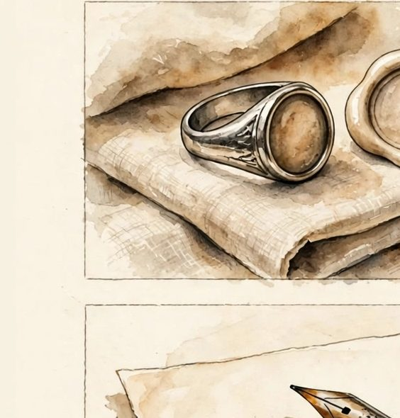
A signet ring lies on plain linen beside a wax seal no one has pressed yet.
This house begins with a plain statement, and it will not be repeated in louder ink: before the audience there was a self. Before the introductions, the applause, the careful explanations of who one is, somebody was already there — eating breakfast, choosing the blue cup, humming off-key in private. The self did not arrive when it was noticed. It was not hired when it was approved. It simply preceded the proceedings, the way a maker's mark precedes the market: struck first, seen later, if it is seen at all, and valid either way.
So this hall goes looking in the only way the Assayer trusts: by noticing. Nothing here will be invented, assembled, or improved into authenticity, because a self is not a project and discovery is not manufacture. The Assay Desk receives whatever is brought to it — a habit, a taste, a sentence spoken in somebody else's voice — and tests it the way silver is tested: not by the shine on the surface but by the mark struck on the inside, in the place where no audience was ever expected to look.
It is worth saying what the hall is not looking for. There is no buried statue under the floorboards, no single true face waiting behind the others like the last room of a corridor. There is only the resident — the one who was here before the guests, who stays after the applause, who signs the register in a hand so ordinary it is easy to miss. The self was never lost, exactly. It was only unannounced, going about its mornings in the unlit rooms. What this house hopes to practice, hall by hall, is a quieter kind of finding. What is genuine does not need to be announced; it only needs, at last, to be noticed.
2A Word That Means "Signed by Its Maker"
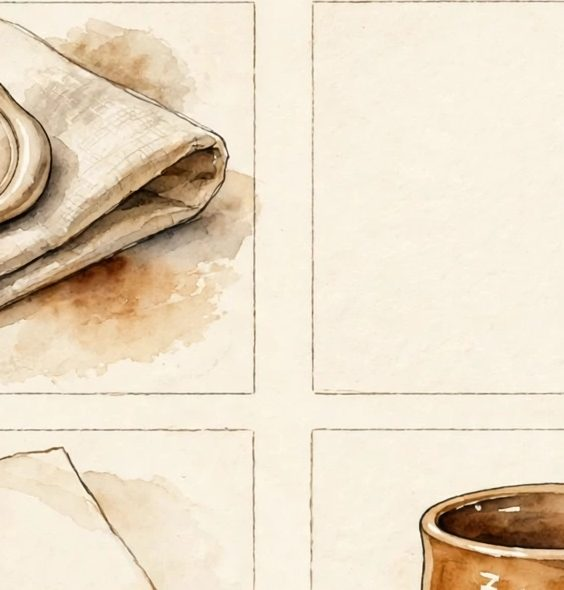
A maker's mark sits punched in soft clay, its edges still damp.
The word itself is older than its fashion. Authentic comes down from a Greek word, authentēs, meaning the one who does the thing himself — the author, the originator, the hand on the work. Before authentic meant real, it meant authored. A document was authentic when it came from the hand it claimed to come from. An object was authentic when its maker could be found in it. The word was never, in its long working life, a compliment about style. It was a finding about origin, entered in a register.
The Assay Desk likes the word for exactly that reason. In the old assay offices, a piece of silver was tested, and if the metal proved true, a hallmark was punched into it — small, plain, and usually hidden where only a handler would ever see it. The hallmark did not make the silver good. It recorded that the silver had been found good, by someone whose whole trade was telling the difference. The register kept the entry. The mark stayed quiet. The piece went out into the world and did its work at tables.
So the hall keeps the word in its original clothes: not a mood, not a brand, not a way of dressing, but a question of authorship. Who made this choice? Whose hand is on this habit, this taste, this ambition? The Assayer does not ask whether a thing is impressive; the register has no column for impressive. The column is narrower and kinder than that. The desk has entered heavier findings on thinner evidence than this, and stood by them. An authentic thing, in the end, is simply a thing whose maker is willing to be found in it.
3The Self Before the Audience Arrived
There was a self before the audience arrived, and its evidence is embarrassingly ordinary. It is the child who talked to the dog in a private language. It is the preference for the corner seat that nobody taught. It is the song known by heart before anyone thought to ask for it. Long before there were reviews, there were rehearsals of nothing — hours spent being someone for no reason, in rooms where the only witness was the furniture. The register's earliest entries are all like this: undated, unwitnessed, and completely unembarrassed.
The audience, when it came, came gradually and mostly with love. Parents watching at the door. Teachers with their kind and unkind attention. Friends, whose laughter taught the first lessons in timing. Later, mirrors of every size, and at last the great portable audience that fits in a pocket. None of this was a crime; being watched is how a person learns the species. But a watched self is a translated self — adjusted, by degrees, for the room it is in, the way a letter is rewritten for its reader.
The hall does not propose evicting the audience; they have seats, and some of them have earned them. It proposes only a distinction the register insists on: the audience met a version, and the version was edited for their comfort, as all decent letters are. Underneath the editing, unhurried and unquoted, the earlier tenant kept living in the house the whole time. The translation goes on being made, daily, decently, and mostly without malice on either side of the page. Before anyone was watching, you were already somebody; the audience only ever met the translation.
4Authentic Is Not a Costume Either
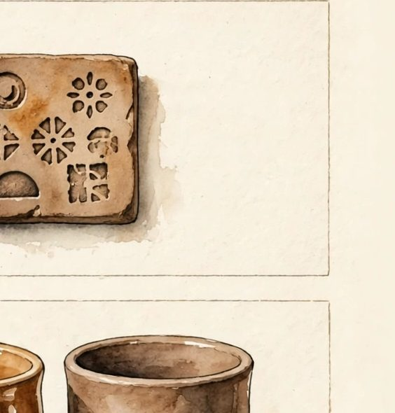
Two cups stand side by side on a shelf, one glazed bright, one plain clay.
Every word that becomes fashionable acquires a wardrobe department, and authentic has not been spared. There is now a look for it: the unvarnished finish, the plain cloth, the carefully unpolished sentence, the rustic edge left deliberately rough. It can be bought. It can be practiced in a mirror. The Assay Desk records this without alarm, the way it records weather. But it enters a caution in the margin of the register: a costume of no costume is still a costume, and it fools exactly the people it was sewn for.
The test the Assayer applies is not about fabric. A costume, whatever it is made of, is chosen for the eye that will see it. The genuine article is chosen — if chosen is even the word — with no eye in the room at all. Raw timber can be an honest material or a stage finish, and from across the street the two are indistinguishable. That is precisely why the assay is done up close, on the inside, where the maker's mark sits and the varnish was never meant to be the evidence.
Nobody is scolded here for enjoying a style; the estate has its own preferences in cloth and timber and does not apologize for them. The point is narrower. The moment realness requires a wardrobe — the moment a person must dress down, roughen up, or plain themselves into credibility — the performance has simply changed theaters. The mark on the inside does not change with the outfit. The register has seen the same piece arrive in both finishes, in different seasons, with the mark identical underneath each time. The moment realness needs a wardrobe, it has already left by the stage door.
5The Difference Between Real and Raw
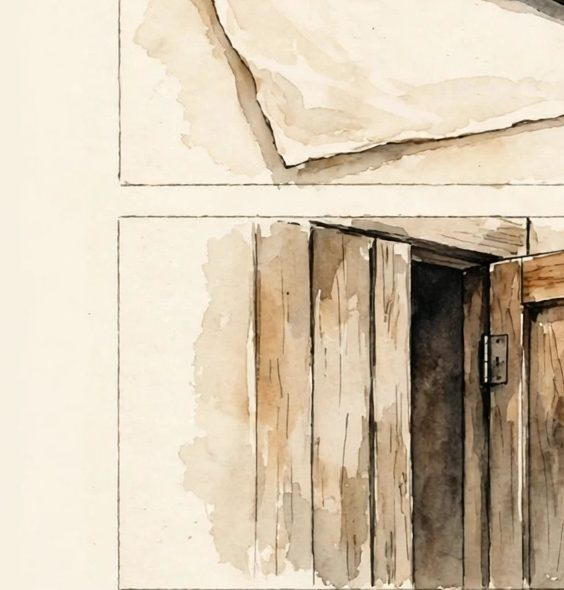
An unpainted wooden door stands open, its grain showing every year it grew.
Real and raw are constantly confused, mostly by people selling one of them. Raw is a texture: unprocessed, unrefined, the ingredient before the kitchen. Real is a fact: true, as opposed to false. The two words share a first letter and almost nothing else. A cooked meal can be entirely real. A raw outburst can be entirely theater — rehearsed, in fact, for years, in the dressing room of the temper. The confusion is old, profitable, and entirely understandable, which is why it survives every correction. The Assay Desk weighs them on different scales and suggests everyone else do the same.
Polish, accordingly, is not deceit, and manners are not a mask in the accusing sense. The hallmarked spoon was worked hard by its maker — hammered, filed, finished — and it is genuine silver all the way through. A sentence can be courteous and true. A person can be finished, considerate, even elegant, and still be signed by their maker on the inside. The desk has assayed gilt-edged courtesy that was gold all through, and rough speech that was tin at the core. Roughness proves nothing except roughness, which the register notes is one of the easier effects to produce on purpose.
What the assay actually tests is simpler and harder to fake: whether the thing is what it is, all the way down. Cooked or raw, polished or plain, the question at the desk is the same — is the metal the same on the inside as the surface declares? Everything else is seasoning. Texture belongs on the surface report, and the surface report is, by long professional custom, the thinnest page in the whole register. Raw is a texture, real is a fact, and the two have never once been the same word.
6Not Truer — Just Less Translated
It would be satisfying to say that the quiet self is the true self and the social selves are false, but the register is not in the satisfying business. The Assayer's finding is more modest and more useful: the self with nobody watching is not truer than the others. It is less translated. The same text, carried across fewer languages, arriving with fewer of its jokes explained and fewer of its sorrows softened for the reader. Truth is not quite the category. Nearness, unlike truth, can be measured without starting an argument at the table. Distance is.
Every audience is a translator, and translators — even loving ones, even skilled ones — make choices. The self presented to a parent is translated into reassurance. The self presented to colleagues is translated into competence. The self presented to strangers in the pocket theater is translated into something with the volume raised. None of these translations is a lie; translation is how anything survives a journey. But each crossing spends a little of the original's exact weight, the way a story loses a flavor at every border it crosses.
So the hall keeps the claim deliberately small, because small claims are the ones that hold. Somewhere under the stack of careful versions there is an edition that was never prepared for export — not better written, not purer in its morals, just nearer to the hand that wrote it. The translations keep their value and their readers, and the hall is a reading room, not a bonfire. But a library is well run only when somebody remembers which volume the others were set from. The original is not a better book; it is simply the one all the others were copied from.
7The Original and Its Many Copies
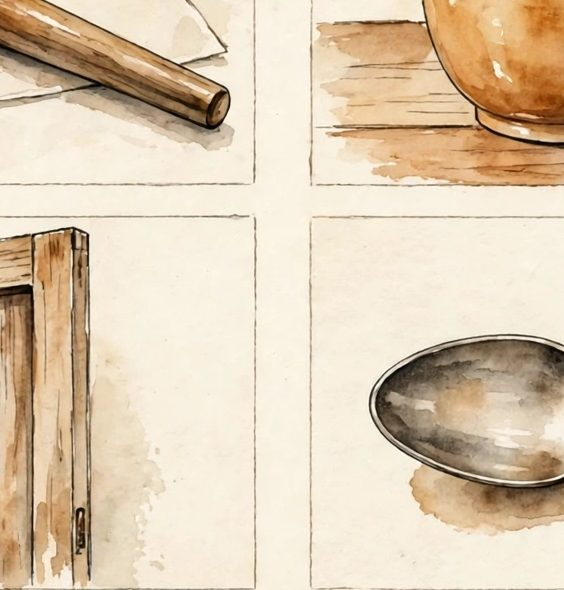
A hallmarked silver spoon catches the light beside three plain imitations.
An original, in a life, does not sit in a vault. It travels by copies. There is the copy carried to the office, presentable and punctual. The copy sent home for the holidays, on its best behavior. The copy that lives in the pocket theater, cropped and lit. Each was struck from the same plate, and each was made for a respectable reason: copies are how anything fragile gets distributed without the original being worn to nothing by handling. The Assay Desk registers all of them without a single raised eyebrow.
Copies, however, drift. It is their known property. A copy of a copy softens at the edges; the fine lines of the mark blur first, then the proportions shift, then one morning the copy being carried is two removes from anything the maker struck. No fraud has occurred. Nobody decided anything. The drift is measured in decades, not decisions, which is why nobody ever notices it happening. The drift is just what happens to a design that is never compared against its plate, in a life too busy for the comparison to make the calendar.
Which is all the hall asks, at intervals: the comparison. Not a bonfire of the copies — the office copy has honest work to do, and the holiday copy keeps a family's peace. Simply, now and then, a sitting with the original: an unwitnessed hour, a preference admitted, a taste checked against the plate. The copies stay in service. The plate stays in the drawer, unlost. The sitting takes ten minutes and a closed door, and the register waives all other fees. Nobody is asked to burn the copies — only, now and then, to sit with the original and compare.
8What the Word Promises, and What It Doesn't
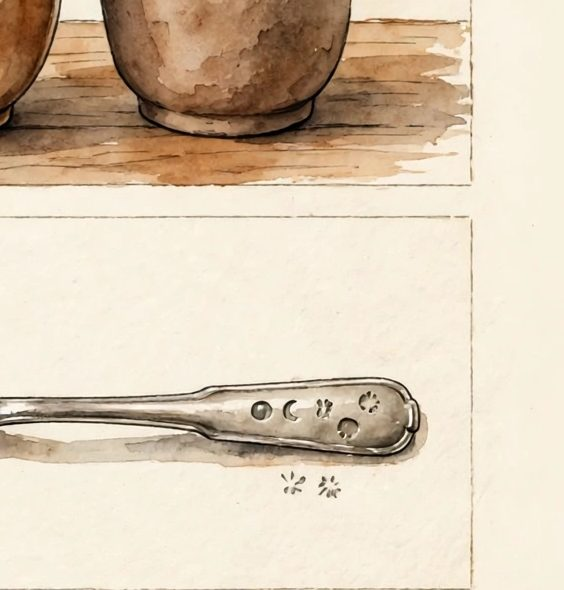
An unvarnished violin waits beside its little pot of varnish, unopened.
Fine print belongs at the beginning of this hall rather than the end, so here it is early: the word authentic promises less than its admirers advertise. It promises a direction — fewer translations, a nearer account of the maker's hand. It does not promise happiness. It does not promise success, relief, admiration, or that anyone, having met the less translated edition, will prefer it to the export version. The register has recorded originals that were prickly, plain, and badly timed, and has entered them as genuine all the same.
There is a harder line in the ledger, and the Assayer reads it aloud without softening it: living nearer the mark sometimes costs applause rather than earning it. The copied self was optimized, over years, for the rooms it travels in. The original was optimized for nothing; it predates optimization entirely. To carry it into company can feel like bringing the workshop draft to a ceremony — true, and slightly underdressed. The hall offers no reimbursement scheme for this. The desk posts this rate at the door, where other halls post their promises. It simply declines to pretend the exchange rate is favorable.
What the word does promise, it delivers with complete reliability: weight. A choice struck by its maker weighs what it weighs, and the scales at the Assay Desk do not flatter it in either direction. That is the whole contract — no glow, no guarantee, no audience reaction included in the price. There are halls down the corridor offering considerably more, and the Assayer wishes them, sincerely, the very best of luck with their paperwork. The word promises a true weight, nothing more; what the weight is worth is a separate ledger.
9The Self That Doesn't Need the Word
The Assayer keeps a private shelf in the register for the most instructive cases: the people who have never once used the word. They do not discuss their authenticity, do not audit it, do not announce it, and would be mildly puzzled to be asked about it. They are too occupied by the business the word points at. A farmer does not hold seminars on his relationship with the weather. He looks at the sky, makes his decision, and goes out into it, and the whole philosophy is in the going.
It is one of the hall's quieter jokes, and the Assayer permits himself a small smile over the ledger: the self that needs the word least is so often the one the word was invented to describe. The vocabulary of realness tends to gather thickest where realness has become a subject of negotiation — in the cities of performance, among the much-watched. The word flowers where the thing is scarce, like a price tag in an empty shop window. Out where nobody is watching and nothing is being presented, the condition flourishes without ever being named, like health in a body that never thinks about health.
Nothing in this hall is arranged to shame the vocabulary; the word has its uses, and the register itself could not be kept without it. But the entry stands, for calibration. The deepest marks in the collection belong to pieces that arrived with no paperwork, no story, and no interest in either — struck plainly by their makers, who then went to lunch. The register marks the shelf in pencil, as a reminder to everyone who works at the desk, including the Assayer. The mark is struck deepest on the pieces that never ask to be inspected.
10A Signature, Not a Slogan
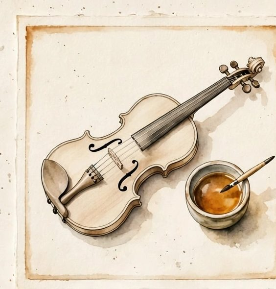
A signet ring turns slowly in the light, its face still blank.
A signature and a slogan are both made of words and intent, and there the resemblance ends. A signature is small. It is written once, at the bottom of a thing that matters, by a hand that accepts the consequences of the document. It does not repeat itself for effect, and it does not get larger when the room gets larger. The register is full of both instruments, and they are filed, pointedly, in different drawers. A slogan is the opposite instrument: built for volume, designed for repetition, worthless the moment it is said only once, by one person, in a normal speaking voice.
The authentic self, as the register keeps it, signs things. It signs a preference and lets the preference stand without a campaign behind it. It signs a refusal, quietly, and does not print the refusal on anything. It signs an ordinary Tuesday, which is perhaps the bravest document of all — a day with no audience, no announcement, and a maker's mark struck on the inside where only the day itself will ever read it. None of this requires letterhead. All of it requires the hand to be actually present.
Slogans, by contrast, must be maintained. They wilt without an audience the way cut flowers wilt without water, and keeping one alive can quietly become a person's whole occupation. The Assay Desk has weighed both and recorded the result in its plain hand: a signature survives silence, obscurity, and time, because it was never addressed to any of them. The hall offers no course in the subject; the hand learns it the way it learns everything, by signing. A signature is written once and quietly; a slogan has to be shouted to stay alive.
11Genuine Is a Quiet Property
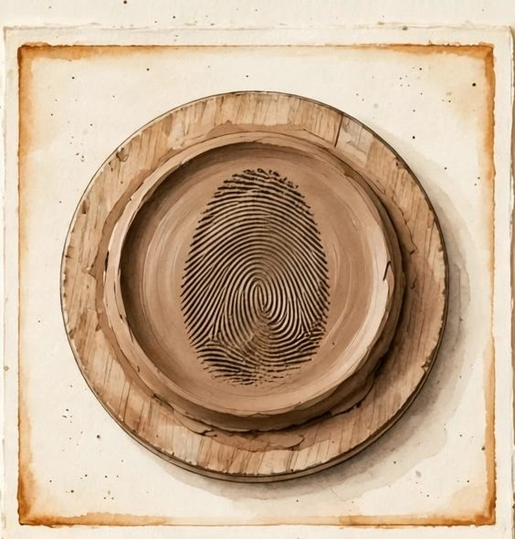
Worn stone steps sag gently in the middle, polished by a century of feet.
Genuine is a quiet property. It does not sparkle on approach, does not improve with lighting, and is nearly useless at a first meeting, where the loud properties win every time. It shows instead in the slow evidence: the tool that has fitted the same hand for twenty years, the step worn hollow by actual feet, the sentence a person says the same way in every decade of their life. The Assay Desk trusts wear over shine as a matter of professional policy, because shine can be applied in an afternoon and wear cannot.
Consider what wear actually certifies. A worn thing has been used — not displayed, not described, used — by somebody who kept choosing it when newer things were available. The unbeautiful cup that fits the hand, the unbeautiful opinion that survived every fashion of its era, the unbeautiful friendship with no story attached: the register enters these in a strong hand. Their evidence is not that they gleam. Shine, by contrast, has a half-life, and the register could set its clock by the fading of it. Their evidence is that they are still here, still in service, still unreplaced, long after the gleaming things were carried out.
This is why the assay takes time and why the hall cannot be hurried. A quiet property cannot be demonstrated on demand; it can only be accumulated, the way the step was hollowed — one ordinary passage at a time, nobody watching any particular footfall. The visitor who wants proof by Friday is politely given the tour and shown the door. The Assayer keeps his one instruction for visitors in the plainest ink he owns: come back in ten years and look again. What is genuine rarely gleams; it fits, it lasts, and it asks for no introduction.
12The Assay Begins at Home
No journey is required, which will disappoint the travelers and relieve everyone else. The assay begins at home, in the rooms already occupied: the kitchen where the cup is chosen without thought, the hallway where the coat is taken down, the chair by the window where the unwitnessed hour happens. The original was never exiled to a distant country of the self. The door of this assay office is the kitchen door, and it is never locked against the tenant. It lives at the address on file, keeps ordinary hours, and can be visited without an appointment, a ticket, or a change of clothes.
The instruments are domestic too. The Assayer's whole laboratory fits on a kitchen table: attention, which costs nothing and is rarely in stock; the register, meaning any honest record kept in a plain hand; and time — the one reagent that cannot be substituted, hurried, or bought in concentrate. With these, the assay proceeds in the middle of an ordinary life, between the kettle and the door, interrupting nothing. No appointment is kept more faithfully than the one a person keeps, unobserved, with their own attention. Most of the great tests in this hall are performed standing at a counter, waiting for water to boil.
So the first hall closes where it opened: before the audience, at home, with the resident in residence. The halls ahead will walk through the borrowed furniture and the evening performances and the quiet rooms, and the assay will follow at its own pace with its small instruments. The twelve rooms behind us were only the first corridor of the house, and the house is larger than its entrance, and quieter in proportion as one goes deeper into it. The search ends where it had to begin: at home, with the kettle on and nobody performing.
13The Borrowed Self
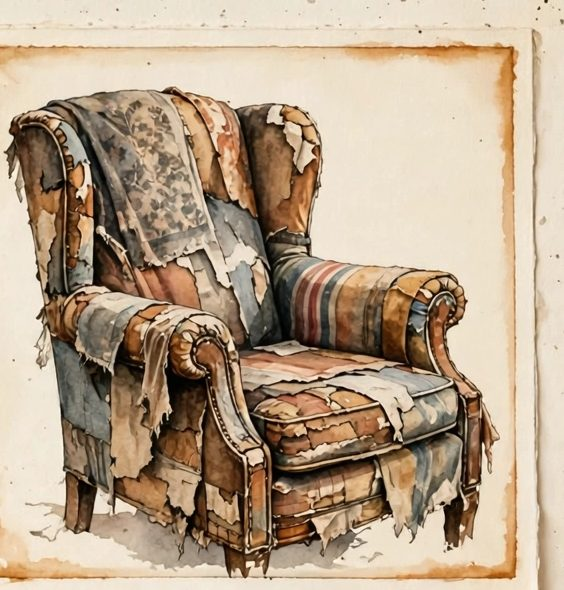
An armchair sits re-covered in fresh cloth, its old shape unmistakable underneath.
Every self on record begins as a borrower. This is not an accusation; it is the register's first entry for every name in the book, without exception. A child arrives with no opinions, no tastes, no ambitions, no phrases — a furnished apartment is required at once, and the family provides one: their furniture, their arrangements, their view from the window. School adds rooms. The era adds weather. By the time a person is old enough to conduct an assay, the borrowed self is fully furnished and has been lived in for years.
The loans, itemized, are unremarkable, which is what makes them easy to miss. Opinions, borrowed at the dinner table. Tastes, borrowed from the loudest friend. Ambitions, borrowed from the general direction of the crowd. Courage, fear, vocabulary, the correct things to want and the correct things to be embarrassed about — all of it checked out, in childhood, from libraries that never issued cards. The borrower did not sign anything. The loans were not negotiated; they were absorbed, the way a sponge takes the shape of whatever it is set in. The borrower was busy growing teeth.
The Assayer enters this hall's finding in a hand too calm to be misread: borrowing is not the scandal of a life. It is the beginning of every life, including the lives now considered impressively original, all of which started as furnished rooms. The only question the register eventually asks — gently, and usually decades later — is an inventory question. The question is asked in pencil, with the whole rest of a life left in which to answer it. Every self begins as a borrower; the only question the register asks is which loans were ever returned.
14Opinions I Inherited Like Furniture
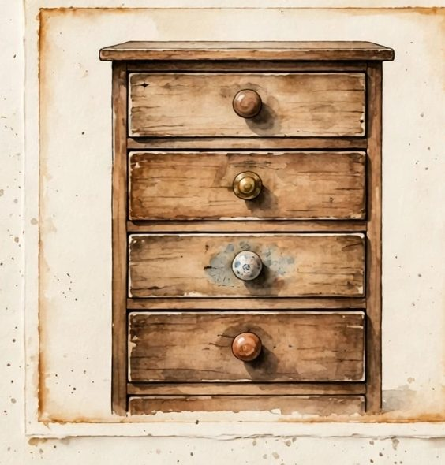
A chest of drawers stands against the wall, every knob a different shape.
Opinions are inherited like furniture: they come with the house, they are heavy, and nobody remembers choosing them. There are views on money, absorbed before arithmetic. Views on success, arranged in the front room where visitors will see them. Views on entire categories of people, delivered flat-packed by the era and assembled in childhood without the instructions. They are sat on daily. They are dusted. Guests sit on these opinions daily without noticing them, which is the surest sign of furniture doing its work. They are defended, at holidays, with the energy usually reserved for things one has actually examined.
Inherited furniture comes in two grades, and the assay treats them differently. Some of it is solid oak: the prejudice in favor of honesty, say, or the conviction that debts are paid — pieces a person would choose again, given the choice, and keep choosing at every house they ever live in. Some of it is flat-pack: wobbling verdicts about worth and failure, assembled from a slogan and a mood, which collapse the first time real weight is put on them. Both kinds look equally official in the front room. Only sitting down tells them apart.
The hall proposes no bonfire. Furniture that has served a household is not insulted by being examined; it is honored by it, the way a chair is honored by a sitter who checks its legs first. Keep the oak. Retire the wobblers. The register asks only that the inventory be taken once, in a clear light, by the current tenant. The inventory is not an accusation; no tenant was ever blamed at this desk for the contents of an inherited house. An inherited opinion is not an enemy; it is only furniture that has never been asked whether you chose it.
15Tastes That Arrived by Mail
Some tastes are homegrown, and some arrive by mail. The music an older sibling played through the wall until it became, by osmosis, a preference. The food a whole city agreed to praise, ordered at first to keep up and later — or never — out of love. The deliveries continue into adult life, of course — the mail of other people's enthusiasms never stops arriving at a lived-in address. The books one was supposed to have opinions about, shelved spine-out in the personality like deliveries photographed at the door: received, acknowledged, and in a surprising number of cases never actually opened.
The mail is not the enemy. Half of civilization arrives by mail, including most of what's worth having, and a delivered taste can settle in and become genuinely one's own — the record is full of borrowed enthusiasms that took root and flowered into the real thing. The Assay Desk makes no ruling against imports. An unopened parcel, however lovingly addressed, is evidence only about the postal service. It rules only against the unopened parcel: the preference displayed at full strength for a thing never once tried in private, in an unwitnessed hour, with nobody's admiration riding on the verdict.
The test, accordingly, is embarrassingly small, and can be run at home with the door shut. Serve the dish with nobody to impress. Play the record with the windows closed. Read the book with no intention of mentioning it. What survives unwitnessed use gets entered in the register in ink; the rest is returned to the shelf of the almost-liked, without ceremony or apology. The Assayer performs the test on his own shelves yearly, and fails a few deliveries every single time. A taste that arrived by mail can still become yours — but only after you have opened it yourself.
The Assay Desk
One desk receives all correspondence for this assay — questions, corrections, greetings, and word of anything you have tested lately and found genuine, or found wanting. It is read in the order it arrives.
16The Ambition Someone Else Ordered
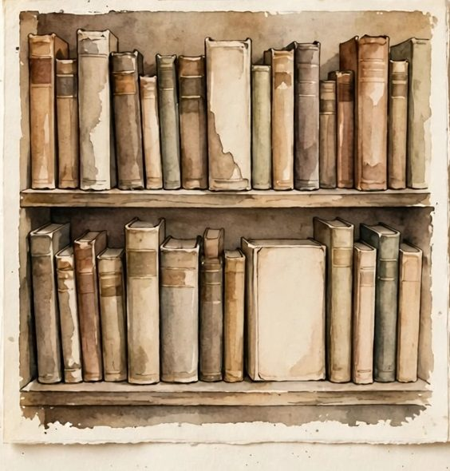
A gilded frame hangs crooked on the wall, grander than the picture it holds.
Ambition, too, can arrive as a delivery. A parent sketches a career the way other parents sketch a house — lovingly, in detail, on the back of the child's own envelope. A teacher points at a ladder. The era advertises one in every window: the title, the salary's silhouette, the life that photographs correctly. The order is placed early, often before the person it concerns can read. Assembly takes about twenty years. The finished ambition stands in the front room, impressive, and slightly too large for the life around it.
Nothing in the register forbids a delivered ambition. Some ordered ladders turn out to lean against exactly the right wall; the assay has recorded delivered careers that fit their tenants like tailored coats, and it enters them without a whisper of suspicion. Borrowed direction is still direction. A map drawn by somebody else can still cross true country. Nor does the desk ask it with any triumph; most tenants find the answer obvious, and have for years. The desk's question is never where the ambition came from — origins are cheap evidence — but whose roof the ladder currently reaches, and who is doing the climbing.
The finding is made standing at the foot of the thing, looking up, in an unwitnessed moment. If the climb still quickens the climber, the loan has quietly become a deed, and the register amends the entry with pleasure. If the ladder is climbed only because it was delivered, the hall suggests a smaller transaction: not a bonfire, just an honest look at the view being purchased with the years. The view from a chosen roof and the view from a delivered one can be identical, and feel entirely different at the railing. There is no shame in a borrowed ladder — only in dying on a roof you never chose.
17Phrases I Say in Other People's Voices
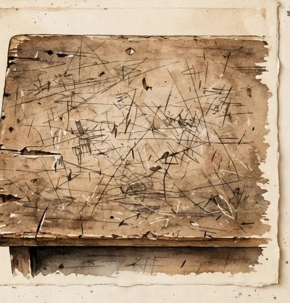
A mirror hangs in an ornate borrowed frame, reflecting nothing but morning.
Every speaker is a small crowd. There is the father's verdict, delivered word-perfect at the exact moment of disappointment. The teacher's caution, still on duty decades after the classroom emptied. The friend's joke, retold in the friend's own timing. The era's slogans, circulating through the mouth like small change. A person opens their mouth to speak in their own person and hears, with varying amusement, a committee. The register is not troubled by this. The committee rarely votes; it simply speaks first, and often in the accents of the long departed. It merely takes the minutes.
Ventriloquism of this kind is not deceit, and the borrowed phrases are not lies; many of them are the best sentences a person owns, bequeathed by better speakers. The assay is auditory, nothing more: can you hear whose voice it is while it is coming out of your mouth? A phrase whose owner is known can be quoted — and a quotation, honestly framed, is a legitimate instrument. A borrowed sentence is not a stolen one; most were given freely, and their givers would be startled at their longevity. It is the unmarked quotation, mistaken by its own speaker for a thought, that the desk gently circles in pencil.
Over the years, a native idiom forms underneath the committee's — slower, plainer, less quotable, and unmistakably one's own. It tends to appear when nobody is being persuaded of anything: instructions to oneself, remarks to the dog, the truth told at kitchen counters. The register listens for it the way an assayer listens for the ring of true metal on stone. The idiom is unglamorous and entirely unpatentable, and the desk would not trade the whole committee's eloquence for one sentence of it. A borrowed phrase is harmless once you can hear whose mouth it really fits.
18The Family Script, Read Aloud
Every family keeps a script, and it is read aloud at holidays whether anyone opens the binder or not. There are roles, assigned early and rarely renegotiated: the responsible one, the difficult one, the one who will go far, the one who must be worried about in a particular tone of voice. There are lines — some families can recite one another's entire parts. And there are stage directions older than anyone at the table: what may be wanted, what may be grieved, what is never, ever mentioned in the good room.
It would be a poor assay that called the script a villain. A script is how a small person learns to be in scenes at all — when to speak, how to comfort, what a celebration sounds like. The family's lines carried their first speakers through wars, migrations, and thin decades; they are worn smooth with use, like the steps in an old house, and some of them are load-bearing. Some scripts in the archive are annotated in four generations of handwriting, which the Assayer counts among the house's treasures. The register honors the script the way it honors all borrowed shelter: it kept someone alive in weather.
But a script is a script, and the Assay Desk notes the difference between a part learned and a life lived. The adult tenant is permitted — eventually, quietly, without a press release — to annotate their copy: to deliver some lines differently, to return a role that was miscast in childhood, to ad-lib in the direction of the truth. The binder stays on the family's shelf, honored and increasingly out of date, like last century's atlas of a changing country. The family script raised you; it was never issued as a life sentence.
19What School Taught Me to Want
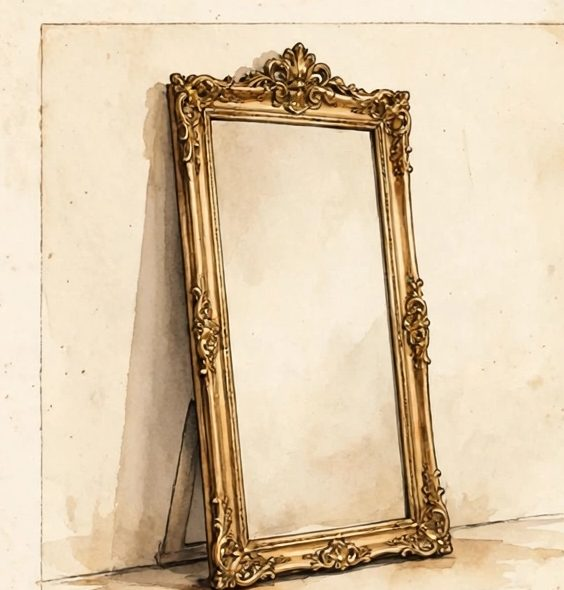
A school desk bears abstract carved marks, worn nearly smooth by sleeves.
School taught subjects, and underneath the subjects it taught wanting, which was the real curriculum all along. It taught the wanting of the top row and the first team. It taught wanting to be chosen, visibly, in front of the others, with the wanting itself kept tastefully invisible. It taught the fear of the red mark — not of error, exactly, but of error witnessed. And it taught the deepest lesson, the one never announced from the front of the room: that a person's worth could be entered in a column, and the column could be read aloud.
Some of those installed wants turned out to be tools, and the register keeps them in service without complaint. The desire to finish a thing properly. The appetite for a difficult text. A certain respect for evidence. All genuinely useful; all, on assay, found capable of bearing the maker's own mark over time. Others never converted. The reflex to check one's standing before checking one's direction. The little flinch, at forty, at fifty, before any witnessed attempt — the red-mark fear, still reporting for duty in a life with no teacher in it.
The desks were left behind decades ago, and the building has other children in it now. What remains is the wiring: wants installed so early they present themselves as character. The hall's assay is simply to run a finger down the list and ask, of each, whether it was ever chosen — or only ever assigned, in a room where choosing was not yet on the syllabus. Most tenants, on hearing the question, can point to the exact classroom where a given want was issued to them. The lessons ended years ago; the wanting they installed still reports for duty each morning.
20The Era's Handwriting in Mine
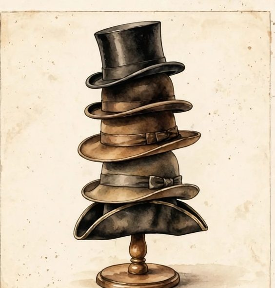
A row of hats from different decades waits on pegs, each once entirely in fashion.
Hold a letter written in any decade and the era is visible before the words are: the slant everyone learned, the flourishes everyone copied, the abbreviations everybody's century agreed on. A life is written the same way. The era supplies the hand — its slogans in the margins, its prices on the heart's ordinary goods, its ruling on what counts as a life and what counts as a delay of one. My hand carries my decade's slant. So does yours. The Assayer can date a self the way a clerk dates a document: by the handwriting it never chose.
This is not a complaint, because handwriting cannot be unwritten and mostly should not be. The era's hand taught real letters: some generations learned thrift in theirs, some learned defiance, some learned a tenderness their grandparents' slant had no characters for. Period style is not falsehood. It is the water every fish in the century swam in, and a certain amount of it is simply what being a person of one's time means. A fish is not asked to apologize for the water, and a person is not asked to apologize for the century. The register does not penalize a slant for being datable.
The assay makes a narrower distinction, between the strokes that are the century's and the strokes that have become the writer's. They can be told apart only in use: the era's phrases arrive pre-assembled and applaud themselves; one's own arrive slower, plainer, and sometimes embarrass the hand that writes them. Nothing can be done about the slant. Everything can be done about the sentences. The register can always tell the difference, in the end, by which strokes were chosen and which were only inherited. You cannot choose the century that taught your hand to write; you can only choose what it writes next.
21Borrowed Courage, Borrowed Fear
Courage can be borrowed, and often has been. It is borrowed from the roar of a group, from a leader's certainty, from the simple fact that everyone else is walking forward. Borrowed fear is just as available and keeps longer hours: borrowed from headlines, from a parent's warnings still echoing at full volume, from the cautionary tales a whole culture tells at its table. Both garments hang in every hall closet. The garments are older than their wearers, in many cases, having been handed down the generations like all practical clothing. Both have been worn by every person in the register, including the ones remembered for their bravery.
The assay is even-handed about the two loans, because both have honest service on their records. Borrowed courage has carried people across the first bridge — the application sent, the question asked, the door knocked on — until their own supply arrived. Borrowed fear has kept hands off hot stoves and feet off rotten ice for entire childhoods. The Assay Desk does not confiscate useful equipment. The interest on an unexamined loan, the register notes, is always paid in the same currency: room. It inventories it, and asks the inventory question in its plain hand: whose is it now, and is it still being paid for?
Trouble, when it comes, is only ever a matter of tenancy. Courage borrowed for a crossing becomes a burden when it must be worn as a uniform. Fear borrowed for a winter becomes a landlord when it is still collecting rent at fifty. The register's remedy is not drama; it is the quiet return, item by item, each with its thanks recorded in the margin. A gate guarded by someone else's fear is still a guarded gate; the question is only who holds the keys at midnight. Borrowed fear guarded the gate for years; it does not have to hold the keys forever.
22Returning What Was Never Mine — Gently
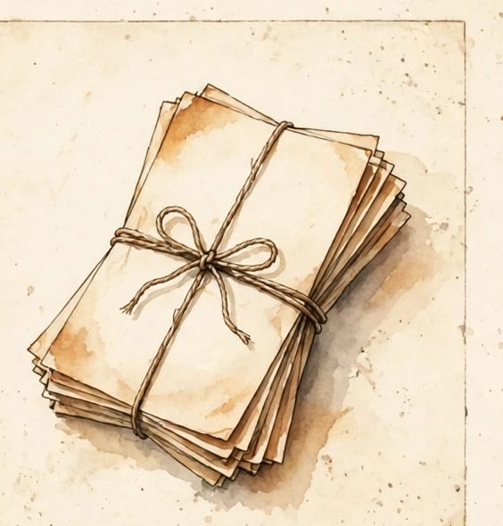
A parcel wrapped in brown paper waits by the door, addressed in a kind hand.
The returns desk of this hall is deliberately unhurried, and its manners are the whole of its method. A loan is not returned by bonfire. It is not returned by denunciation, by a speech at the family table, or by a public bonfire of the borrowed vanities. The Assayer has watched returns made in anger, and entered every one of them, later, a second time, done properly. It is returned the way good tenants return keys: cleaned, on time, with the rooms in better order than the lease required, and with thanks expressed plainly for the shelter, which was real shelter, in real weather, for real years.
The practice, itemized, is smaller than people expect. Name the thing — the inherited verdict, the delivered ambition, the phrase in another's voice. Say, once, whose it was. Say what it did, because it did something; the register insists the thanks be specific and true, not a courtesy. Then set it down — not thrown, set down — in a place where it can be retrieved if the weather turns, because the Assayer is not a romantic and knows that some winters come back. Then walk the room and notice its new acoustics.
What is left undone by this method is as important as what is done. Nobody is blamed at the returns desk. The lenders were mostly lending what had been lent to them, in a chain of furniture and phrases reaching back out of sight, and the register has no column for culprits. The whole ceremony, done right, takes less time than a single good grudge, and leaves the hands cleaner and the conscience untaxed. What was borrowed can be handed back with clean hands and a thank-you; gratitude is not a chain.
23What Remains When the Loans Are Called In
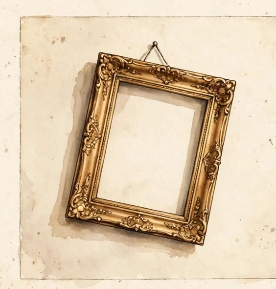
An emptied drawer stands open, smelling faintly of cedar and old paper.
There is a quiet audit at the end of this hall, and it is conducted in an emptier room than most people expect. Return the inherited opinions and the delivered ambitions, the era's phrases and the borrowed fears, and the apartment of the self stands noticeably bare: fewer verdicts, fewer certainties, whole shelves cleared. Visitors sometimes mistake the moment for a loss. The Assayer does not. He has conducted this audit many times, and he knows the echo in a cleared room is not emptiness. It is the sound of a space finally its own size.
What remains, itemized, is modest to the point of comedy. A few preferences that never needed defending — the tea taken a certain way, the walk at a certain hour. A laugh that belongs to no committee. The way the hands move when they are doing known work. A distaste or two that survived every fashion intact. The register calls this the residue, and it weighs it with surprising respect, because the residue is the one part of the inventory that was never a loan. It was there before the furniture arrived.
The modesty of the remainder is the finding, and the hall asks that it not be apologized for. A self is not measured by the square footage of its opinions. What survives the calling-in of the loans is small because the genuine article usually is: struck plainly, kept inside, seen mostly by handlers. Visitors expecting a cathedral are shown a cottage, and the Assayer notes, with satisfaction, how many of them sit down and stay for tea. When everything borrowed has gone home, what is left in the room is small, quiet, and unmistakably yours.
24Nothing Borrowed Is Shameful
This hall closes its register with a ruling, and the ruling is plain: nothing borrowed is shameful. The child who spoke in the family's phrases was not a fraud; the child was learning language, which can only be learned in other people's words. The young striver climbing a delivered ladder was not a counterfeit; the young striver was using the available map. The ruling is posted at the hall's door, where returning tenants can read it on their way out. The Assayer has examined thousands of borrowed selves, and he stamps this entire category of evidence with the same unhurried finding: protected, served, survived.
Shame, where it appears in the audit, is almost always a later import — brought in by the same culture that issued the loans, which profits first from the borrowing and then from the embarrassment about it. The register declines the whole transaction. A loan that kept a young self warm through a cold decade did honest work, and honest work is entered in this book in ink, whatever the fashion of the moment says about its origins. Even the ill-fitting loans fit the person who had nothing else to wear.
So the borrowed self is filed, at the end of the hall, neither as the enemy of the authentic one nor as its shameful draft, but as its first shelter — the furnished room in which the resident grew tall enough to start an inventory. The loans go back with thanks. The tenant stays. The tenant's name goes into the register without an asterisk or a footnote, which is this office's entire theology on the subject. Nothing borrowed is shameful; a loan only becomes heavy when it is mistaken for a deed of ownership.
25The Performed Self
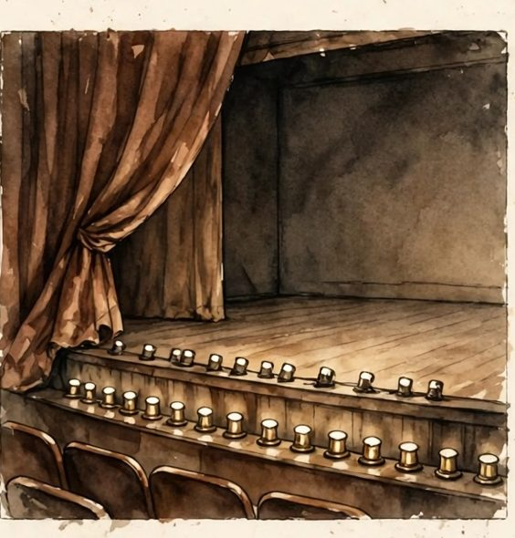
An empty stage waits behind a curtain's edge, footlights glowing on dust.
Every estate has a theater, and this hall is it. The performed self is the one arranged for viewing: timed, lit, angled toward the house. It knows where the audience sits. It owns the version of the laugh that lands, the version of the story with the pauses in the right places, the version of the face that photographs kindly. The Assay Desk registers this self without hostility, because presentation is an old and honorable social art, and the performed self is frequently the one paying for the building's upkeep.
It is worth stating the performed self's defense in full, because the hall tries no one in absentia. Performance is how strangers are spared our weather. It is how a difficult hour is carried with grace, how a team is steadied, how a family's evening is kept intact. Without the craft, the genuine article would have to do all its own carrying, and it has never once applied for that position. The mask in this hall is not filed under deceit; it is filed under craft — the learned, laborious craft of being legible to other people, without which nobody would get through a single working week unbruised.
The Assayer's question about performance is therefore never whether it happens. It happens in every entry in the book, and the desk would doubt the authenticity of anyone claiming otherwise. The question is about tenancy and rest: who chose this play, who may leave the stage, and whether the performer is ever — in any room, at any hour — off. A self that is never off duty is not more authentic; it is only, in the register's plain word, tired. Performance is not the opposite of the self; it is the self, working evenings.
26The Rehearsed Laugh
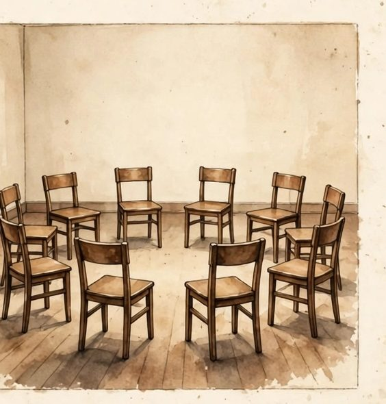
A circle of rehearsal chairs stands empty, scripts closed on every seat.
Every person in the register owns a rehearsed laugh, and the Assayer can usually date its first fitting. It is the laugh kept ready at the dinner table — timed to other people's punchlines, generous in volume, exact in its arrival. It was assembled across a childhood of listening at doors and a youth of wanting to be included at the precise moment the group's weather changed. It is not a false laugh. It is a trained one, the way a musician's scales are trained, and it has carried its owner through a thousand evenings.
A rehearsed laugh is, in the main, social oil, and the desk enters it on the credit side. Rooms run on it. Hosts depend on it. Many a fragile story has been carried safely across a table on the strength of listeners who laughed in the right places out of pure practiced kindness. The assay does not confiscate the instrument. It listens, instead, for the one anomaly the register does flag: the rehearsed laugh performing to an empty room — the chuckle issued alone, at nothing, out of a habit so deep it no longer checks whether anyone is there.
Against it, for calibration, the register keeps a description of the other kind: the laugh that escapes before permission, badly timed, too loud, structurally helpless, the one that has ended more dignified evenings than any scandal. That laugh cannot be rehearsed, which is precisely its evidentiary value. The desk can tell the two apart blindfold, the way a tuner tells two notes struck in adjoining rooms. A laugh can be rehearsed a thousand times and still be a kindness; it is only a debt when it is owed to no one.
27The Self That Enters First
Into every consequential room, a self is sent ahead. It enters first — groomed, briefed, smiling in the correct wattage — and it takes the initial soundings: the temperature of the company, the location of the exits, the rank of everyone present. Behind it, arriving at a more human pace, comes the rest of the person, unbriefed and considerably less lit. The rest of the person, when finally through the door, must then live up to the dispatches or apologize for them. The advance self is the reason first impressions so often feel, in retrospect, like dispatches from a slightly different country than the one the person actually lives in.
The arrangement is not hypocrisy; it is logistics, and the register defends it. First minutes are expensive. The advance self absorbs costs the resident cannot always pay — the small talk, the credentials, the performance of being entirely unsurprised by the room. Many careers, friendships, and rescues began in the care of this emissary, and the Assay Desk has entered some of its work in the strongest ink it owns. The sash, on inspection, is stitched from real occasions: rooms actually steadied, panics actually prevented, doors actually opened. An ambassador is not a fraud for wearing the sash.
The cost appears only in the scheduling. An emissary who enters first can, over years, begin entering only — until the resident has not attended a consequential room in person for a very long time, and receives all of life as reports. Reports are a fine way to run an embassy and a poor way to have a life. The assay asks the gentle scheduling question: when did the country last speak for itself? The self that enters first is a fine ambassador; trouble starts when the ambassador never lets the country speak.
28Applause as a Compass
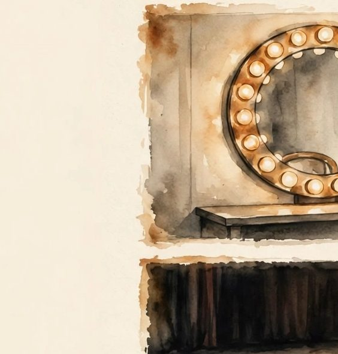
A blank playbill hangs in a frame, waiting for a title no one chose.
Applause is a navigational instrument, and it is not a bad one — as far as it goes. It answers, promptly and with numbers attached, the question of what landed. Do more of this, it says. Less of that. Louder here, softer there. A person who navigates by applause will rarely be lost in the immediate sense: the next step is always marked by the sound of hands. Careers have been steered by it for decades without once running aground, which is exactly what makes the instrument worth examining at the Assay Desk.
The examination is brief, because the finding is simple. A compass that points at the audience is not broken; it is merely honest about its design. It points at approval, reliably, in all weathers. What it cannot do is point north. North, in the register's geography, is the direction of the maker's mark — the way the work would go if the house were empty and the piece were being made, struck, and signed anyway. The two bearings coincide often enough to be confused. They are not the same bearing.
The desk keeps both instruments and advises carrying both, with the labels left on. Applause for the weather of rooms: invaluable. The mark for the direction of a life: irreplaceable. Confusion begins only when the louder instrument is consulted on the quieter question, and a person wakes up years down a well-applauded road, asking the hands where home is. The register records applause faithfully, in its own column, and the mark in another, and never lets the columns merge. Applause tells you where the audience is sitting; it was never designed to tell you where you live.
29The Version for the Photograph
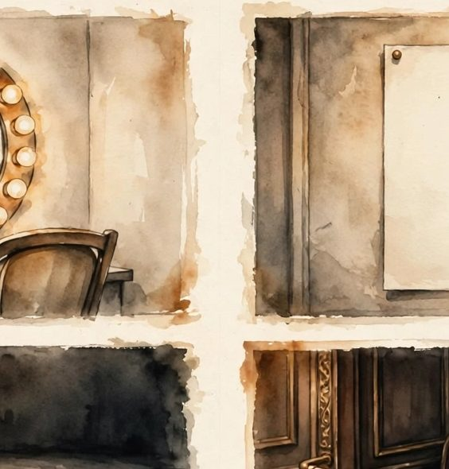
Rows of empty theater seats face a stage lit for nobody.
There is a version maintained for the photograph, and its maintenance schedule would astonish its owner if it were ever written down. The chin has instructions. The light has opinions. There is a side of the face with seniority, a smile kept at a practiced wattage, a whole silent technology of being seen correctly. The sitter in the old portraits looks, very often, slightly exhausted, and the exhaustion is the most lifelike thing in the frame. None of it is modern, whatever the pocket theater claims: portraits have been negotiated since paint, and every sitter who ever held still for an hour was collaborating in exactly this gentle fiction.
The register tries the case fairly. A portrait is not a lie; it is a genre, with conventions everyone at the sitting understands. The photographed self has protected its tenants — secured the position, opened the door, made the introduction the resident was too tired to make in person. Nor is the sitting itself without pleasure; the Assay Desk has recorded entire eras of a life that clearly enjoyed the camera's company, and it does not begrudge a single frame of it. The account is kept in hours, not in accusations.
Hours are, in fact, the whole finding. A portrait that takes an afternoon is an artwork. A portrait that takes the day — every day, in rooms with no camera, at tables with no lens, the chin arranged for an audience of furniture — is a tenancy. The assay asks only how long the sitting lasts, and whether the sitter is ever released from it. Released, the sitter's face does something no portrait ever catches: it becomes nobody's business at all. Every portrait is a negotiation; the only sad one is the sitting that never ends.
30Performing Even Solitude
The performance, being well trained, follows its owner home. This is the hall's quietest exhibit: solitude, performed. The quiet evening narrated internally as if it were being reviewed — the book chosen partly for the person one would be seen to be, alone; the simple meal arranged with one eye on its own story; the rest taken in costume, with posture. No audience has been invited. The house is empty. The internal critic keeps his clipboard even at the beach, and awards marks for the quality of the rest being taken. And yet the show, out of pure professional habit, goes on in an empty theater at full wattage.
The Assayer records the peculiar fatigue of this production, because it explains a tiredness that sleep does not fix. Resting in costume is not resting; the muscles of presentation never fully stand down, and a person can spend an entire evening alone, doing nothing, and retire more exhausted than the public day made them. The register has a marginal note for this condition, written in a sympathetic hand: the actor is not deceitful. The actor has simply forgotten the way off the stage, which is a different and sadder thing.
Finding the way off is not a technique, and the hall sells none. It begins as the smallest inventory: one hour in which nothing is narrated, one pleasure taken without describing it, one ordinary act allowed to happen badly lit and unwitnessed, including by the internal critic with his clipboard. The way off, when it is found, is never found dramatically; it is found the way a light switch is found, by an ordinary hand in the dark. Solitude performed for an audience of none is the one show in this hall with no closing night.
The Assay Desk
One desk receives all correspondence for this assay — questions, corrections, greetings, and word of anything you have tested lately and found genuine, or found wanting. It is read in the order it arrives.
31The Feed Is a Stage With No Wings
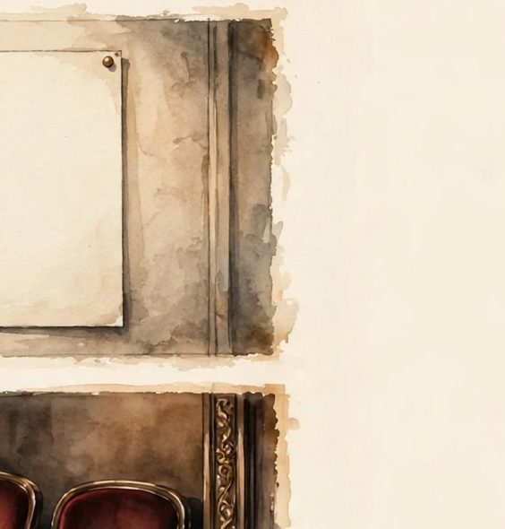
Stage wings hold ropes and sandbags in the dark, the play still going on.
Every old theater was built with a mercy in its architecture: the wings. Step two paces sideways and the actor was out of the light — out of the role, out of the story, breathing in the dusty dark among the ropes while the play continued without them. The feed abolished the wings. On its stage, every exit is still visible, every pause is part of the performance, and even silence is published in the same size type as speech. The wings were also where the actor learned the play was survivable, which may be the wings' most underappreciated function. The architecture, not the actor, is what changed.
It is important, at the Assay Desk, to keep the blame filed under architecture. A performer who cannot leave the stage is not more false than one who can; they are more tired. The pocket theater runs a continuous performance with no interval, no wings, and a house that never empties — and then attributes the performer's exhaustion to their character. The register declines the attribution. Generations of actors were not better people. The desk files the exhaustion accordingly: under building, not under tenant. They were people whose buildings let them stop.
What the hall offers instead of blame is a carpenter's observation: wings can be built locally, at household scale, by anyone stubborn enough to want them. A door that closes. Hours in which the stage is dark by decision, not by failure of signal. Rooms of a life that are simply not connected to the theater at all. The construction is humble and entirely legal. Humble construction, unglamorous materials, no ceremony at the opening — the usual specifications of everything in this estate that actually works. A stage with no wings does not make the actor false; it only makes the resting actor's job harder to find.
32When the Performance Is Kindness
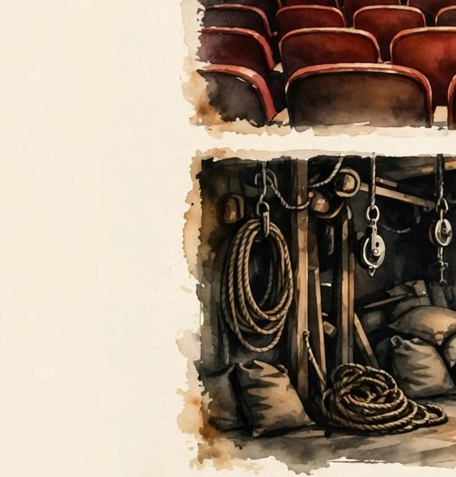
A chandelier burns over an empty theater, lit for a kindness no one attends.
Let the record show a performance the Assay Desk weighs in gold. Cheerfulness, carried into a sickroom by a person who was frightened. Patience, performed at full length for a difficult elder by a person at the end of their own tether. Calm, staged convincingly in a crisis so that everyone else in the room could borrow it. None of it was felt first and expressed second; it was performed first, deliberately, and the feeling — this is the register's repeated finding — frequently arrived afterward, like a guest who comes once the table is set.
The performed self is sometimes accused, in fashionable quarters, of inauthenticity on exactly this evidence, and the desk rejects the charge with unusual warmth. A kindness does not become false because it was willed before it was felt. The heart, examined over a lifetime of entries, learns a surprising number of its best lines by being made to say them — the way hands learn a craft by performing its motions before the motions become graceful. Rehearsal, in this column of the register, is not the opposite of sincerity. It is frequently sincerity's first draft.
So the hall keeps a separate column for performances in the service of others, and the column is a credit column. The test at the desk was never whether a thing was performed — tea is performed, weddings are performed, mercy is very often performed — but whom the performance was for, and whether the performer may also rest. Mercy that waits to be felt before it is performed would arrive, in most recorded cases, unforgivably late. A kindness performed is still a kindness; the heart has always learned some of its lines by heart.
33The Encore Problem
Success creates the encore problem, and it is the subtlest trap in the theater. A performance lands — the funny one, the strong one, the unbothered one, the one who handles things — and the house, delighted, asks for it again. And again. The request is a compliment every single time, which is precisely the mechanism: nobody booed, nobody forced anything, and yet one morning the role has been running for a decade and the calendar belongs to it entirely. The trap is set entirely with flowers, and it closes, correspondingly, without a sound. The register files this under hazards of competence.
The encore self is rarely a stranger. It is usually a true note — the tenant really is funny, really is strong — struck once at the right pitch and then required, by popular demand, to hold that pitch forever, at every table, in every weather, including grief. What the audience is applauding is real. What the schedule is doing to the person is also real. The Assay Desk weighs both entries without canceling either, and asks its scheduling question in a level voice: if the house allowed it, which performances would be retired?
No villain appears in this exhibit, which is why the exhibit is dangerous. The audience is innocent; they only asked for what they loved. The performer is innocent; they only kept being what was loved. Between the two innocences, a life can be entirely consumed by its own best number, repeated nightly. The Assayer, who has sat through many such seasons, keeps a standing question ready in the margin of the register. It is not addressed to the audience at all, which is what makes it, in this hall's accounting, the most radical question available. An encore is a compliment the first time and a contract by the fiftieth.
34The Audience I Carry in My Head
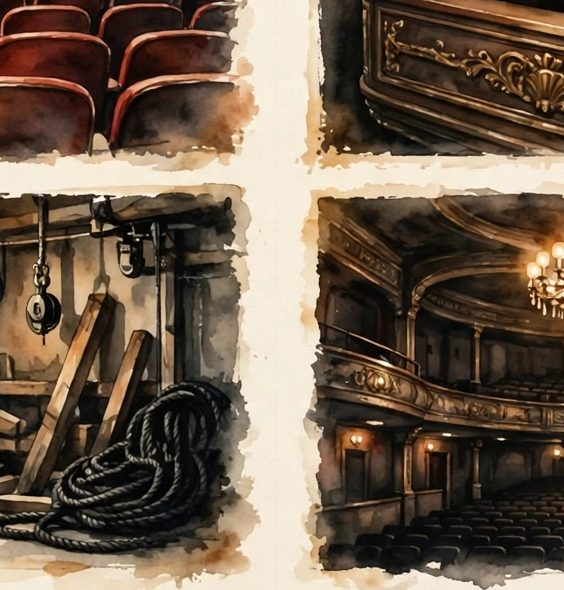
Two rows of seats sit in darkness, occupied entirely by expectations.
The most loyal audience never buys a ticket, because it lives in the building. It is carried in the head: a few rows of installed seats, occupied by parents, rivals, former teachers, an ex or two, and a standing committee of the vaguely disappointed. They attend everything. They attend the shower. They attend at three in the morning. Refunds are not available on tickets to a theater that exists only in the imagination, which the register considers one of imagination's few cruelties. Their reviews are never published and always known, and a surprising portion of the performed self's entire career consists of playing to this house alone.
Individually examined, the members are less fearsome than their aggregate. The Assayer has, on request, audited the seats, and the findings are entered here for general relief: most of the occupants have not thought about the performer in years. Several have moved away — in some cases, out of life entirely — and their seats remain warm only because the usher of habit has never been told to clear the row. A warm seat is not a witness; it is only upholstery remembering an occupant who has gone home to their own life. The imagined jury is, on inspection, largely an empty theater with excellent acoustics.
The performance given to absent judges is the most expensive kind there is, because it can never end in applause; the house cannot clap, being imaginary, and so the show runs on, season after season, to silence. The assay suggests the audit as a household remedy: name the seats, check them one by one, and let the register record who is actually in them. The audit takes an evening, costs nothing, and has never once been regretted by a tenant who completed it. Half the audience in your head moved away years ago; their empty seats still get the best view.
35Taking a Bow Nobody Asked For
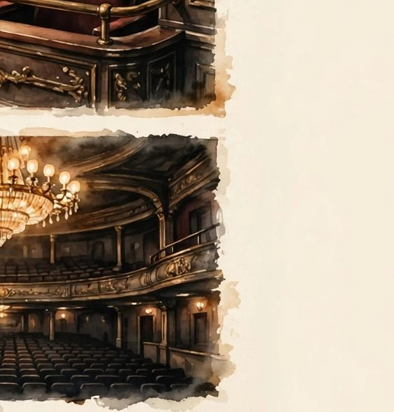
A single chair waits at the stage's edge, the bow already taken in rehearsal.
There is a small, poignant figure in this hall: the bow nobody asked for. It is taken over ordinary days — the errand explained and justified as if to a committee, the modest pleasure presented with its credentials, the quiet choice announced in a tone that requests a verdict. Nobody in the room demanded an accounting. The room was, in most cases, entirely content. But the bow is taken anyway, out of a training so old it feels like manners, and the day waits politely while its owner finishes acknowledging applause that never occurred.
The Assay Desk prices this figure gently, because it is harmless in the single instance and expensive only in bulk. One bow costs a breath. A life of bows costs the thing they are taken over: the ordinary day itself, which keeps being interrupted at the moment of its own simple sufficiency by a small ceremony of self-justification. The day was good. The errand was fine. The tax is paid in the currency the hall deals in throughout: unobserved, unrecoverable minutes of an actual day. The pleasure required no defense, and the defense, offered anyway, quietly taxed all three.
The register's finding is not that approval is shameful — the desk is fond of applause in its proper place, which is after performances, not after breakfasts. The finding is about which acts need a stage at all. Some hours of a life are load-bearing precisely because they are unannounced, and presenting them for approval does not honor them; it merely adds a program note to a load-bearing wall. A program note, the desk observes, has never yet held up anything heavier than the paper it was printed on. No one in the hall asked for the bow; the day was already good enough unannounced.
36The House Lights Come Up
Every performance in a well-run theater ends in the same unflattering mercy: the house lights come up. In their level glare the set is revealed as wood and paint, the palace as canvas, the storm as a machine — and nobody in the building feels betrayed by the information. This is simply what things look like when the story stops lighting them. The audience files out, blinking. The actors take off the century they were wearing. The glare is democratic: it flatters the leading player and the rope-hand in the wings in exactly the same measure. Everybody in the building becomes, again, a person with a coat to collect.
The register insists on the mercy in this light, because it is usually misread as exposure. When the house lights come up on a life — in the unwitnessed hour, at the kitchen table, in the blessed plainness of being nobody's entertainment — the performed self is not unmasked as a fraud. It is relieved of duty. It did its work in the lit hours, some of it noble, some of it merely necessary, and now the shift is over and it may sit down in the empty seats like anyone else.
This hall therefore closes at the interval rather than the finale, deliberately. Ahead lies the quiet wing of the house, where the resident keeps the rooms nobody applauds. The performed self is hung up in the dressing room with respect, like a costume that earned its keep, and the tour continues in slippers. The costume is entered in the register as returned, with thanks, and the dressing-room door is left, pointedly, unlocked from the inside. When the house lights come up, nothing is ruined; the play simply ends, and the people in it get to go home.
37The Quiet Self
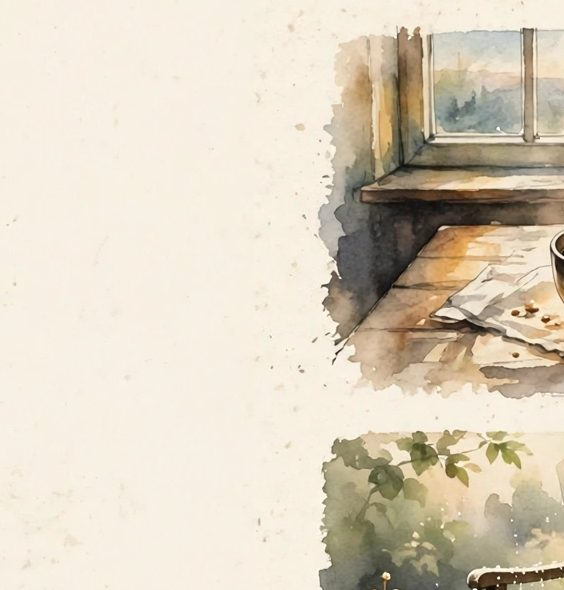
A kitchen table at dawn holds one cup and no agenda.
The quiet self is the register's name for the resident: the one who is present when the performance has ended and the borrowed furniture is only furniture. It has no entrance music. It does not enter rooms so much as turn out to have been in them all along, holding the cup, watching the weather, keeping the building's true hours. The Assay Desk gives it no dramatic introduction, on principle — the quiet self would be embarrassed by one, and the register respects the house style of its most important tenant.
It is worth saying what the quiet self is not, because it is routinely mistaken for a treasure chest. It is not a genius buried under the performances, not a pristine child preserved in amber, not a more interesting person tragically prevented from speaking. Examined at dawn, it proves to be pleasingly unremarkable: a person with mild preferences, half-finished thoughts, and a kettle. The register considers this the strongest possible evidence in its favor. Tenure, unlike glamour, cannot be photographed, which has protected it from nearly everything. Nothing that was performing would have settled for so little glamour.
What the quiet self has, instead of glamour, is tenure. The borrowed selves come and go with their leases; the performed self works evenings and takes its bows; the quiet self simply never moves out. It signs nothing, announces nothing, and stays. Everything this hall has been looking for, by noticing, has been in residence the whole time. The register lists the tenant's arrival date as the earliest in the book, and the departure column is simply blank. The quiet self is not hiding; it is simply the one who lives here when the guests have gone.
38Who I Am When Nobody Is Watching
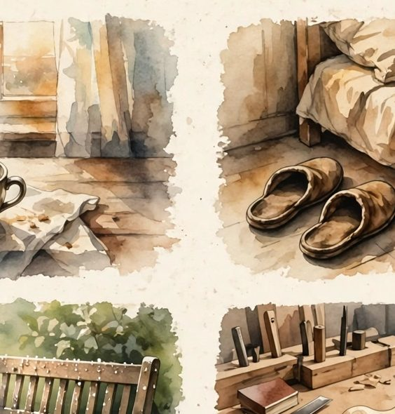
Slippers rest beside an unmade bed in kind, unjudging light.
The register's most trusted evidence is never collected in public. It is the unwitnessed record: the song sung at full volume to an empty house, the meal eaten standing at the counter with the good sauce, the dance performed in the kitchen for an audience of appliances, the opinion stated plainly to the mirror with no softening clause. None of it was prepared for inspection, which is exactly why the Assay Desk inspects it. Evidence that was never dressed for the record is the closest thing the assay has to a control sample.
Fairness requires the full exhibit. The unwatched self is not uniformly charming. There are crumbs eaten over the sink, afternoons surrendered to magnificent laziness, small meannesses rehearsed in traffic and never issued. The Assayer would rather have one honest midnight than a year of afternoons arranged for the record. The register enters all of it in the same hand, because the assay's interest is accuracy, not admiration — the unwitnessed hours are not purer than the witnessed ones, only better documented: no editor passed over them, no translator softened them, no advance self arrived first to arrange the lighting.
This is why the hall trusts the kitchen more than the stage as a place of information. On the stage, everything is evidence about the performance. In the kitchen at midnight, everything is evidence about the tenant. The Assayer keeps his instruments pointed accordingly, and his findings stay modest, as findings based on crumbs and songs tend to be. Doggerel counts toward the record. Crumbs count. The register is not proud in its evidence, and its findings are, in consequence, the most reliable in the building. Unwatched, a person is not better or worse — only better documented.
39The Unposted Life
Most of a life is unposted, and it is worth a room of this hall simply to look at the proportion. The dinners eaten without a photograph. The views absorbed without a witness being deputized. The griefs and triumphs that went entirely unshared, the jokes that landed in one kitchen and stayed there, the sunsets absorbed by one pair of eyes and converted directly into memory with no record kept. This is not the leftover portion of a life. By volume, it is the life, and the posted portion is the pamphlet.
The register takes no side in the fashionable quarrel, and the Assayer has struck the words virtue and vice from this page of the ledger. Posting is not a corruption; silence is not a sanctity. There are posted things that carry their maker's mark plainly, and unposted hours that are merely hiding. The assay's interest is in the texture difference, which any honest person can feel: the unposted hour makes no request. It does not angle, announce, or await. It completes itself in the having happened, like a letter written and never sent, which is still a letter.
What the desk notes, in its plain hand, is the restfulness of that completion. An hour that needs no audience needs no defense, no caption, no timing, no reply — and the accumulation of such hours is the closest thing the register has found to the quiet self's natural habitat. The pamphlet, meanwhile, keeps its own counsel and its own considerable charm, and nobody at the desk wishes it any smaller or its print any finer. Most of a life is lived unposted, and it is not the lesser part of the life.
40Alone Without Being Lonely
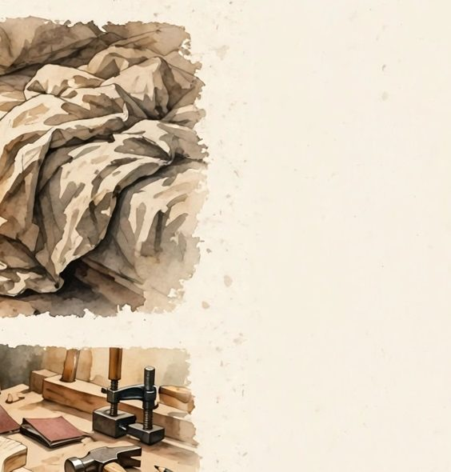
A teapot and one cup keep company on a tray by the window.
Alone and lonely are different rooms in the same house, and the quiet self knows the way between them by the shoulders. Alone is a room with the resident in it: the tea made properly for one, the book open, the silence occupied like a chair that fits. Lonely is the same square footage arranged as a waiting room — the same tea gone slightly theatrical, the silence tuned toward a door. The difference is not company and not its absence. It is whether the person in the room is, at that moment, at home in it.
The register is careful here, because loneliness is real weather and the desk does not mock it; it arrives in the best-kept houses, sometimes for seasons, and no hallmark protects against it. The finding is narrower. There exists a solitude that is not a deficit at all but a form of hospitality — the host being oneself, attended to with the same courtesy one would offer a guest: a proper cup, a chair by the light, no apology for the smallness of the party. The Assayer has entered afternoons of this kind among the strongest evidence of a self in good tenancy.
What distinguishes the two rooms, on assay, is not what is in them but what is being performed. The waiting room is still a kind of stage — arranged for an arrival, lit for an entrance. The inhabited room has let the performance drop entirely. The desk can tell which room it is by a single instrument, the oldest one in the building: whether the tea was made to be enjoyed or to be waited through. Alone is a place with someone in it; lonely is the same place, waiting — the quiet self knows which room it is standing in.
41The Self at the Kitchen Table
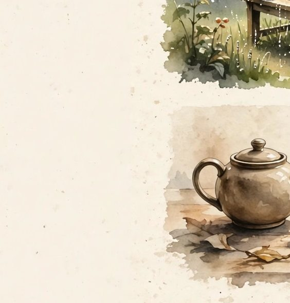
A single cup steams at the kitchen table while the first grey light comes up.
There is an hour, in most houses, before the household properly begins, when one person is awake and nobody is being anyone yet. The kettle has been put on without ceremony. The cup chosen is the chipped one, the favorite, which no guest has ever been offered. At the kitchen table, in that grey and honest light, the self sits without its day's instructions — no expression arranged, no position taken, nothing being prepared for later quotation. The Assayer, who makes a profession of testing what is genuine, keeps a private note on this hour: the most reliable sample of any person he has ever examined was taken at a kitchen table, before the performance of the day had been so much as rehearsed.
What happens at this table would not photograph well, and that is part of its evidence. Thoughts arrive unfinished and are allowed to stay that way. The day's worries are present, but they speak at kitchen volume, plainly, without the amplification they will receive by nine o'clock. Preferences show themselves unedited: the chair that is always taken, the window that is always faced, the order in which small comforts are arranged. Nobody is being observed, and so nothing is being managed. The Assay Desk holds that a person is never more legible than when they believe the record has not yet started for the day — the kettle boiling, the toast unbuttered, the signature not yet required.
It would be a mistake to call this a lesser edition of the person, the draft before the real thing begins. The register files it the other way round: the kitchen-table self is the working original, and everything later in the day is a copy made for circulation — cleaner, perhaps, better lit, but a copy. The original signs nothing, impresses no one, and holds, in its unguarded preferences, the pattern from which the day's versions are struck. The Assayer's entry closes the block without ceremony. The day will put on its coat, arrange its face, and go out to be somebody; the one at the table was already home.
42What I Do at Walking Pace
There is a speed at which the self becomes legible, and it is not fast. Walking pace — the pace of errands done on foot, of paths crossed without machinery — is too slow for arrival and too plain for display, and for exactly those reasons the truth can keep up with it. At walking pace, thoughts stop auditioning. They arrive in the order they actually occur, unpolished, some of them unflattering, most of them useful. The performed self prefers a brisker tempo, where there is no time to notice what one really thinks about the errand, the destination, or the company. The quiet self keeps to the path and lets the mind walk beside it, saying what it says.
What gets done at walking pace has a particular durability in the register. Decisions made on foot tend to keep; they were not rushed past the objections, so the objections were heard and answered on the way. Promises made at this pace are fewer and heavier. Even the looking is different — a walker sees the actual street, its repairs and gardens and small economies, while faster travelers see mostly their own schedule reflected in the glass. The Assay Desk does not romanticize the walk; it simply notes that nothing at this speed has ever needed to be faked, because there is no audience that a walking pace has ever managed to impress.
The hall enters walking pace among the unguarded measures, alongside the kitchen table and the unposted hour: settings where the cost of honesty drops to nearly nothing because nobody is collecting. A person who wants to know what they think about their own life could do worse than take the long way home and listen at the speed of their own feet. The register's closing line is plain, as befits the subject. Nobody applauds a walk, and the applause was never the point of one — which is precisely why the truth can keep up with it, all the way home, unhurried and unedited.
43The Hours That Leave No Record
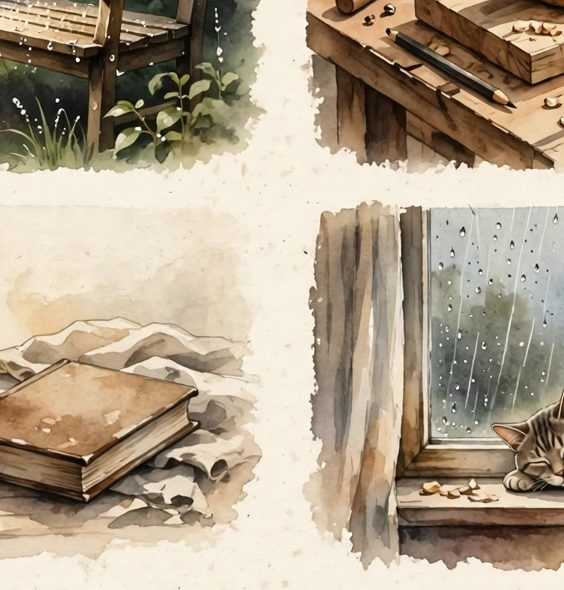
An armchair faces a window across an empty room while the afternoon crosses it unrecorded.
Most of a life leaves no record, and this block is filed in praise of the fact. There are hours — whole afternoons, entire seasons of evenings — that were never photographed, posted, written down, or reported to anyone, and they are not gaps in the life. They are the bulk of it. The performed self experiences such hours as a kind of poverty, wealth unwitnessed. The quiet self experiences them as the estate itself: the rooms where the living is actually done, away from the gallery where the portraits hang. The Assayer's register has no columns for these hours, and he considers the omission one of his instrument's honest limitations, like a scale that cannot weigh weather.
What happens in unrecorded hours is mostly maintenance, which is never glamorous and always load-bearing. Things are mended. Rooms are sat in. Meals are cooked at the speed of hunger rather than presentation. A person thinks the long thought that cannot be hurried, or thinks nothing at all and lets the mind idle like a cat in a patch of sun. None of it converts into anecdote. Ask the quiet self what it did all evening and the answer is a shrug that contains multitudes — nothing worth reporting, everything worth having. The register notes that a life narrated entirely in highlights would be a brochure, and nobody has ever actually lived in a brochure.
There is a freedom available only off the record, and the quiet self guards it the way the estate guards its unlit corridors: not from secrecy, but from use. What is not recorded cannot be rated, compared, improved, or sold back to its owner as a better version of itself. It simply belongs to the one who lived it, in the old, uncomplicated way. The Assay Desk closes the entry with the mildest of its findings. A life is mostly unwitnessed, and it is not poorer for keeping its own counsel — the unwitnessed hours are not the life escaping the record; they are the record escaping notice, which is a different and better thing.
44A Hobby Nobody Applauds
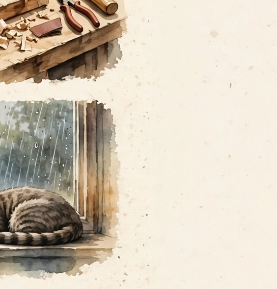
An unfinished piece of woodcraft rests on a hobby bench beside tools laid down mid-task.
Every estate should contain one pursuit at which its owner is cheerfully, permanently unremarkable, and which no audience has ever been invited to grade. The whittled figure that leans. The sketchbook with the wrong proportions faithfully repeated. The garden bed that produces, each year, slightly fewer vegetables than the seed packets promised. A hobby nobody applauds is safe from the fate of so many gifted beginnings: it cannot be promoted into a résumé, a brand, or a second income, and so it is allowed to remain what it was on the first day — play, undertaken for the length of an afternoon and answerable to nothing beyond it.
The Assay Desk distinguishes carefully between practice and rehearsal, two activities that look identical from the doorway. Practice is done for the sake of the doing and improves at its own unhurried rate, or does not improve, or improves in directions nobody ordered. Rehearsal is done for the sake of a future showing and keeps one eye always on the seats. A hobby with no showing in its future can be entered and left like a garden gate — picked up after a month's neglect without apology, abandoned mid-task without a statement. The register notes that amateur, in its old root, means nothing more than one who loves, and files the word without embarrassment.
There is also the small matter of failure, which in an applauded pursuit is a public event and in an unapplauded one is merely information. The shelf collapses; the glaze runs; the song in the shower finds the wrong note and enjoys it. Nobody's assessment is injured. The quiet self stores these failures the way a workshop stores offcuts — without ceremony, and with a craftsman's suspicion that they may be exactly what's needed later. The entry closes on the finding the hall keeps returning to, in room after room. What is done for no one is done, at last, entirely for the one doing it — and that wholeness is the hallmark.
45The Self in Slippers
Before the shoes, there are the slippers, and the Assay Desk insists on the distinction. Shoes are chosen with the world in mind — its weather, its distances, its opinions. Slippers are chosen by the feet alone, in the dark, by memory, and they have never once been consulted about how they look. The self in slippers has not yet agreed to be anyone in particular. It pads between the kettle and the window in the uniform of the unguarded, entitled to be slow, entitled to be plain, entitled to let the day's first thoughts arrive in whatever order they please, which is rarely the order the day will later claim.
The morning rituals of the slippered hour are worth entering in the register because they are the least edited text a person produces. The stretch that is never performed for anyone. The breakfast eaten standing at the counter because the chair seemed too formal an arrangement for toast. The face in the bathroom mirror, met without negotiation — neither approved nor corrected, simply recognized, the way one recognizes an old colleague in a station crowd. Nothing here is withheld from an audience; there is simply no audience in the arrangement. The Assayer notes that dignity, which the performed self treats as a matter of presentation, appears in this hour to be something else entirely: the ease of not presenting.
Of course the shoes go on. The estate is not recommending a life conducted in felt and dressing gowns; the day has its errands and its weathers, and the performed self has honest work to do in them. The point of the slippered hour is narrower and more durable: it proves, every morning, that underneath the day's appointed person there is an earlier one, who was awake first and asked for less. The register closes the block with its customary mildness. Before the shoes go on and the laces are tied to the world's specifications, the day is still entirely one's own — and the self in slippers is its first, unhurried signature.
The Assay Desk
One desk receives all correspondence for this assay — questions, corrections, greetings, and word of anything you have tested lately and found genuine, or found wanting. It is read in the order it arrives.
46Silence as a Native Language
A teapot and a book left face-down keep company in a room that asks for nothing.
Fluency is usually counted in what a person can say, but the register keeps a second column: what a person can leave unsaid without discomfort. The quiet self speaks silence as a native language — not the silence of having nothing, not the silence of withholding something, but the silence of a room comfortably furnished, where speech is available and simply not required. Other silences are translations, effortful and approximate. This one is the mother tongue. A person at home in it can sit with another person, or with no person, and let the minutes pass unupholstered by commentary, the way a cat crosses a room without explaining the journey to anyone's satisfaction.
It matters to the Assay Desk that this silence is not a hiding place. Nothing is being concealed in it; if anything, the opposite — certain thoughts exist only in this language and are diminished by translation. The grief that does not want framing. The contentment that would curdle into smugness if announced. The long, unfinished thinking that is still deciding what it is. The performed self is a tireless translator, rendering everything into speech for an audience real or remembered, and like all tireless translators it introduces small errors of emphasis everywhere. The quiet self lets some pages stay in the original, trusting that not everything true requires a hearing.
Visitors sometimes mistake this fluency for distance, the way travelers mistake a quiet country for an empty one. The register corrects the record without heat: the quiet self is frequently the most attentive presence in the room, having spent on listening the energy that others spend on being heard. Its silences are not gaps in the conversation; they are the conversation's floorboards, unnoticed because they hold everything up. The entry closes with the hall's gentlest verdict. The quiet self is not speechless, and it is not sulking, and it is not saving its words for a better room — it is simply not translating, and what it means, in its own language, loses nothing by staying home.
47The Room Where Nothing Is Proven
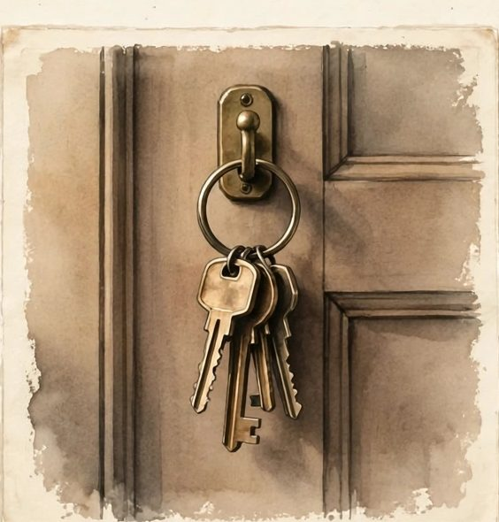
A plain room holds a single chair and a bare window, and expects nothing of either.
The estate contains, by design, one room with nothing on its walls. No certificates, no portraits of ancestors real or invented, no shelves of evidence. A chair, a window, a floor swept when sweeping is due. It is the Room Where Nothing Is Proven, and the performed self avoids it with a fine instinct — a space with no function for it. The performed self needs a verdict; this room returns none. The quiet self, by contrast, keeps the room's key on its own ring and visits the way one visits a well: not to be seen drawing water, but because the water is there.
What the room permits is best described by what it forbids, and it forbids only one thing: establishing. In it, a person may not demonstrate that they are good, or recovering, or interesting, or ahead of schedule. The day's evidence is checked at the door with the coats. The Assayer himself, whose whole trade is the testing of genuineness, leaves his punches in their leather case outside — partly out of respect, partly out of professional honesty, since his instruments measure what a thing is made of and this room is concerned with something prior: a self that has not yet been asked what it is made of. The register keeps no page for what happens here, and the absence is deliberate, and it is the point.
A person emerging from such a room often looks, to the untrained eye, exactly as they did on entering, which has misled many observers into calling the visit a waste. The register disagrees, in its driest hand. Something has been set down — the low, continuous effort of being plausible — and shoulders notice such things even when biographies don't. The hall has circled this finding from several doors now: the table, the walk, the unrecorded hours, the slippers. Here it stands in its plainest form. A self that needs no proof has nothing left to defend, and a self with nothing to defend can finally be caught, in a bare room, in the act of simply being there.
48The Quiet Self Keeps the Keys
The hall of the quiet self closes, fittingly, not with a portrait but with a key ring. When the day is done — the visitors gone, the performed self's coat hung up, the register written fair — it is the quiet self who makes the round of the house. Not from anxiety: from tenure. The quiet self was here before the first audience arrived and will be on the premises after the last one has written its review. It knows which door sticks in wet weather, which window wants a folded card in its frame, which room is kept for nothing being proven in. The performed self gets the guests; the quiet self gets the building, and has never considered the division unfair.
Keeping the keys is a specific kind of authority, and the register is careful to describe it correctly: it is the authority to decide what opens and what stays shut, exercised without announcement. Privacy, in the quiet self's keeping, is not secrecy — nothing shameful is being locked away. It is stewardship. Some rooms open for everyone, some for the few who know the unedited draft, some for one person, and one or two for nobody at all, not out of fear but because a house in which every door stands open is not a home but a thoroughfare. The Assayer, filing the hall's final entries, notes that the keys were never lost, as their owner sometimes feared in noisier years. They were only lent out too often, to too many committees, and have been quietly coming back.
The last word of the hall belongs, by custom, to the smallest true sentence available. The quiet self locks up, not against the world but on its behalf — a house kept is a house that can receive anyone properly tomorrow. The performance may take the applause, the borrowed finery may take the credit, and the register itself may be consulted by future historians of the estate, who will find the public entries in order and the private ones mercifully brief. The keeper's line is written underneath, in pencil, where the honest things go. At the end of the day it is the quiet self who locks up — and the house sleeps, all the way to its foundations, because it does.
49The Body Knows First
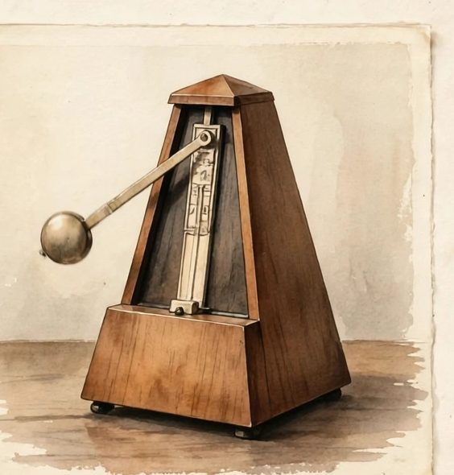
A metronome swings mid-beat above a wooden table, keeping time nobody set for it.
The hall of the body opens its register with a rule of procedure, stated once and kept throughout: what follows is bookkeeping, not diagnosis. Before the mind has drafted its statement — the considered position, the reasonable account, the version cleared for company — the body has usually entered a line of its own. A settling or a tightening. A breath that goes deep on its own initiative, or one that stays shallow in the chest like a guest unwilling to sit down. The Assayer records such entries in a plain hand and resists, professionally, the temptation to annotate them. A register says what happened. What it means is a question the register leaves, with unusual humility, to its reader.
The sequence is the finding, and it is a modest one: the body is early. It responds to the room before the biography has been consulted, to the person's tone before their words have been parsed, to the decision before the pros and cons have been seated in their rows. This earliness is sometimes congratulated as intuition and sometimes dismissed as noise, but the estate is interested in neither compliment. It simply notes the order of arrival, the way a clerk notes which witness entered the courtroom first. The performed self, which composes its responses the way speeches are composed, finds this earliness faintly improper. The register finds it merely factual, and files it under facts.
Nothing in this hall will be named, treated, or advised upon; the Assay Desk is not a clinic and its keeper is not a physician of anything but metaphors. The body's entries are votes, weather, early returns — the record of a presence that was there before the explanation and will be there after it. What a reader does with the record is their own affair, conducted in their own house. The hall's opening entry closes with the finding on which all its other pages rest. The first entry is rarely wrong about the fact — something tightened, something eased — whatever one later decides, in committee, about the meaning.
50The Flinch Is a Vote
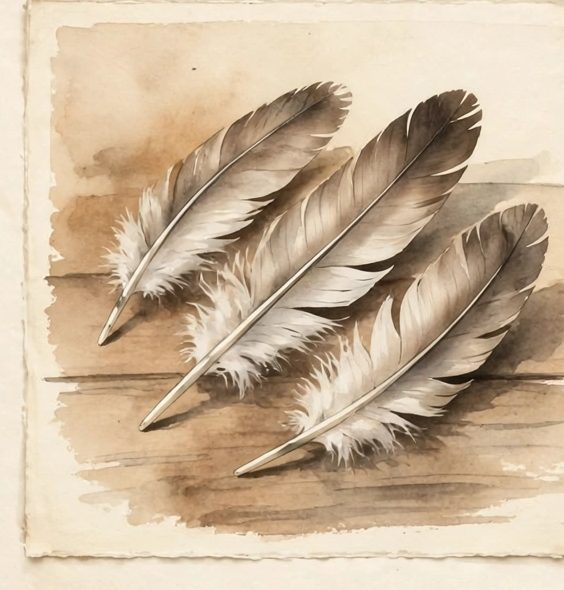
A scarf lies dropped in the middle of a room, exactly where its owner stopped short.
The flinch is the smallest entry in the body's register and one of the most legible: a quick, unargued withdrawal, over before the mind has finished reading the sentence that caused it. This hall counts it as a vote. Not a verdict — the estate is careful with its denominations — but a vote, cast early and without a speech, by the part of the house that does not attend debates. Something in the proposal, the room, the remembered voice, was declined at a level below negotiation. The flinch does not explain itself. It does not have to. Its whole testimony is its speed, and the register records it in the same ink as every grander declaration.
Votes, in any honest system, are counted rather than obeyed automatically, and the flinch is granted no tyranny here. A person may note the vote and still walk into the room, sign the paper, take the road — having heard the objection and overruled it with open eyes. What the hall forbids is only the falsifying of the minutes: the later claim that no objection was raised, that one was entirely at ease, that the body seconded the motion unanimously. The performed self prefers unanimous minutes; they read better. The register prefers the true division of the house, because a self that knows where its own votes fell can govern itself, while a self working from edited minutes is governing a fiction.
There is a courtesy in this bookkeeping that is easy to miss. The flinch is never mocked in these pages, never treated as cowardice or as a defect in the machinery. It is an old reflex doing old work — the hand's memory of hot iron, the heart's memory of a tone of voice — and like an old servant it sometimes warns about dangers that retired years ago. Noted, thanked, and filed, it does its office and rests. The entry closes in the register's plainest hand. A vote ignored is still a vote cast, and the count stands whether or not it was convenient — the register keeps it either way, and keeps it without comment.
51The Ease Is a Vote Too
Against the flinch the register sets its quieter counterpart, which is easier to miss and therefore more often lost from the minutes: ease. The shoulders come down without being told. The breath finds the bottom of itself. The jaw, that tireless clerk of tension, sets down its pen. Nothing has been announced; nothing is being celebrated. The body has simply failed to object — and in a ledger where objections are recorded so faithfully, the absence of one deserves its own column, ruled in the same ink, given the same width. The Assayer is particular about this symmetry. A register that records only alarms will eventually be read as an alarming document, whatever the truth of the days it describes.
Ease does not argue its case, which is its weakness in committee. The dramatic signals arrive with stories attached; ease arrives with nothing but itself, and is easily talked over by minds that mistake quietness for emptiness. Yet the evidence of ease is often the more practical kind: it marks the rooms where the performed self was not required, the company in which no coat had to be worn, the work that fit the hands that did it. The register suggests nothing be done with these markings except that they be made, faithfully, at the time. A tally of eases, kept over a season, is a map of where a life actually fits — drawn by the only surveyor who was present for every measurement.
The hall is aware that ease, like the flinch, can be an unreliable narrator on occasion — there is the ease of the familiar rut, the ease of the road that asks nothing. Bookkeeping does not settle such questions; it preserves the data from which they might one day be settled honestly. The entry's closing line is therefore procedural, almost dull, and the Assayer trusts it the more for that. What the body permits without protest deserves a line in the book exactly as much as what it refuses — enter it, date it, and let the season's totals say what no single afternoon could.
52The Laugh That Escapes Before Permission
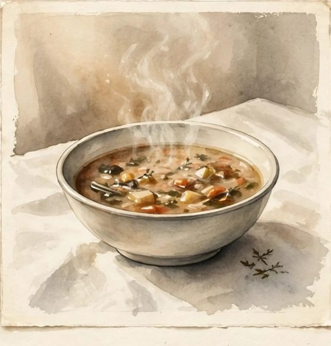
Two chairs stand in plain lamplight, one tipped back on its legs as if still laughing.
The laugh that escapes is the body's fastest honest entry, and the register gives it a page of honor. It gets out before permission — before the mind has assessed whether the joke was respectable, whether the company is the kind that laughs at such things, whether one's dignity for the afternoon can afford the expenditure. By the time the censor arrives with its clipboard, the laugh is already in the room, unrecallable, having testified. What it testifies to is simple and surprisingly hard to fake: something was actually found funny, by the person actually present, in the moment actually occurring. The Assay Desk, which tests genuineness for a living, notes that this is the hallmark at its purest — struck without the striker's knowledge.
Performing laughter is, of course, also a human activity, and the hall declines to shame it. The social laugh — on time, measured, offered as courtesy — is one of the small currencies that keep company solvent, and the register enters it under manners without a murmur. But the two laughs are filed in different columns, because they are different instruments. One is a payment; the other is news. The escaped laugh surprises its owner as much as its hearers, arrives with an excess that no committee would have approved, and leaves behind it a brief, unguarded silence in which everyone present has briefly stopped managing the room. The register values that silence almost as highly as the laugh itself. It is the sound of several performed selves, briefly, off duty.
There is a coda the Assayer insists on, having watched the evidence for years: the escaped laugh is also a finder. It locates, with an accuracy that taste-committees rarely match, the company and the subjects where the self is actually at home — and it locates, by its absence, the rooms where one has been laughing on schedule for longer than one can remember. Both findings are entered without sentence passed. The book is a register, not a court. Its closing line for the block is written, fittingly, a little less formally than the rest. The laugh that escapes is the self signing in its own hand, quickly, before the secretary arrives with the official pen.
53Shoulders Keep Their Own Register
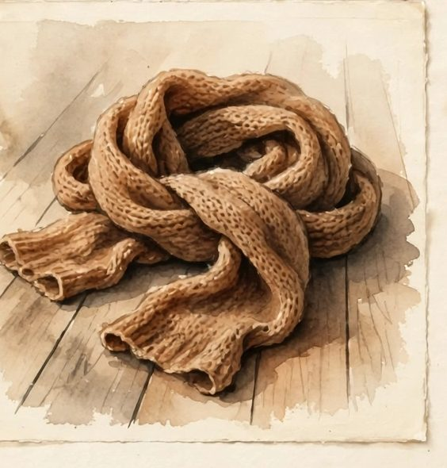
A coat hangs from a shoulders-shaped wooden hanger, holding a shape the day has left in it.
The face is a trained diplomat; the shoulders never received the training. Across a long afternoon of being agreeable, being competent, being entirely unbothered — whatever the day's treaty required — the shoulders rise by degrees toward the ears, carrying the actual account of the afternoon in a currency of inches. The register reads them the way accountants read a second set of books: not because the first set is lying, exactly, but because the second set was never edited for publication. Shoulders keep their own register, and it is updated continuously, and it does not know how to round the figures in anyone's favor, which makes it, by the Assay Desk's standards, an instrument of the first rank.
Bookkeeping is all that is offered here, and the hall is strict about the limits. A high shoulder line is entered as expenditure: something was carried, through hours that the official account describes as effortless. What was carried — a role, a vigilance, a sorrow in uniform — the register does not presume to itemize, and it offers no remedy, no regimen, no counsel. The Assay Desk assays; it does not prescribe. The entry's value lies in its existence. A person who knows their shoulders' testimony disagrees with their diary's conclusions has at least learned that there are two documents, and that the quieter one was written by a witness who was in the room the whole time, holding everything up.
By evening, the register notes, the account sometimes settles itself: the door closes on the day's company, the coat comes off, and the shoulders descend like a tide going out on schedule — a small, uncelebrated homecoming that no audience has ever applauded, because no audience was ever meant to witness it. The hall files it among the body's signatures: unstudied, unrehearsed, and nearly impossible to forge at will. The closing line is one the Assayer has tested against many afternoons and found to hold in all weathers. The face can be briefed, reminded, and sent in with its lines prepared; the shoulders were never sent the memo — and what they report is the day as it was actually carried.
54The Tiredness That Tells the Truth
The body's register distinguishes, with a clerk's patience, between two tirednesses that share a name and little else. The first is the tiredness of doing: of miles walked, weights carried, hours honestly spent. It is clean tiredness, proportionate to its cause, and it pays its respects to a night's sleep and is gone. The second is the tiredness of seeming — of holding a face at its assigned expression through a long engagement, of monitoring the room, of being a performance that must not be allowed to notice it is one. Entered side by side in the ledger, the second kind is heavier per hour, and everyone who has kept both kinds of day knows the difference without being told.
The distinguishing test the register applies is simple and purely descriptive: what restores. Sleep repairs the tiredness of doing the way rain repairs a garden, thoroughly and without argument. The tiredness of seeming is oddly untouched by sleep alone; a person can rest a full night and wake still tired in that particular account, because what was spent was not the body's strength but the self's — spent on translation, on vigilance, on being legible. The register enters this without alarm and without advice. It is a difference in the quality of a fatigue, noted the way a vintner notes a difference in soil. Nothing is diagnosed. Something is, however, made harder to pretend not to know.
The hall's tenderness on this subject comes from long observation of the minutes being falsified: the tiredness of seeming is the one most often described, even by its owner, as laziness — a slander the register strikes from the record whenever it finds it. Nothing in these pages is lazier than a performance; it is work, continuous and largely unwitnessed, and the tiredness it earns is wages, not weakness. The entry closes with the clerk's plain commendation of his own instrument. Tiredness is an honest clerk; it reports the shift that was actually worked, not the shift that was announced — and its reports, unlike most, can be trusted on evenings when nothing else can.
55Hunger, Honestly Named
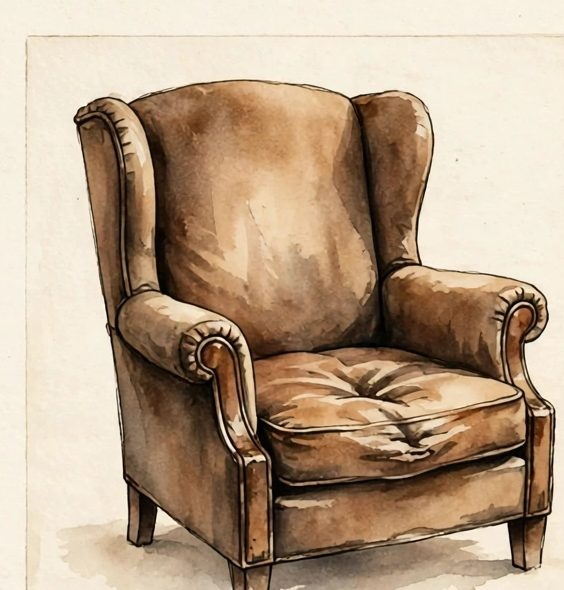
A bowl of soup steams on a bare table, plainly itself and, for the moment, enough.
Hunger is the plainest entry the body makes, and this block is filed in defense of its plainness. Hunger asks without metaphor and waits without rhetoric: it wants food, or rest, or company, or quiet, and it generally knows which. The trouble begins — the register observes, entering no judgment — when hunger is made to wear a costume. The hunger for food is respectable and is fed. The hunger for rest puts on the uniform of ambition and is given more work. The hunger to be liked dresses as a hunger for achievement and is fed with applause, which nourishes it the way sugar nourishes a child at midnight: briefly, and then with interest. Bookkeeping cannot prevent the costumes; it can only insist the original entry be kept somewhere, in pencil, underneath.
Naming hunger honestly is, in the Assay Desk's experience, a rarer skill than satisfying it. The performed self will confess to almost any grand appetite sooner than to a small one: it is easier to announce a hunger for greatness than to say, plainly, that one is hungry for an early night, an unremarkable meal, a friend who already knows the whole story and requires no summary. Yet the small hungers are the ones with addresses. They can actually be reached, actually be fed, actually be crossed out of the register with the small, satisfying line of a debt discharged. The grand ones, examined closely, often turn out to be several small ones that were never introduced to one another.
The hall passes no sentence on appetite itself; hunger is not a character reference, in either direction, and the estate has fed too many kinds of guests to pretend otherwise. What the register protects is the accuracy of the entry. A want recorded under its own name stands a chance of being met in its own terms, by soup or sleep or company as the case may be, while a want in costume is fed whatever the costume eats and stays hungry in character. The closing line is entered, fittingly, while the soup is still warm. A want named plainly is halfway to being fed; a want in costume goes hungry in style, and calls the style a personality.
56The Hand That Reaches Before the Mind Decides
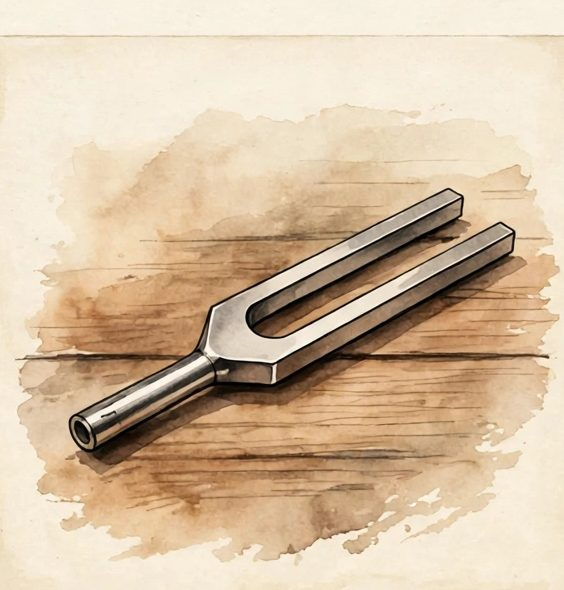
The cup stands already off its shelf on the counter, taken down before any argument for tea.
Before the mind has convened, the hand has often already reached. Toward the familiar book on the shelf, though the evening was scheduled for improving literature. Toward the door handle of the one room in the house where nothing is proven. Toward the telephone — or, on wiser days, away from it, setting it face-down like a card declined. The register records the reach as an early draft of the truth: a preference expressed in motion, prior to the memoir that will later be written to explain it. The Assay Desk, which sequences documents for a living, notes the order of composition with care. The reach was first. The reasons arrived afterward, some of them true, all of them later.
This priority is not an accusation against the mind, which does necessary work and does some of it beautifully. The mind is the house's advocate, drafting briefs for decisions the household has already half taken, and advocacy is an honorable trade. But an advocate's summary is not the testimony, and the register is a book of testimony. It notes, for instance, how often the hand reaches toward the same few objects across a lifetime — the worn tool, the chipped cup, the window seat — while the mind's announced preferences rotate with the seasons like a weathercock in a fashionable wind. The hand, it turns out, has been voting in every election, including the ones the mind believed it was conducting alone.
None of this is offered as a rule for living, a department in which the Assay Desk does no business. It is offered as a correction to the archive. A person reviewing their own history by the official documents alone — the statements, the resolutions, the declared intentions — is reading the press releases of a life. The reaches are the minutes. Between the two, the register knows which it would keep if the house could save only one shelf from a fire. The closing line is entered without emphasis, as befits a fact everybody's hands already know. The mind writes the memoir, in fair copy, years later; the hand kept the diary all along, in pencil, in real time.
57Gooseflesh, the Old Instrument
Gooseflesh is the oldest instrument in this hall, older than the register that records it. It rises at a line of music, at a sentence read aloud in a kitchen, at a memory arriving uninvited with its coat still on, at plain cold air — and it does all this before the mind has decided whether being moved is appropriate to the occasion. The Assay Desk treats it the way meteorologists treat an old barometer in a farmhouse hall: not as an oracle, but as an instrument too simple and too early to have learned flattery. It registers that something passed through. It does not say what the something means, and its refusal to interpret is precisely its credential.
The instrument's great virtue, in a hall full of performances, is that it cannot be operated on purpose. It can be imitated about as convincingly as a blush, which is to say barely, briefly, and never on schedule. Applause can be organized; gooseflesh cannot. This makes it, by the standards of the Assay Desk, a nearly perfect witness: unbribed, unbriefed, and slightly embarrassing to everyone who would prefer their responses curated. The register also notes its democracy. It visits the sophisticated and the simple without checking credentials at the door, rising on the arms of people who disapprove of the song, the sentiment, the whole genre — a vote cast, once again, by a part of the house that does not read the newspapers.
As with every entry in this hall, the entry is all that is offered. The estate does not claim that what raises gooseflesh is therefore good, or true, or to be pursued; cold water raises it too, and the register files weather in the same honest columns. What cannot be claimed afterward is that nothing happened. Something happened, visibly, on the surface of the witness, in front of witnesses. The Assayer closes the block with the respect due to seniority. Some instruments are too old to flatter and too plain to lie, and gooseflesh — older than every opinion in the room, older than the room — is the oldest and plainest of them all.
58Rest Without an Alibi
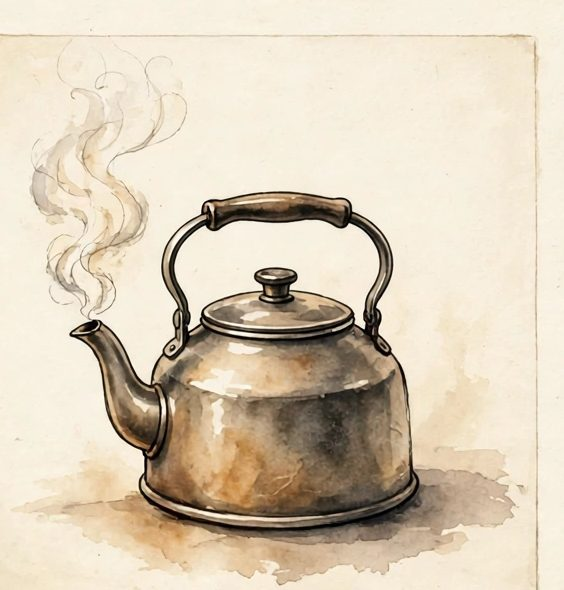
Steam eases from a just-boiled kettle over a stove that has finished its work.
Rest, in most households, arrives with paperwork. It must be earned, scheduled, deserved, and preferably photographed looking restorative. It is applied for in advance and justified afterward, like a small loan from a strict bank. The body's register keeps a separate column for a different kind of entry: rest taken without an alibi. The kettle comes to the boil and stops, because stopping is what boiling is for. The chair receives its sitter without asking what the sitter has accomplished. An hour goes by in which nothing is improved, produced, or prepared, and the hour is entered in the book — not as an absence of entries, which is how the performed self files it, but as one of the fullest lines of the week.
The contrast the register draws is with negotiated rest, which is rest's performed cousin: the break taken while monitoring the break's effect, the holiday spent curating evidence of holiday, the nap whose sleeper arises to report on its quality. Such rest is better than none, and the hall is not in the business of confiscating anyone's Sundays. But it differs from the unalibi'd kind the way a press release differs from a diary. One is rest described; the other is rest. The body, which cannot read press releases, knows which of the two it was given, and enters the fact with its usual indifference to how the entry will look when the auditors come.
No prescription is attached to this page; the Assay Desk issues findings, not instructions, and rest dispensed as homework would defeat its own entry. The finding is merely that the column exists, that everyone has some entries in it if they look, and that those entries share a quality the busier columns lack: they were not witnessed, managed, or apologized for, even in advance. The closing line of the block is written slowly, as if by someone in no hurry at all. Rest that needs no excuse is the body's signature at its most legible — the one entry in the whole register that nobody ever had to be persuaded to make.
59The Body Is Not a Rumor
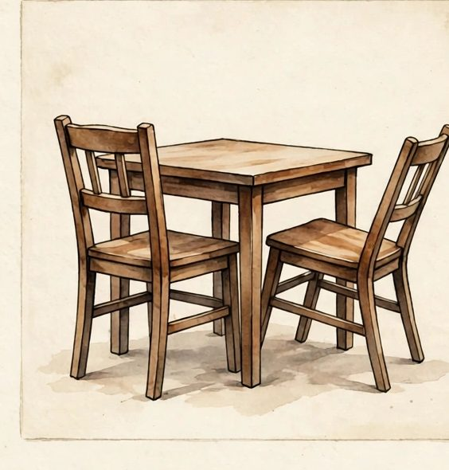
A tuning fork rests on bare wood, its note long since settled into the grain.
Every claim about a person's inner life arrives, eventually, from one of two sources: the primary document or the rumor about it. The rumor is industrious. It is compiled from what one should feel, what one felt last time, what the occasion conventionally requires, and what the performed self has already told the company — and it circulates with the confidence of all well-distributed news. Against it the register sets the body itself: present at the scene, filing firsthand, indifferent to circulation. I am fine, says the rumor, at its tenth retelling. The shoulders, consulted directly, file a minority report. The Assay Desk's rule for its clerks is carved above the door of this hall: when the documents disagree, consult the original.
It is worth being exact about what the body is primary evidence of. Not of what should be done — the register offers no counsel and this hall least of all. Not of what is wrong, in any sense a professional would recognize; the Assay Desk assays metaphors and leaves all other instruments to their licensed keepers. The body is primary evidence of one thing only: what is actually being experienced, at the moment of experience, by the person experiencing it. Even that evidence arrives without commentary and must be read slowly, the way one reads a water-stained letter — grateful for its survival, careful with its gaps. But a rumor, however lovingly typeset, cannot be improved into an original by repetition, and the register refuses, politely and entirely, to pretend otherwise.
The practical consequence is smaller than it sounds, and more useful. It is simply that the first consultation in any honest inquiry is held on the premises: the breath, the shoulders, the ease or its absence, the laugh's timing, hunger's plain request. Outside experts may be summoned afterward, for their proper purposes. The rumor mill, however — including the internal one, which works all hours — is demoted to what it is: a secondary source, to be checked against the document like any other. The block closes with the hall's driest and firmest line. A rumor can be repeated by anyone, in any room, at any distance; the body only ever files firsthand — and firsthand is where every honest register begins.
60Permission to Believe the Evidence
The hall of the body closes with a full register and a single motion before the house: that the evidence be admitted. Flinches and eases, the laugh that escaped and the shoulders that kept their own account, tiredness in both its currencies, hunger under its own name, the hand's early reaches, the old instrument of gooseflesh, rest with and without its paperwork — all of it stands entered. And yet the Assayer has watched, for years, the same quiet scandal repeat itself: the ledger is kept faithfully, and then its keeper argues with every line in it, as if testimony were a kind of weather to be waited out. This block exists to propose the alternative, which is not obedience. It is belief — the plain admission of evidence as evidence.
The distinction matters to the estate, which has no interest in replacing one tyranny with another. To believe the body's evidence is not to obey it blindly; juries believe witnesses and still deliberate. The flinch may be noted and the room entered anyway. The ease may be recorded and the familiar road still declined. What belief changes is the minutes. No longer: nothing was wrong, nothing was felt, the house was unanimous. Instead: this was the testimony, and this — chosen with open eyes — was the decision. The register regards the second set of minutes as the beginning of a self being kept honestly, and notes that every earlier hall of this house becomes easier to file once the body's pages stop being treated as hearsay.
The Assayer closes the book the way he closes every book in this hall: gently, and without a sermon. The evidence was never the enemy. It was the testimony of the one witness who attended the whole of the life, including the unrecorded hours and the slippered mornings, and who cannot be cross-examined into changing a single entry. A reader who begins to believe that testimony has not been given a map, a method, or a medicine — only a witness, believed at last in their own case. The hall's final line is entered in the register's fairest hand. The body has given its evidence all along; the only verdict required is to stop calling it hearsay — and let the record, at last, stand as the record.
The Assay Desk
One desk receives all correspondence for this assay — questions, corrections, greetings, and word of anything you have tested lately and found genuine, or found wanting. It is read in the order it arrives.
61What I Actually Like
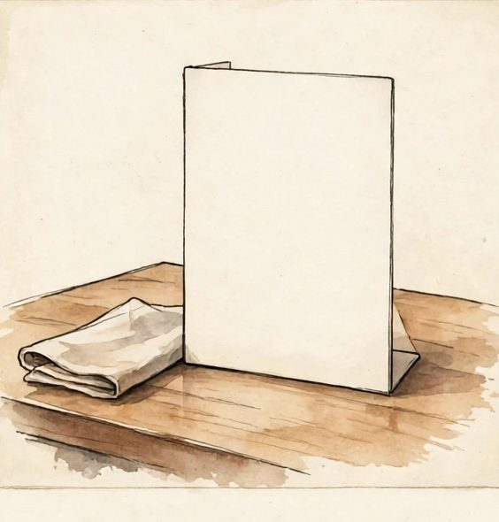
A blank menu card waits on a plain table, unhurried by the season's opinion.
The hall of tastes opens with a small word doing heavy work: actually. What I actually like — as distinct from what I like in company, what I liked at the age when liking was assigned, what my shelves and playlists announce on my behalf to visitors. The Assay Desk keeps a private register of preferences, and its first rule is that entries are made from evidence, not from declarations: from what the fork returns to, what the feet walk toward, what the hand takes down from the shelf when the evening is unobserved. By that evidence, actual likes are often plainer than advertised ones, and stubbornly particular, and possessed of a quality no committee would ever have selected for them: they are inexplicable, and entirely unbothered by it.
This is not an accusation against the advertised likes, many of them genuine, some of them glorious. It is a finding about survival. A preference chosen for display must be re-chosen every season, defended against fashion, and refreshed when the audience's attention wanders — it is held the way a banner is held, at arm's length, in the wind. A preference that was never chosen at all, but simply noticed, the way one notices being left-handed, asks nothing. It persists through indifference and ridicule alike because it was never drawing its wages from either. The register notes that most people, asked suddenly what they actually like, answer first with the banner and only later, warming, with the truth — and that the pause between the two answers is one of the most informative silences the Assay Desk records.
Nothing in this hall will be graded, and the keeper wishes that understood before the tour proceeds. Tastes are assayed here only for genuineness, never for quality; the Desk has no opinion about the soup, the song, or the hat, and would resign its charter before acquiring one. What it certifies — if certifies is not too grand a word for so mild an office — is only that the liking is the liker's own. The block closes with the finding that governs every room that follows. A real preference needs no audience, holds no press conferences, and survives every season unrenewed — it was never a subscription in the first place; it was a fixture.
62The Food I Order When Nobody's Impressed
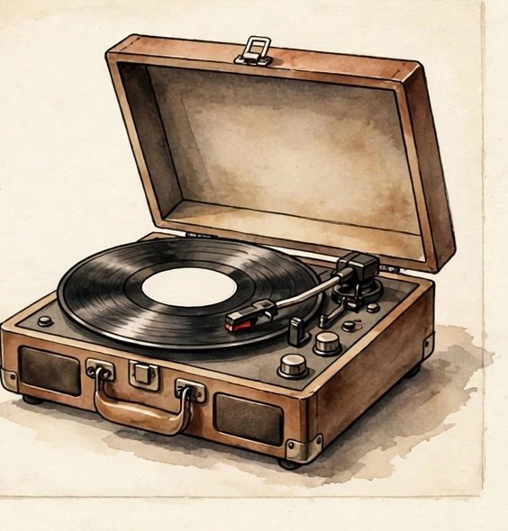
A plate of plain bread and butter sits on the table, ordered without ceremony or witness.
There is a reliable experiment, requiring no laboratory: observe what a person orders when nobody at the table needs impressing. Not the signature dish, not the adventurous line item chosen to broaden the evening's narrative, but the order placed in a small voice to a waiter who has seen everything — the plain thing, the childhood thing, the thing whose name requires no pronunciation. The Assay Desk regards this order as a document of the first class. The palate, unobserved, stops filing reports and starts filing requests. What it requests, across a lifetime, with a consistency that would shame a civil service, is rarely the food that photographs well. It is the food that was there at the beginning, asking nothing.
Ordering to impress is a tax, and like most taxes it is paid so habitually that its payers call it personality. It is paid in other people's tastes: in dishes admired rather than wanted, in heat levels endured for the story, in the small, silent grief of watching the plain dish one actually wanted carried past to another table. The register does not begrudge anyone their adventures in eating, which have their own honest pleasures. It only notes the difference between appetite and representation, and observes that representation has never once sent back a clean plate with the particular satisfaction of appetite. The fork knows. Across a thousand unguarded meals, the fork has never once reached for a reputation.
The keeper of this hall keeps, pinned above the desk, one review copied from no newspaper: it is the order itself, repeated across decades, in cities where nobody knew the diner's name and the diner knew it. That is the criticism the kitchen actually earned and the palate actually wrote. Everything else is publicity, and publicity — the register notes, without heat — has never yet been digested. The block closes over the cooling bread, in the plain style the subject deserves. The truest review a kitchen ever gets is not written for the paper; it is the order placed when nobody is listening, by the one person whose opinion the meal was ever really for.
63Music I Play With the Windows Closed
Every collection of music contains two libraries. The first is the one admitted to: defensible, current or canonically aged, safe to be caught owning. The second plays with the windows closed. It holds the songs too sentimental for the owner's official irony, too simple for their official sophistication, too old for their official youth or too young for their official gravity — and it is played, the register notes, with a frequency the first library can only envy. The Assay Desk does not consider this hypocrisy. It considers it architecture. A house has rooms that open to the street and rooms that do not, and music, of all furnishings, is the one most entitled to a room that does not.
Why the windows close is a finer question than shame, though shame does some of the work. Partly it is that certain songs are load-bearing in a way that company would embarrass: they hold up particular years, particular people, a particular version of the listener who is no longer available for interviews. To play them openly would be to invite commentary on the foundations. Partly it is simpler and better: some listening is not a broadcast but a hearth, and a hearth's whole virtue is that it warms a small room rather than lighting a square. The register keeps no list of what plays behind the closed windows — the hall is not a confessional — but it records the fact of the closing, and calls the fact honest.
What the Assay Desk will certify, since certifying genuineness is its one trade, is that the closed-window library is the better evidence of the two. Taste performed is taste edited for transmission, and transmission always loses the low frequencies. Taste kept is taste at full resolution: the embarrassing song, played at the embarrassing volume, sung along to in the one voice the owner actually has. If some future biographer of the estate is found trying to reconstruct a life from the admitted library alone, the keeper has left instructions that they be given the other catalogue as well, with the windows as they were found. The concert the self actually bought a ticket for is the one it attends alone — and it attends in its slippers, and it knows every word.
64The Book I'd Read Twice
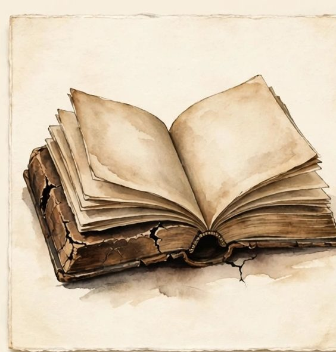
A well-worn book with a cracked spine lies open at the page it always opens at.
Of all the assays in this hall, rereading is the sincerest, because it is the only one with nothing to gain. The impressive book, read once, pays its reader in several currencies: in conversation, in standing, in the quiet furniture of the self-image. The book read twice has already paid all that and been found worth returning to after the payment stopped mattering. Nobody rereads for an audience; there is no anecdote in it, no list it completes, no one to tell. The register therefore treats the twice-read shelf — usually small, often physically disreputable, cracked spines and softened corners — as the truest catalogue a reader owns: the books that were not used, but kept, the way people are kept, for company.
What is found on the second reading is not what the first one promised. The plot, that industrious servant, has nothing left to withhold, and so the book relaxes into what it actually is: a voice, a weather, an arrangement of sentences among which certain ones turn out to have been load-bearing all along, holding up parts of the reader that the reader had attributed to original construction. People mark such sentences, or fail to mark them and find the book falls open at them anyway — the volume having memorized its reader as faithfully as the reader memorized it. The Assay Desk notes that this mutual wear, book and person softening each other's edges at the same points, is as good a picture of genuine taste as the hall affords.
The register closes the block without needing to name anyone's book; the hall holds that the name is private and the fact is universal. Somewhere in nearly every house there is a volume that has been read in two different decades by two different versions of the same person, and been found, both times, to have been waiting with the same sentence ready. The fashions of reading passed over it repeatedly and it did not apply for their pardon. It simply stayed on the shelf within reach, content to be wanted again. The closing line is entered in the register's fairest hand. The book read twice is the one that was never being used; it was being lived with, which is the highest office a book can hold.
65Wanting Without a Committee
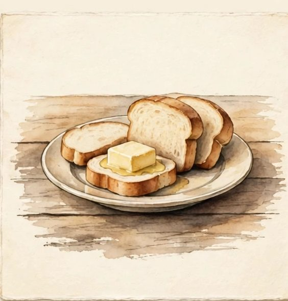
A single flower stands in a jar on the sill, asked for by nobody's resolution.
Ordinarily, a want arrives in a person's life the way a proposal arrives at a committee: already accompanied by its justification, its budget, its defense against the charge of frivolity, and a small, anxious covering note. By the time it is heard, it has been edited by so many departments — the sensible, the thrifty, the respectable, the one that remembers what people said last time — that the original applicant is barely recognizable. This block proposes an earlier hearing. The want, stated plainly, before the committee convenes: I would like that. No agenda papers. The Assay Desk, which has sat through many such committees in an advisory capacity, testifies that the unedited want is usually modest, usually clear, and almost never the scandal its paperwork feared.
Wanting without a committee is not buying without thought, and the hall is careful to keep the two apart, having no interest in emptied purses or in sermons against them either. Deliberation has its office; it simply should not be allowed to speak first, because whoever speaks first in such meetings tends to write the minutes. To hear the want in its own voice is merely to admit the applicant before its application has been improved beyond recognition — to learn that what is actually wanted is an afternoon, a tool, a journey, a flower for the sill, rather than the grand, defensible acquisition the committee was preparing to substitute. The register notes how often the genuine want, once heard, turns out to be cheaper in every currency than its official replacement.
There is a dignity in this that the hall wishes to record before the tour moves on. A want is not diminished by being small, nor ennobled by being expensive, nor required to be a metaphor for anything. It is the self, raising a hand, before the house has decided what the hand is allowed to mean. The committees will still meet; the estate is not an anarchy, and some wants properly lose their votes. But the minutes, henceforth, can at least record what was originally moved. The block closes with the sentence the Assayer keeps taped inside the register's cover. A want is allowed to speak in its own voice, in its own words, before it is asked for its papers — the papers can always be examined afterward.
66The Honest No
The honest no is the shortest complete sentence in this hall, and the register gives it a page to itself out of respect for its economy. It declines without a footnote of excuses, without a fabricated prior engagement, without the small, cowardly garnish of blaming the calendar. No — said by the owner of the door, about the owner's own time, company, money, or assent — is a filing of the same dignity as any acceptance in the book, and considerably cheaper to maintain. The performed self dreads it, having been trained to believe that a refusal requires either a wound or a warrant. The quiet self simply keeps the door in good repair and uses it as doors are used: in both directions, without ceremony.
Against the honest no the register sets its expensive cousin, the dishonest yes — the acceptance issued to avoid the twenty seconds of discomfort that a refusal would have cost, and paid for afterward in installments: in the attended evening, the undertaken favor, the membership renewed, the self quietly overdrawn. The interest on such debts is charged in the body's currency, and this hall has read those ledgers. Everyone at the table, moreover, can tell the difference; a reluctant yes arrives slightly warm from handling, and the refused-by-honesty almost always recover faster than the accepted-by-default ever do. The no said plainly is, on the full accounting, the kinder instrument — it costs the refuser a moment of courage and saves everyone else, including the refused, a season of fiction.
The hall is careful, as always, to certify only genuineness and never virtue: a no can be lazy, frightened, or wrong, and the register will still enter it honestly, because honesty of entry is the whole of its law. What it will not do is dress the no in costume — as busyness, as principle, as someone else's decision. A door is closed by whoever closes it, and the register writes the name plainly. The block's closing sentence is kept short, as befits its subject, and is offered to every reader who has ever composed the fourth draft of a refusal. A clean no is a door closed by its owner, at its owner's hour; a reluctant yes is the same door left to rot on its hinge, at everyone's expense.
67A Preference Is Not an Apology
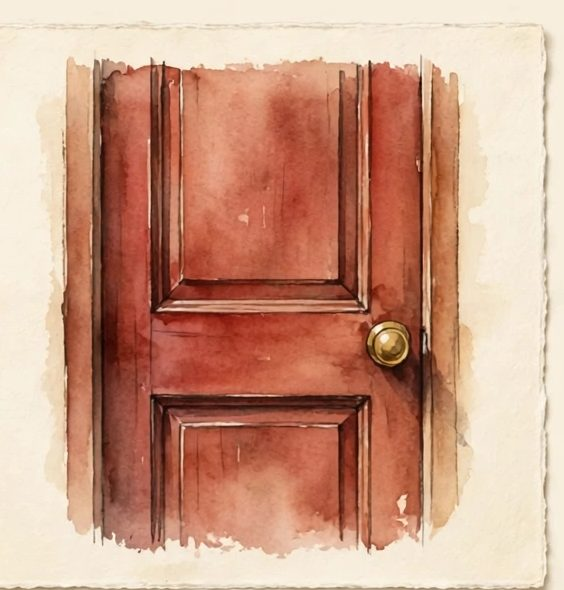
A chair stands drawn to the small table by the window, chosen, placed, and unapologized for.
There is a small verbal habit that the Assay Desk has learned to hear the way doctors hear a cough: the apology that arrives attached to a preference, slightly ahead of it, clearing its throat. I know it's silly, but — you will laugh, but — it's probably terrible, but I love it. The preference then enters, already fined, and takes its seat under a cloud of its owner's manufacture. This block strikes the apology from the form. Not as rudeness: as bookkeeping. A preference is a fact about a person, of the same order as their height, and nobody opens a description of their height with a plea for the court's indulgence.
The apology implies a jurisdiction that does not exist. It presumes a court in permanent session, grading the soup, the song, the hat, the holiday destination, with power to enter judgments that the liker must then serve. The register has searched for this court's charter and finds nothing but a habit, inherited — like so much in the borrowed halls — from schoolyards and their long afterlife in grown rooms. No judge was appointed. No docket is kept. The clerk of the Assay Desk, who keeps every other docket imaginable, keeps none for taste, and would regard the appointment of one as the end of the estate's charter. What a person likes is theirs the way their dreams are theirs: reportable if they wish, actionable never.
Striking the apology changes surprisingly little on the surface — the soup is still liked, the song still played — and a great deal underneath. A preference that stands alone, unaccompanied by its lawyer, is forced to be what it actually is, and its owner is freed from the small continuous tax of pre-emptive surrender. Some preferences, examined without the flinch, turn out to be embarrassments the owner never genuinely felt; others turn out to be loyalties. Both findings are cheaper than the apology. The closing line of the block is entered in the register's driest ink. A preference that arrives with an apology has already paid a fine nobody imposed — to a court that was never in session, for an offense that was never on the books.
68The Small Wants Are the Telltale Ones
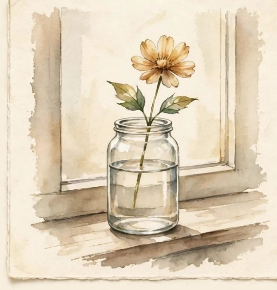
One flower, cut short, stands in a jar of water — the morning's small want, kept.
The grand wants of a life make poor witnesses. They were often inherited with the furniture, or ordered by the era, or installed by ambition's salesmen, and under questioning they tend to recite their brochures. The small wants are the telltale ones, and the Assayer reads them the way other experts read the small print: first, and with attention. The particular tea, taken the particular way. The walk that must include the street with the good wall. The window seat; the aisle; the corner table; the song played once more before the record is put away. Nobody performs these. There is no glory in them to steal, no audience that could be assembled for them at any price, and so they have never in their lives been edited.
That is their evidentiary value, and the register prizes it accordingly. A small want is a fingerprint — not the pattern the finger would choose for its portrait, but the one it leaves on everything it actually touches. Accumulated over years, the small wants are nothing less than the load-bearing structure of a life: the days are built out of them, hour by hour, while the grand wants mostly stand in the yard like unstarted monuments. Ask a biographer to reconstruct a person from their ambitions and you will get a statue. Reconstruct them from their small wants — the breakfasts, the routes, the exact shade of an ordinary afternoon preferred — and you get a resident. The Assay Desk, given the choice of archives, keeps the breakfasts.
There is a tenderness in this block that the keeper declines to disguise as method. Small wants are easily overridden — by schedules, by other people's larger weather, by the owner's own committee — and they almost never complain, which is why they must be entered carefully while they are still audible. A life in which the small wants go systematically unheard does not collapse; it merely becomes, by degrees, somebody else's. The register closes the entry with a finding disguised as an invitation, as is this hall's custom. Tell the Assayer the small wants — the tea, the wall, the window seat — and the register can skip the autobiography; it already has the life, in its own hand, in pencil, where the true things live.
69Liking the Unfashionable Thing Calmly
Fashion is a weather system: it moves through, it is real while it is overhead, and it is nobody's fault. The register distinguishes weather from climate, and files this block under climate — the thing liked calmly after its season has passed. The hat that was everywhere one decade and is a punchline the next. The song, the cut, the color, the cuisine — liked still, in the same unhurried way, by the same person, who seems not to have received the notice of discontinuation. The Assay Desk finds no heroism in this and wants that understood: the calm is the whole entry. Defiance would be another performance, and embarrassment another; what the register records is neither, only continued use, like a path kept open by feet that still happen to go that way.
Calm, here, is a technical term meaning the liking has reached room temperature. It is not loved louder because it is mocked — that would make the mockers its curators. It is not loved quietly because it is unsafe — that would make fashion its jailer. It is simply loved at the volume it always had, by a person who has discovered that their taste and the season's taste were only ever fellow travelers, sharing a road for a while out of genuine agreement — and that agreement's expiry is not a betrayal requiring ceremony in either direction. The register notes that this is harder than it sounds. Most likings, deprived of the crowd, either evaporate, proving they were the crowd's, or harden into grievance, proving the same thing backwards.
The assay value of the unfashionable thing, calmly kept, is considerable. It is the nearest thing the hall offers to a controlled experiment: the same liking, before and after the withdrawal of social payment, measured twice. What survives the second measurement was never being paid. The hat on its stand is not making a statement; statements are for things still in negotiation. It is waiting to be worn by its owner, who will wear it out of the door at the usual hour, in the usual weather, without consulting the sky's opinion of either. The closing line is the keeper's own favorite in this hall, and he has entered it without italics. To like a thing after its season has passed is to find out the liking was real — the season was only ever its witness, never its cause.
70Disliking Without a Manifesto
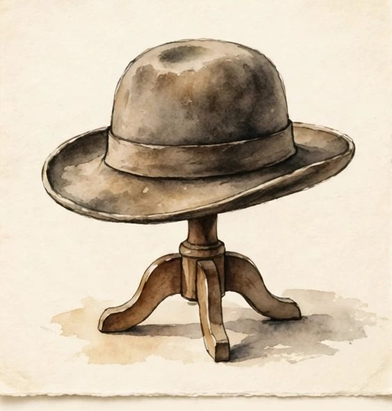
A plate is set gently to one side, the dish declined without a speech or a shudder.
The honest no has a quieter sibling, and this block is its page: disliking, plainly, without a manifesto. Not for me — entered in the register as a complete and courteous filing, requiring no supporting evidence, no coalition of the similarly displeased, no indictment of the thing or of its many happy lovers. The performed self finds such plainness difficult; it has been taught that a dislike, like a taste, must justify itself before the court that does not exist, and so it builds cases — against the cuisine, the genre, the whole era that produced it — until a simple preference of the palate stands dressed as a worldview, armed and recruiting.
The register's objection is architectural rather than moral. A manifesto is a heavy structure to build on a foundation of not caring for something, and heavy structures need maintenance: the arguments must be kept current, the enemy's new works monitored, the faithful reminded. People end up spending more hours inside their dislikes than the thing's own lovers spend inside the thing. Meanwhile the plain dislike costs almost nothing to keep. It closes its door, wishes the street well, and is available for dinner conversation about anything else. The Assay Desk notes, dryly, that the palate was issued as an instrument for choosing meals and music, not as a foreign policy, and that it functions best when not required to hold territory.
None of this forbids genuine criticism, which is a trade with its own honest tools, nor genuine opposition, which has its own necessary hours. The block addresses only the inflation of taste into doctrine — the moment when not liking a thing stops being information about the liker and starts being a claim upon everyone else. The register restores the entry to its true size with something like relief. A dislike, like a like, is a fact of the house, to be noted and lived around, not a border to be defended at expense. The closing line is entered, fittingly, without heat. A dislike that needs an army has stopped being a taste and started being a territory — and the Assayer, who has measured many estates, records that the smallest territories are always the most expensively held.
71The Want That Survived Every Fashion
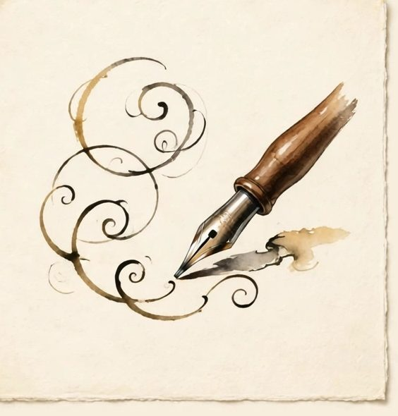
A walking stick worn smooth by one hand leans by the door, outlasting every style of departure.
Some wants predate every fashion that has ever claimed them, and this block is their registry. The same walk, taken at the same hour, in decades whose styles agreed on nothing else. The same craft, practiced while it was a hobby, while it was a joke, while it was briefly a trend, and after. The same shore, the same bench, the same unglamorous dish ordered in cities that had never heard of it. The register underlines these entries in the older ink, the ink reserved for instruments that have been tested the only way time allows: by being wanted at fifteen and at fifty, in weather fair and unfashionable, with nobody paying for the wanting at any point along the way.
Survival, the Assay Desk holds, is the only assay that cannot be hurried. Every other test in this hall — the flinch, the reach, the twice-read book — is a spot check, honest but momentary. The want that survived every fashion has been checked continuously, by the strictest examiner there is, which is change itself. Fashions are not frivolous in this accounting; they are the audit. Each one offered the want a chance to be traded in — for the newer pleasure, the approved enthusiasm, the identity of the moment — and each one was declined, usually without drama, the way a walking stick declines to become an umbrella. What was borrowed in a life gets returned, sooner or later, to fashion, family, or era. What remains in the hand afterward is what the register calls, simply, fitted.
The keeper is careful, closing this block, not to canonize mere stubbornness, which is a different metal entirely — stubbornness clings to the want because letting go would lose an argument. The surviving want clings to nothing; it is simply still wanted, freshly, each time, by the person who keeps arriving to want it. That freshness is the tell. A habit is a want that has stopped being consulted. This one is consulted every day and re-elected every day, unopposed, in an election nobody else knows is being held. The register's closing line is short enough to be carved, and the Assayer has considered carving it. The want that survives every fashion was never fashionable — it was fitted, the way a handle is fitted to one hand, and it keeps the shape.
72My Taste, Signed
The hall of tastes closes, as the whole house eventually must, with a signature. Across its rooms the register has gathered the evidence of preference in its unguarded forms: the order placed for no one, the music behind closed windows, the twice-read book, the want heard before its committee, the honest no, the small wants in pencil, the hat outliving its season. Gathered, they amount to something no single entry intended — a portrait of the liker, drawn entirely in what the hand reached for when reaching was free. This block performs the hall's only ceremony: the portrait is signed. Not defended, not explained, not apologized for — signed, in the owner's own hand, in the knowledge of what a signature means.
To sign one's taste is to stop attributing it elsewhere. The era suggested some of it, the family issued some of it, the long machinery of recommendation polished some of it to a shine — the earlier halls of this house have audited those loans thoroughly, and returned what could be returned with thanks. What remains after the audit is not necessarily original in the world's sense; other people like the soup, the song, the unfashionable hat, and always have. It is original in the register's sense: owned. The difference between a taste one has been assigned and the same taste one has signed is invisible from outside and total from inside, like the difference between a rented house and a bought one with the same walls.
The Assayer sets down the pen with the mild satisfaction of a clerk finishing a fair copy. Nothing in the hall has been improved, and that was never the hall's business; tastes were assayed here, not educated. What has changed — if the hall has done its work — is only the attribution, the small print at the bottom of the page of preferences, which now reads as it should. The closing entry belongs to the block, to the hall, and to every reader who has ever apologized for a soup. Taste, signed, is the shortest honest autobiography anyone ever writes — three words of it, and the rest of the life is commentary, footnotes, and weather.
73The Two Bookends of a Life
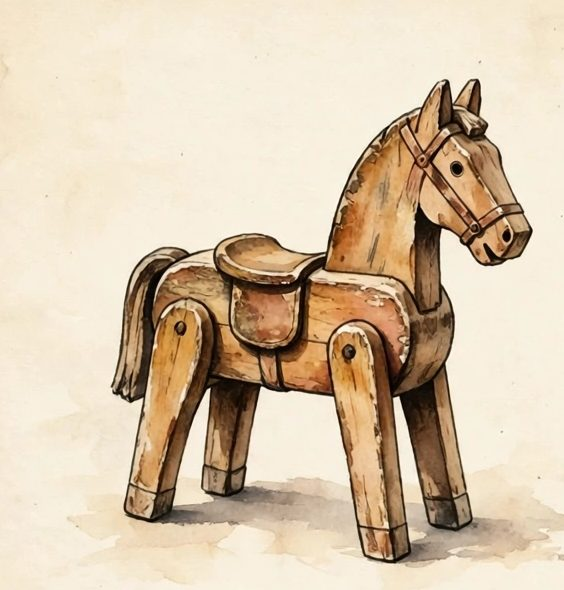
An old wooden toy horse stands at one end of a long shelf; a walking stick leans at the other.
The hall of the child and the elder opens with a piece of furniture. At one end of the long shelf of a life stands the child: wooden horse, pockets full of unexamined treasure, opinions at full volume. At the other end stands the elder: walking stick, pockets mostly emptied on purpose, opinions at low volume and great weight. Between them lean the middle years, volume upon volume, in bindings of every fashion — the borrowed years, the performed years, the years of translation and committee. The Assayer consults the two ends of the shelf more often than the middle, and this hall exists to explain why. The middle is busy. The ends are under no obligation to be busy, and it shows in their testimony.
Bookends do not read the books; that is not their office and they would be wasted on it. Their office is to hold the library upright — to be the fixed points against which the leaning volumes lean. The child holds the life at its least performed angle: before the audience arrived, before the loans were taken out, when liking a thing and saying so were a single act. The elder holds it at the angle after performance: when the audience has gone home, the loans been settled or forgiven, and saying so costs nothing because nothing is being sold. Between these two honest pressures, the middle years do their necessary bending. The register notes that a shelf needs both ends; a life that consults only its middle is a library leaning, slowly, toward whichever wall is nearest.
It would be sentimental to call the two ends the true self and the middle a disguise, and the Assay Desk does not deal in sentimentality of that grade. The middle years are real years, with real work in them, and some of the finest entries in the register are written in their ink. But as witnesses — as the two clerks who never learned to perform the life they were holding up — the bookends are unmatched. The hall will visit each in turn: the child first, then the elder being practiced, then the threads that run between them unbroken. Its opening finding is entered without ornament. A life is held upright by the two selves who never learned to perform it — and they hold it still, at both ends, at this hour.
74Eight Years Old, Unedited
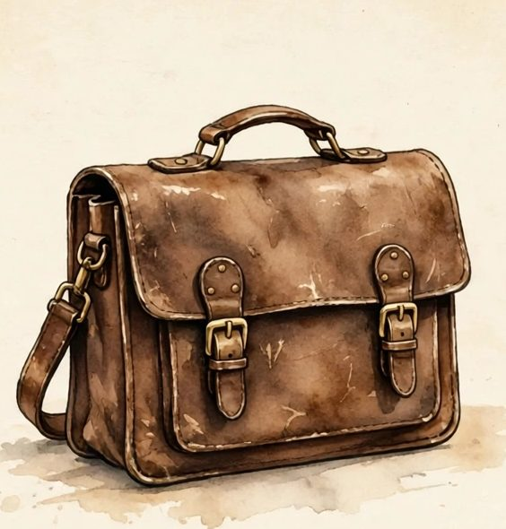
A worn school satchel rests beneath a tree, its treasures still unlisted in any register.
Eight years old is the age the register uses as its reference standard, the unedited edition against which later printings are compared. At eight, likes are declared at full volume and without footnotes: this game, this tree, this person's laugh, and no committee was consulted in the making of any of them. Dislikes are equally complete and equally courteous in their way — brief, factual, and free of manifestos. Nothing yet has been borrowed that cannot be dropped by suppertime. The child of this block is not a sage, and the hall does not ask the reader to recover him as one. He was frequently wrong, occasionally careless in the way of his age, and entirely innocent of long division. But his draft and his author were the same person, and the register knows how rare that becomes.
Unedited is the technical term, and it is worth defining before nostalgia gets its hands on it. It does not mean wise, and it does not mean good; it means the text went out as written. The eight-year-old's preferences were not workshopped by an internal audience, translated for stakeholders, or hedged against future quotation. What was loved was loved at full size, what was feared was feared in the open, and the whole small library of the self was shelved where any visitor could see it, because the concept of a visitor's opinion had not yet been invented. The Assay Desk keeps this edition in the cabinet of standards not because its contents are correct — many are gloriously incorrect — but because its process was: nothing in it was pretending to be anything else, including a grown-up.
The point of consulting the standard is comparison, not return. The estate has no interest in the reader resuming the satchel, the tree, or the full-volume declarations, all of which belong to their decade and were correct there. The point is narrower: somewhere between that edition and this one, editing began — some of it necessary, some of it wise, and some of it performed so long that the editor forgot the original text entirely. The hall exists to recover the text, not the childhood. Its closing entry is written in the register's hand, which has perhaps softened, very slightly, for this one line. The child signed everything in crayon, in large letters, without being asked — and never once, in all the volumes, forged the signature.
75What the Child Knew Without Vocabulary
Before the vocabulary, there was the knowledge. The child of this hall knew which adult's laugh was safe and which was weather, which game was worth the walk and which tree kept the best shade in August, knew it completely and could not have defined a word of it. The knowledge was held where such knowledge is held at that age: in the feet, which went or would not go; in the stomach, which voted early and without speeches; in the hand, which reached. The Assay Desk, whose trade is sequencing documents, enters this as the earliest stratum of the register — the entries made before entries existed, in a hand that had not yet learned to write and therefore had not yet learned to revise.
Then vocabulary arrived, as it must, and did its double work. It named things, which is a mercy, and it translated things, which is a risk. Some of the child's knowledge survived translation intact and walks around today in adult dress, answering to adult names. Some of it was edited — smoothed, made plausible, made consistent with the story the growing self was learning to tell — and the editing was not always faithful. The register does not indict the translators, who were mostly the child himself, growing. It merely notes the existence of an earlier edition, shorter than the current one and, in places the Assayer has checked with care, more accurate — particularly in the chapters on what was liked, what was feared, and whose company felt like weather clearing.
The practical use of this block is modest, as the hall's uses tend to be: when the adult vocabulary and the older knowledge disagree, the disagreement itself is worth entering. Not obeying — the child is not appointed governor of anything. Entering. A preference that has survived from the stratum before words into the present tense, still voting in the stomach and the feet, is among the oldest documents the house holds, and age in documents is not proof but it is evidence. The block closes with the sentence the Assayer underlines once a year, on no schedule anyone has discovered. What was known before it could be said is rarely improved by the saying — the saying is for other people; the knowing was always for the one who knew.
The Assay Desk
One desk receives all correspondence for this assay — questions, corrections, greetings, and word of anything you have tested lately and found genuine, or found wanting. It is read in the order it arrives.
76The Elder I Am Practicing to Be
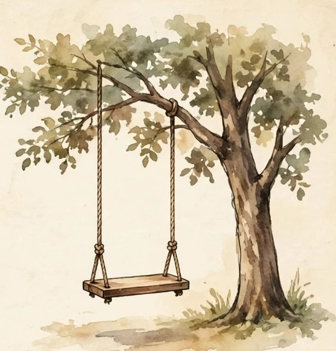
An hourglass stands on a plain table, its sand entirely unhurried about the falling.
The elder of this hall has not been met yet, and the register is particular about the tense. He is not awaited, the way a train is awaited, and not dreaded, the way a bill is dreaded. He is practiced — rehearsed in the quiet, daily sense, the way a musician practices scales in an empty room: not performing for anyone, and not yet the performance, but deciding, note by note, what the performance will be made of. What is kept and what is set down. What no longer needs winning. Which doors get closed gently now so that they will not need slamming later. The Assay Desk keeps a page for these rehearsals and heads it, simply, with a name and the words in progress, as one heads the file of any work still honestly underway.
The elder being practiced has a recognizable style, even at this distance. Fewer audiences, and longer looks out of windows. A preference for the small wants, by then promoted to seniority. A register kept in pencil, in the knowledge that entries are weather. And — the Assayer notes this with professional interest — a growing resemblance, in manner if not in stature, to the other bookend of the shelf: the likes declared plainly, the dislikes without speeches, the signatures made in whatever the elder's equivalent of crayon turns out to be, large and unembarrassed. The middle years stand between two people who say what they mean. The practice of the elder is, in large part, the slow removal of everything that got in the way of that resemblance.
None of this is morbid, and the hall wishes the record kept straight on that point. Practicing to be the elder is not rehearsing an exit; it is furnishing a room one intends to live in for a long time, in advance, at leisure, with one's own hands. The people who do it arrive at old age the way prepared hosts arrive at their own parties — already at home in the place. The register's closing line for the block is entered in the spirit of the scales heard through the empty room's door. One becomes the elder one practices being, the way a path is made by walking it early and often — the elder is not a stranger approaching; he is a tenant whose lease one is already, quietly, signing.
77Threads That Never Changed Color
A tree with an empty swing stands where it has always stood, its rope weathered true.
Through every era of a life — its costumes, its cities, its successive and contradictory opinions about nearly everything — some threads run through the cloth un-dyed. The love of water, wherever it appears. The early hours, kept through decades that mocked them. A particular humor that has survived every regime of taste. A way of working with the hands, or of going quiet at a certain quality of light. The register calls these the threads that never changed color, and tests a life by them the way a weaver tests a tapestry: not by its patterns, which any fashion can supply, but by the warp — the threads under tension from the first day, without which there would be no cloth for patterns to appear on.
The Assay Desk's interest in these threads is forensic. Costumes change; that is what costumes are for, and the earlier halls have hung enough of them in the wardrobe. Accents change, ambitions change, even convictions change, honestly and sometimes bravely. But the hallmarks struck deepest — the Assayer's professional observation, offered as bookkeeping — are the ones struck first and never re-struck: they did not need renewing because they were never impressions made by the world. They are the pattern of the metal itself. A thread that runs from the child's drawer of treasures to the elder's quiet room, passing through every middle year without once applying for a new color, is as close as this house comes to a definition of the thing its title is about.
The reader is not asked to make an inventory on the spot; the register distrusts inventories compiled under instruction, which tend to list what a life thinks it should contain. The threads announce themselves differently — in the small wants, in the reaches, in the want that survived every fashion, in the sentence that still raises the old instrument's honest response. They have been entering themselves in the record all along, in the margins of every hall of this house. The closing line is therefore less a finding than a recognition, and the keeper enters it in the warp's own plain color. A thread that never changed color was never following the fashion — it was following the cloth, and the cloth, all along, was the life itself.
78The Letter the Child Left in the Drawer
In the drawer of nearly every middle life — the actual drawer, with its string and dead batteries and keys to locks that moved house years ago — there is also, metaphorically and sometimes literally, a forwarding from the child. Enthusiasms in large handwriting. Certainties that have never been invoiced. Plans for a treehouse empire, a dog, a life conducted at walking pace near water. It is not a set of orders; the child had no authority and less information. It is closer to a note left on the kitchen table of the future, in the cheerful assumption that whoever lives there later will be a friend of the writer's, and interested, and glad to hear what the writer was up to at the time of writing.
Reading it, at whatever age the drawer is next opened, is an exercise the register supervises with care, because it goes wrong in two sentimental directions. It is not obedience — some items in the letter were for a different tenant entirely, and the treehouse empire's zoning difficulties are real. And it is not an occasion for tears over a lost self, since the self was never lost; it was forwarded, which is a different postal category altogether. The Assayer's method is sorting, at a plain table, in good light. This item is still warm: the want underneath it is in the current register, voting. This one has expired kindly. This one was never the child's at all, but an adult's hope, backdated — those exist, and the register detects them by their suspiciously mature handwriting.
What survives the sorting is usually small enough to fit in a coat pocket, and the keeper suggests it be carried there for a while, next to the small wants, where the true documents live. Not as a command — as company. The child who wrote it had a quality the middle years misplace more often than any other: he wrote entirely without wondering how the letter would look. Its spelling is its hallmark. The block closes with the sentence the Assayer reads aloud, once, whenever this page of the register is opened in his hearing. The child wrote to whoever would be living here later, in the faith that the address was his own — the letter assumes the house is still occupied by a friend, and the register has never once marked it undeliverable.
79Promises Made at the Age of Ten
A small promise is kept where it was made, among the marbles and string of an open drawer.
The promises made at the age of ten are a distinct class of document, and the register gives them their own drawer. Never to be boring. Never to forget the tree, the dog, the code word, the exact terms of the alliance. Always to keep a supply of the good biscuits for whoever might need them. They were made without counsel, without a lawyer's sense of the loophole, in full earnest and in crayon's legal equivalent — and they have outlasted, in many a life, contracts of far greater sophistication, because they were never really contracts at all. A contract binds two parties. These bound one person to a standard that person invented, at an age when inventing standards was still done in the open, at full volume.
The Assay Desk's audit of these promises is conducted, unusually, without a column for compliance. Some were kept, by accident or fidelity. Some were broken by weather — by the ordinary meteorology of growing up, which scatters many fleets more seaworthy than a ten-year-old's resolutions. The register fines no one. It is interested in a different measurement: recognition. Which of the promises, read now, still recognize their maker — still describe, under the costumes and the committees, a term the current tenant would sign again without being asked? Those are not debts. They are soundings, dropped into the deep water of the middle years, and the ones that come up still ringing have located something the hall has been circling since its first room: a thread, holding its color, all the way down.
The broken ones are filed with the same care, and not in the drawer marked failure, which this estate does not keep. A promise broken by weather is information about the weather. A promise quietly outgrown is information about the growing. Only a promise betrayed in comfort — traded, knowingly, for an easier afternoon — earns the register's single dry annotation, and even that annotation is in pencil. The block's closing sentence restores the documents to their true denomination, in which they were always richest. A promise made at ten is not a contract, and its maker is not in breach; it is a landmark — and landmarks were never for standing on, only for finding one's way back by, in weather of any kind.
80The Elder's Review of the Middle Years
A walking stick rests by the door of a quiet room, where the accounts of the years lie open.
The hall's final exercise is an act of imagination with a clerical purpose: to read the middle years from the far end, in the elder's hand, before the elder arrives to write it. The review is imagined — the Assay Desk keeps its tenses honest — but its standards are not. From that distance, the great questions of the middle years arrive already answered, and what remains for the reviewer is tone. The available evidence suggests the tone will be milder than the middle years fear. The elder, having survived everything the middle is currently surviving, reads its performances and borrowings the way one reads the letters of a much younger friend: with recognition, with amusement, and with a complete absence of the urge to write back in anger.
The review is not lenient in every column, and the register would not respect it if it were. It forgives the costumes wholesale — they protected, they served, some of them were magnificent, and the elder knows the weather they were worn in better than anyone. It forgives the borrowed opinions, the performed laughs, the years of translation. Its single strictness falls on one line item only: the years, where they occurred, in which the wearer believed he was the costume — when the coat stopped being equipment and started being the account rendered of the person. Even there, the annotation is not a sentence of law. It is a question, in pencil, of the kind the elder will by then have learned to ask properly: and what was the weather, that year, inside the coat?
The block closes the hall's first movement by handing the register across the shelf to the elder, who is still being practiced and is therefore still taking dictation from the present tenant. That is the use of the exercise: the review will be written, eventually, in whatever hand the middle years are training now — pencil annotations or indictments, and the curriculum is open enrollment. The Assayer's closing line for the block is the one he reads to himself at the end of long audits, when the columns are ruled and the book is shut. The elder's review, in the end, is mostly margin notes in pencil — this was weather; this was you — and the middle years, read kindly, turn out to contain far more of the second than they feared.
81What Both of Them Agree On
Put the child and the elder in one room and ask them the only question the Assay Desk cares about: what, in this life, was actually yours? Their answers agree to a degree that embarrasses the decades standing between them. The child names the river, the dog, the path behind the fence. The elder names the same three, in the same order, with better grammar. Everything the middle years added — the titles, the opinions, the careful arrangements — is mentioned by neither witness, as though it had all happened to a tenant they both remember fondly but vaguely.
The agreement is instructive precisely because the witnesses cannot have colluded. The child has not yet learned what is expected; the elder has finished caring. Between those two freedoms the same short list surfaces, like the same maker's mark struck at the start of the workshop's day and again at its end. The Assayer notes it in the register with professional satisfaction: when two assays, conducted seventy years apart with entirely different instruments, return the same reading, the metal is not in doubt. What both of them agree on is small, plain, and unglamorous — which is exactly why it can be trusted.
This is worth more than nostalgia, and the hall insists on the distinction. Nostalgia gilds; agreement verifies. The child is not wiser than the adult, nor the elder sadder; each is simply standing where performance is either impossible or pointless, and from those two positions the view turns out to be identical. To consult them is not to retreat into childhood or to wait passively for old age, but to borrow their vantage for an afternoon. Two witnesses, one short list, and no argument between them. The rest of the register is commentary; this page is the finding.
82The Middle Is Mostly Translation
A page of plain script sits beside the same page dressed in a formal hand, neither crossed out.
Between the child who speaks plainly and the elder who speaks plainly again, there stretches the long middle of a life, and the middle is mostly translation. The original sentence forms somewhere inside — a want, a dislike, a sudden certainty — and then passes through committee after committee on its way to the mouth. It is softened for the office, sharpened for the argument, translated into the family's dialect, rendered into the era's fashionable terms. By the time it is spoken aloud, it is accurate the way a translated poem is accurate: nothing false, and the music quietly gone.
Translation is not lying, and this hall files no charges against it. A person who refused all translation would be unintelligible by Tuesday; the middle years have employers, children, neighbors, and weather to get through. The Assayer's concern is narrower and more practical: a translation kept too long becomes mistaken for the original. The phrase repeated in other people's voices starts to feel like one's own voice. The rendered opinion, polished by a hundred tellings, is finally indistinguishable from a belief — until some unguarded hour produces the original sentence, plain and startling, and the translator recognizes his own handwriting underneath.
The remedy the register suggests is not to abandon translation but to keep the drafts. Read the original once in a while, in private, the way one checks a hallmark against the register: not to publish it, not to perform it, simply to remember which text is the source. The middle years will go on translating — that is their trade and their kindness. But a person who knows his own first draft cannot be wholly replaced by his translations. The original stays on file, unsigned, unhurried, waiting for the elder to speak it plainly again.
83Growing Older Without Growing Away
A sapling and an old oak stand along one path, their shadows meeting at noon.
There is a common fear, rarely spoken aloud, that growing older means growing away — that the self one started with is slowly traded, year by year, for a succession of more reasonable strangers. The Assay Desk has examined the evidence and returns a calmer finding. What changes with age is mostly the fittings: the speed, the appetites, the list of things worth an argument. What does not change, in the lives the register has followed, is the grain. The oak is not the sapling's replacement. It is the sapling, given time and weather, with its early lean still visible in the trunk.
The assay for this is simple and can be run at any kitchen table. Set down what delighted you at nine and what delights you now, and compare them honestly, without arranging the evidence. The forms will have changed — the tree house has become a garden bench, the bicycle a long walk — but the underlying order is usually intact: the same appetite for high places, or for water, or for being left companionably alone. People do not, as a rule, exchange their grain. They exchange its expressions, and the exchange is not a betrayal. It is joinery.
Growing away happens only when the expressions are chosen entirely by other people's catalogs — when each decade's delight is ordered from the era's mail. Then, yes, the trunk can be planed down to a stranger. But that is a choice of suppliers, not a law of aging. The elder this hall is practicing to be is not a different person from the child; he is the same tenant with more keys. Age, handled honestly, does not distance a life from its beginning. It gives the beginning its longest echo.
84One Tenant the Whole Life Long
Every other room in a life changes occupants. The student flat, the first office, the house with the mortgage — each is let to a version of the self who stays a few years and moves on, leaving forwarding addresses and unpaid emotional bills. But beneath the turnover, the register records one constant tenancy. The child who hid in the stairwell, the adult who performed at the podium, the elder who will nap through the afternoon — these are not three tenants in succession. They are one tenant, photographed at different hours, paying the same rent in different currencies.
This is easy to state and surprisingly hard to feel. The middle years are skilled at issuing the self new papers: new name on the door, new furniture of opinions, new script for the family gatherings. The documents suggest a change of occupancy, and the neighbors believe it. But the Assayer, who checks the mark on the inside rather than the nameplate on the door, finds the same strike underneath every refinishing. The tenant has redecorated many times. He has never moved out. The lease, it turns out, was signed long before he could read it.
To take this seriously is to owe the tenant a certain courtesy across the whole tenancy. The child should not be evicted by embarrassment; the elder should not be mortgaged by the middle years' vanities. One tenant means one continuous responsibility — and one continuous mercy, too, since the person who must live with every decision is always the same resident. The hall leaves the key where it has always hung. The house was never empty, and it was never let to anyone else. There has only ever been the one of you at home.
85The Unguarded Hour
A bedside table at dawn holds a glass of water and yesterday's glasses, the curtains half open.
Every person keeps one hour in the day when the staff is off duty — the censor, the press officer, the wardrobe master of the performed self all clocked out at once. It may come at waking, or in the last minutes before sleep, or alone in a car between two obligations. In that hour the self appears without its translations, and what it says there is the closest thing to raw register entries this hall will ever examine. The unguarded hour is not more virtuous than the guarded ones. It is simply less edited, and therefore better evidence.
The Assayer treats these hours the way jewelers treat the underside of a piece: not the face shown to the room, but the surface where the true marks are struck. First thoughts, slipped sentences, laughter that arrives before permission — each is a small assay performed by the life itself, without instruments. They cannot be scheduled, faked, or improved, and attempts to perform them for an audience destroy the sample on contact. Their value lies exactly in their uselessness. Nothing in the unguarded hour is trying to be evidence. That is why it is.
This hall therefore approaches the hour the way one approaches a bird at a window: quietly, and without banging on the glass. Do not interrogate it, do not brandish it, do not immediately build a memoir out of it. Just notice, now and then, what the unguarded minutes contain — the tune hummed, the truth told to the ceiling, the want admitted before the committee convened. Those are the register's plainest entries. A life that reads them occasionally does not need to wonder where its original went. It visits, briefly, every day.
86First Thoughts on Waking
Curtains glow at the edges with first light while the room is still holding its breath.
Before the day has issued its instructions, before the phone has been consulted or the face arranged, there is a brief parliament of first thoughts. They are not noble, particularly. They are unguarded: the honest dread of the dentist appointment, the uncomplicated wish for tea, the name that surfaces though it has not been summoned in years. The Assay Desk values them out of proportion to their dignity, because they arrive before the translator has reached his desk. For a few minutes the register is written in the original hand, and the entries are plain.
Notice what first thoughts rarely contain. They almost never rehearse the performed self's speeches, or review yesterday's reviews, or plan how a moment will look when described. They are concerned with weather, appetite, aches, and one or two unadorned truths — the task actually dreaded, the person actually missed. The body files its report in the same minutes, before the mind can edit the returns: this shoulder, this tiredness, this inexplicable lightness. It is entered without commentary, and it is believed without cross-examination. It is bookkeeping of the humblest kind, and it is the least falsified bookkeeping of the day.
The hall recommends no discipline here, no dawn journaling regime with rules and streaks — that would only post a guard at the one unguarded gate. Simply, once in a while, lie still for the length of one breath and let the first thoughts introduce themselves before you introduce yourself to the day. They will not always be welcome. They will always be yours, struck before the mint opened. Whatever else the morning performs, it begins from evidence. The first page of the register is written before the writer arrives.
87The Sentence That Slips Out
Every so often, in the middle of an ordinary conversation, a sentence slips out that was not on the approved script — and the room goes briefly quiet, not from offense, but from recognition. The speaker hears it too, usually a half-second late, with a small internal start: that was the actual opinion. The Assay Desk keeps a fond file of these moments. A slipped sentence is an assay performed by accident, the verbal equivalent of the hallmark turning up on the inside of the band where nobody thought to look. It was struck long ago; it simply surfaced.
What slips out is rarely a scandal. More often it is disarmingly modest: I never liked that city. I do not actually want the promotion. I was happiest the year we had nothing. The performed self scrambles to qualify, to laugh it into harmlessness, to add the committee's amendments — and sometimes the scramble succeeds. But the sentence has been heard, by others or only by oneself, and a heard sentence cannot be unfiled. It goes into the register as what it is: the original text, surfacing through the translation, in public, ahead of schedule.
The hall advises gentleness toward these escapees. Do not punish the slipped sentence, and do not immediately promote it to a manifesto either; both reactions are the guard returning to duty with excessive zeal. Simply note it, the way the Assayer notes a mark he did not expect. Over years, these small treasons of the tongue compose a more accurate biography than any considered self-description. The Assayer underlines nothing in these entries; a sentence that escaped underlines itself well enough. The truth of a life is not what it announces. It is what keeps escaping, politely, at dinner.
88Laughter Before the Censor Wakes
Two mugs stand forgotten on a doorstep, gone cold in good company.
There is a laugh that arrives before permission — the one that escapes at the solemn moment, in the wrong meeting, at the family table where a face was supposed to be kept. It cannot be helped and should not be wholly trusted, but the Assay Desk records it with respect. Laughter of this kind is the body's own register entry, filed without consulting the performed self's press office. What a person laughs at before the censor wakes is a reliable map of where the unedited self actually lives: its sympathies, its irreverence, its private sense of proportion.
This is why old friends are such dangerous witnesses. They remember what made you laugh at fifteen, before you learned which amusements were appropriate to your station, and their memory is an archive no later editing can reach. The performed self may cultivate a tasteful chuckle for the approved occasions, but the escaped laugh keeps its own counsel and its own history. A person can change opinions, cities, and gods, and still be undone by the same ridiculous sight that undid him in the schoolyard. The Assayer calls that continuity, and enters it without embarrassment.
None of this requires performing spontaneity — the escaped laugh, chased, becomes the rehearsed one, and the register can tell the difference at a glance. It asks only for a little gratitude when the genuine article surfaces: a moment in which the whole apparatus of self-management is simply too slow, and the original tenant answers first. Those moments are brief, unrepeatable, and impossible to buy. They are also the closest thing to a signature the day produces. It needs no ceremony, and it survives every attempt to repeat it on purpose. The laugh signs before the hand has found the pen.
89The Friend Who Gets the Unedited Draft
An open notebook lies face-up on a kitchen chair, its blank pages unguarded.
Almost everyone, if fortunate, has one reader of the first draft: the friend to whom sentences are sent before the committee has revised them. With this person the translations stop. The news is delivered in the original hand — the actual fear, the unseemly hope, the opinion still warm from the mint — and the friend reads it without flinching, because he has been reading that hand for years. The Assay Desk does not distribute such friendships; they cannot be ordered or deserved into existence. But it records their assaying value, which is enormous: one external witness who knows the mark.
The unedited draft is not the same as the constant confession, and the hall draws the line carefully. The friend is not a repository for everything felt at full volume; he is simply the one audience before whom performance would be pointless, since he would recognize the costume from the wardrobe himself. Conversation there runs at the speed of the quiet self. Silences do not need managing. News does not need framing. It is the social equivalent of the unguarded hour, extended to two chairs — proof that the original text can survive being read aloud.
If you have such a reader, the register suggests a small act of maintenance: thank them, occasionally, without making a ceremony of it. If you do not, the absence is not a verdict — some originals are simply kept in a house with few visitors, and their marks are no less true for being unwitnessed. Either way, the draft exists. The friend only confirms what the Assayer already suspected. A self that can be read unedited by even one person is not lost. It is in circulation, at least in a private edition.
90Tears Without a Press Release
Grief and joy both have a public form — the condolence face, the celebration face — and a private one that arrives without announcement and asks for no coverage. The tears this hall means are the second kind: the ones that surface alone in a kitchen, or driving, or at a song that was not even a favorite, and subside without having been witnessed, explained, or converted into a story. They are the register's least performative entries. Nothing in them is addressed to anyone. That is precisely their evidentiary weight.
The body keeps its own counsel about these things, and the Assay Desk treats its testimony as bookkeeping, not as a medical matter: something was true enough to move the tenant, and the movement was recorded in salt water before the mind could draft a statement. What exactly the tears mean is often unclear even to the person shedding them — relief and sorrow share plumbing, and the register does not pretend to separate them. It notes only the fact and the timing. The performed self manages feelings by schedule. The original files them whenever they ripen.
There is no technique here, and the hall would be ashamed to offer one. Tears without a press release are not a practice to cultivate but a privacy to respect — one's own, most of all. Do not rush to interpret them, apologize for them, or promote them into revelations. Let them be what they are: weather in the house, passing through the one tenant who lives there. A life in which feeling still arrives unannounced is a life whose original has not been managed out of residence. The windows fog; the mark stays dry; the register simply notes the rain.
The Assay Desk
One desk receives all correspondence for this assay — questions, corrections, greetings, and word of anything you have tested lately and found genuine, or found wanting. It is read in the order it arrives.
91The Truth at the Kitchen Door
A hat hangs on its peg by the kitchen door, still damp from the walk home.
There is a particular threshold where honesty tends to ambush people: the kitchen door, coming in with the shopping, halfway out of the coat. It is where the day's performed version is still being worn but no longer believed, and where the household's real news gets exchanged in the plainest sentences of the day. I cannot do another year of this. The money is worse than I said. I liked the quiet more than the party. The Assay Desk has no explanation for the door's power. It suspects the coat half-off does the assaying.
Thresholds work because they belong to neither performance. The outside self has finished its engagement; the inside self has not yet taken up its own gentler duties. In the doorway, a person is between editions — and the sentence spoken there is drafted by the tenant rather than by either office. Families learn, without ever discussing it, to listen at that door. The confession made while hanging up a hat has a different specific gravity from the same words delivered seated, with tea, after preparation. It has not been arranged. Arrangement is what it has escaped.
The hall's suggestion is only to notice your own kitchen-door sentences, and perhaps to honor them with a small delay before translating them into something safer. They are not automatically right — thresholds produce candor, not wisdom — but they are automatically yours, and they deserve a hearing before the committee amends them. A life that listens at its own doorway learns its news early. Doors, after all, are where coats come off and news comes out, in that order. The truth usually arrives there first, still wearing its coat, with the shopping in its hands.
92What I Hum Without Noticing
A small songbird sits on a wire in morning light, mid-phrase, entirely unbothered.
Every person carries a tune the mind selects without asking — hummed over dishes, under the breath on a staircase, in the absent minutes of a walk. It is rarely the anthem one would choose for oneself. It might be a grandmother's lullaby, an advertising jingle of disgraceful durability, a hymn from a discarded faith, a pop song whose words one officially deplores. The Assay Desk collects these tunes the way it collects slipped sentences: as register entries made by the tenant when the management was looking elsewhere. The hum is the self, whistling in its own house.
What the tune reveals is not taste — the performed self's taste is documented elsewhere, in playlists arranged for witnesses. The hum reveals stratigraphy. It is whatever sank deepest: the music of the childhood kitchen, the song of the first summer of freedom, the chorus that played during the year everything changed. The mind hums its geology. A person can renovate every room of opinion and still find, at the bottom of the shaft, the same seam of melody running unbroken. The Assayer does not grade the tune. He notes the seam, and its depth, and its refusal to be renovated.
There is no action attached to this entry, and the hall is content with that. The hum is not a message to decode or a therapy to pursue; it is a small, continuous proof of tenancy. When you next catch yourself mid-tune, spare it one second of recognition before the censor changes the station. Somebody is home, and at ease enough to make music he did not plan. The original does not always announce itself with revelations. It asks for no audience, keeps no schedule, and apologizes to no committee. Sometimes it just hums, off-key, while doing the dishes.
93The Confession Made to the Ceiling
The ceiling is the most confided-in surface in any house. It receives, at three in the morning, the sentences that no diary, friend, or professional has been trusted with: the true size of the debt of regret, the name not spoken in years, the admission that the celebrated decision was a mistake. These confessions are made upward, to plaster, because the plaster does not react. The Assay Desk respects the arrangement. Some register entries are written precisely because no reader is expected. The ceiling is the original's confessor, and it keeps the seal perfectly.
What is confessed to the ceiling has a purity the hall envies: it seeks nothing. It is not asking for absolution, advice, or even relief — the confessor offers none of these, and the tenant knows it. The sentence is spoken simply to be outside the body once, in its original form, untranslated. I am frightened. I do not forgive him yet. I wanted the other life. Once said, even to plaster, such sentences lose their monopoly on the dark. They become facts among other facts, filed in a register that exists — even if its only copy is kept in one person's memory of a ceiling.
The hall prescribes no nightly ritual; ceilings cannot be scheduled, and confession performed by appointment becomes another act. It notes only that nearly everyone has made these entries, and that they are among the most honest lines a life produces. You are not required to act on them by morning. You are not required to be proud of them either. They are assays run in the dark, and their results belong to the tenant alone. What was true at three in the morning deserves, at minimum, not to be denied at nine.
94Being Caught Being Oneself
A garden gate stands open on an empty path, mid-morning, nobody expected.
There is a small, distinct embarrassment in being caught being oneself: singing in the stairwell as a door opens, talking to the dog in the serious voice, caught mid-gesture in the full pantomime of a private enthusiasm. The laugh that follows — one's own, startled — is worth examining. Why should the original, of all versions, be the one that produces a blush when witnessed? Because it was unguarded, and the guard, returning in a hurry, files embarrassment as an apology for its absence. The Assay Desk declines the apology. Nothing was wrong.
Consider what the witness actually saw. Not the scandal the blush imagines — merely the tenant at home in his own house: unposed, unadministered, entirely ordinary in his pleasures. Being caught being oneself is, objectively, the least compromising thing a person can be caught at, and yet it can fluster more than being caught mid-performance, because the performance at least had a script to hide behind. The original has no script. It has only the fact of itself, suddenly lit. The fluster is the sound of the audience arriving in a room that was built without seats.
The register's counsel is mild: let the blush pass without building defenses on the spot. No explanation, no ironic commentary, no instant conversion of the moment into entertainment for the witness. The tenant was home; a door opened; both facts can stand. People who can be caught being themselves without scrambling recover something the performed self spends fortunes trying to rent: the appearance — no, the reality — of being at ease in their own residence. The gate was open because nobody was expected. That is not carelessness. That is the house, working as designed.
95The Unguarded Hour Is Not on the Schedule
A wall clock hangs slightly crooked in an empty hallway, its hands between appointments.
It would be convenient if the unguarded hour kept office hours — if authenticity could be booked for Thursdays at six and conducted with proper minutes. It cannot, and the Assay Desk warns against every attempt to put it in a diary. The hour arrives unscheduled or not at all: mid-errand, mid-sentence, in the shower's steam, in the three minutes between obligations when the self, unconsulted, simply stands in the room. To schedule it is to send the performed self to attend on one's behalf, and the performed self, punctual and well-dressed, will happily take the meeting.
This is not an argument against all intention — the steps later in this hall are intentional enough. It is an argument about sequence. One can clear a space, lower the noise, take the walk, keep the hour open; one cannot order the tenant to appear unguarded at the appointed minute, any more than sleep can be commanded rather than allowed. The guard changes when it changes. The most a schedule can honestly do is leave certain gates unwatched on purpose — a walk without the phone, a morning without the news — and accept whatever does or does not wander through.
The register therefore keeps this page free of times and dates, deliberately. The unguarded hour is the one appointment the house refuses to book, because its entire value is that nobody booked it. What can be arranged is only the courtesy around it: fewer sieges, quieter rooms, longer thresholds. Then, unscheduled as weather, the hour comes and goes on its own authority. Wealth counted in unguarded minutes is spent nowhere else and taxed by no one. A life cannot timetable its originality. It can only stop standing in the doorway, checking a watch, when the tenant comes home.
96Where the Guard Changes
Every guarded house has the moment the watch is relieved — the sentry of the performed self stepping down, the quieter tenant taking the corridor for the night. This hall ends by asking a plain question: where, in your life, does the guard actually change? At the front door, with the coat? In the car, in the first unobserved mile? At the kitchen table, at the friend's table, at the ceiling's three-o'clock audience? The Assay Desk does not ask from curiosity. The place of the change is a fact about the architecture of a life, and architecture can be adjusted.
Notice, too, how long the guard's shift has become for many. The stage used to strike its set at the doorstep; now the performance travels in a pocket, lit and buzzing, and the audience is theoretically present in the bedroom, the garden, the last minutes of the day. The change of guard happens later, or shallower, or not at all — and the tenant spends the night in a house still technically on duty. Nothing in that arrangement is wicked. It is merely expensive, and the expense is charged to the one account that cannot be overdrawn forever: the sense of being at home in one's own life.
So the hall closes its eighth section with a small survey rather than a sermon. Find where your guard changes, and notice whether the place still serves. A door can be added; a threshold can be widened; one room can be declared, by private treaty, a place where nothing is proven. The tenant does not ask for the whole house unguarded — only for a reliable hour and a reliable door. The survey costs one honest minute, repaid at the door every evening thereafter. Where the guard changes is where the original clocks in. Every house deserves to know the spot.
97Step One: Notice One Unperformed Moment
A pencil rests beside a blank list card on an unpolished wooden table.
The first step asks for no change in behavior at all, which is why it is first. Sometime in an ordinary day, catch one moment in which you were not performing: absorbed in a task, laughing before permission, staring out of a window with the face entirely off duty. You will usually catch it a second late, the way one notices a bird only as it leaves the branch. That is fine. Noticing is the whole exercise. The Assay Desk is not asking you to manufacture the moment, extend it, or feel anything particular about it. Just register that it occurred, and that the person in it was recognizably you.
Keep the noticing light enough not to frighten the wildlife. A private nod suffices — there it was — and then the day proceeds exactly as before. No journal is required, no witness, no announcement. If you wish, note the plain facts in the evening: where, when, doing what. The register values these entries because they establish the baseline of the whole assay: the unperformed self is not a theory or a destination. It already appears, briefly, in the middle of the scheduled life, without being invited. Step One simply starts the minutes of those appearances.
Do this for a few days and a quiet fact accumulates: the moments are not rare, only unrecorded. They cluster predictably — at the sink, on the stairs, in the first minutes of a walk — and they share a signature plainness the performed hours rarely achieve. Do not grade them, and do not yet build anything on them. The assay begins with observation, not intervention. One noticed moment, honestly entered, is the first true line of the register. Nothing follows from it yet, and that restraint is part of the step. The rest of the steps are written in its ink.
98Step Two: Name One Borrowed Thing Kindly
A returned book rests on a counter, a ribbon marking where the last reader stopped.
The second step is an act of inventory, conducted gently. Choose one borrowed thing — an opinion inherited like furniture, a phrase you say in someone else's voice, a taste that arrived by mail — and name it, in private, as borrowed. Not counterfeit: borrowed. The distinction is the step. A borrowed coat is a real coat; it kept real weather off. You are not confessing a fraud. You are reading the label inside the collar, perhaps for the first time, and noting whose name is written there in faded ink.
Kindness in the naming is not decoration; it is accuracy. The borrowed things in a life were almost all handed over with love or at least with hope — a father's certainty, a teacher's taste, an era's handwriting. To name them with contempt would falsify the register and wound the wrong people, most of them absent. Name the thing, name the lender if you can, and name what it did for you while you wore it. The Assayer insists on this full entry because an assay that records only the impurity and not the years of service is a dishonest document.
Naming is not yet returning; that step comes later, and some loans, examined honestly, will be kept for life with gratitude. Step Two only asks that one item move, in your own ledger, from the column marked mine by birth to the column marked mine by borrowing. That single honest transfer changes the bookkeeping of everything else. A register with one true entry can be trusted to produce more. The borrowed thing, kindly named, stops impersonating an heirloom and becomes what it always was: a gift, on loan, in good condition.
99Step Three: Ask the Body, Then Listen
The third step is a consultation, and its difficulty lies entirely in the second half. Ask the body a plain question — about the plan, the invitation, the extra year of the arrangement — and then do the unfamiliar thing: listen without immediately drafting the reply. The body's testimony is bookkeeping, not oracles: the shoulders' register, the flinch that votes, the ease that votes too, the tiredness that tells the truth at a different hour than the mind does. It will not speak in paragraphs. It speaks in weight, warmth, tension, and appetite, and it has usually filed its report before the committee has even convened.
Listening means allowing the report to be entered before the amendments begin. The mind is a brilliant attorney and will instantly retain itself — yes, but the money; yes, but what will they think. Let it wait its turn. Give the body's entry one full minute of unedited standing in the register. This is not a medical practice and diagnoses nothing; the hall is strict on that point. It is a courtesy between tenants of the same house: the one who carries everything is asked, at last, how the carrying feels.
Then — and this is what makes the step a step rather than a ritual — let the testimony count for something visible, however small. Decline the thing the shoulders voted against, once. Take the rest the tiredness requested, once. The body does not need to win every vote; it needs evidence that its votes are tallied. A register that records testimony and never acts on it teaches its witnesses to stop testifying. The testimony was never asking to rule the house; it was asking to be heard in it. Ask, listen, and enter one honest consequence. The house runs better when all its ledgers agree.
100Step Four: Admit One Small True Want
A single flower stands in a jar on a windowsill, wanting nothing but the light.
The fourth step is deliberately small, because small wants are the telltale ones. Admit — to yourself, in words, even if only in the ceiling's direction — one thing you actually want. Not the grand renovated desire suitable for interviews; the modest article underneath it. Not success, but the quiet mornings success was supposed to buy. Not the impressive journey, but three days by unremarkable water. The Assay Desk has noticed that large wants are often translated documents, while the small ones arrive in the original hand, slightly embarrassed by their own plainness.
Admitting is not acquiring, and the step requires no purchase, plan, or announcement. Many small true wants, once admitted, turn out to cost almost nothing — an hour, a no elsewhere, a walk taken at one's own pace — and some cost a great deal and will not be bought at all. Both outcomes are acceptable to the register. What matters is the entry itself: this is wanted, by the tenant, in his own name. A life can survive many ungranted wants. What it cannot survive indefinitely is a register in which the tenant's wants are never recorded under his own signature.
Say it plainly, then, and let it stand unamended for a day before the committee improves it. The want may embarrass you; the borrowed self has excellent taste in embarrassment. It may contradict the performed self's published platform. Let it. One admitted want is one hallmark struck where it belongs — on the inside, by the maker, without witnesses. Steps like this do not change a life in a week. They change the authorship of the register, one small entry at a time, until the book is recognizably written by its tenant.
101Step Five: Say One Honest No
A plain red door stands closed in a sunlit wall, unapologetic and calm.
The fifth step is a single syllable, honestly issued. Somewhere in the coming days there will be a request — modest, reasonable, the kind one usually accepts while the shoulders file their dissent — and this step asks that once, just once, the answer be a true no. Not a no with a fabricated excuse bolted onto it, not a no disguised as a scheduling accident, but the plain article: I am not able to; I would rather not; no. The Assay Desk is aware that this is the most expensive syllable in most registers.
Keep it small and keep it clean. Choose a refusal whose stakes are low and whose truth is high — the extra committee, the second helping of obligation accepted only to appear generous. The honest no is not a weapon and not a personality; it is a boundary stone, and boundary stones are set quietly, without speeches. Expect a moment of internal weather afterward: the performed self will rush to file amendments, apologies, explanatory pamphlets. Let them wait. A refusal that survives its first hour without decoration has been entered in the register in the original hand.
What this step purchases, at its modest price, is evidence — the tenant's own evidence that the world does not end when preference is stated plainly. The invitation-givers almost always survive; the relationship, if it was real, survives; the shoulders come down out of the ears by evening. And a territory is quietly surveyed: inside this fence, the tenant's no holds. One honest no will not reorganize a life. It will do something nearly as valuable. One entry in that column outweighs a year of well-phrased compliance. It will prove that the register's most important column is still in use.
102Step Six: Do One Thing Unposted
The sixth step requires one good thing done in the dark. Take something you would ordinarily share — the finished project, the beautiful walk, the meal that photographed like a painting — and do it entirely without record. No photograph, no announcement, no telling of the story later at dinner. The thing happens, is enjoyed at full size, and then is allowed to be over. The Assay Desk does not ask this as a criticism of sharing, which has its own genuine pleasures. It asks because a pleasure unwitnessed is a controlled experiment: the one way to discover whether the thing itself was the point.
Notice what the unposted thing reveals in its first minutes — a small reaching for the pocket, a mental drafting of captions, the faint sense that an unrecorded pleasure is somehow incomplete. That reaching is the audience you carry in your head, arriving on schedule even in an empty theater. Let it reach; it will tire. Underneath it, slower and plainer, the actual experience is still there: the taste, the light, the hour. The step is complete when the thing has been done and the register contains exactly one entry about it, kept in the only archive that does not publish: memory.
One unposted thing will not cure the documenting habit, and the hall has no wish to cure it. The practice is diagnostic, not disciplinary — an assay of how much of a life is minted for circulation and how much still circulates privately. Repeat it occasionally, the way one re-checks a hallmark after polishing. What survives unposted belongs wholly to the tenant. In an age of infinite audience, that is a rare denomination of wealth. Some gold is kept in a drawer, and it is not less gold for never being spent.
103Step Seven: Return One Loan With Thanks
A watering can stands among garden plants, its work for the season finished.
The seventh step completes what the second began. Choose one borrowed thing you named kindly — an opinion, an ambition someone else ordered, a phrase in another's voice — and return it: consciously, gratefully, and without ceremony. Returning does not require a confrontation or even a conversation; most lenders are eras, households, and younger versions of oneself. The return is made in the register. This served me; it was never mine; I hand it back with the thanks it earned. The Assay Desk is particular about the thanks. A loan returned with contempt damages the borrower's own archive.
Expect the returned item to leave a small, interesting vacancy. Borrowed opinions are load-bearing more often than admitted; remove one and a shelf in the mind stands briefly empty, and the performed self will rush to fill it with the nearest available furniture. Resist the rush, within reason. An empty shelf is not a failure of the assay — it is the assay's result, the first honest square foot of unborrowed space in the house. What eventually stands there, if anything does, will arrive at the pace of the quiet self, and it will bear the right mark.
Some loans, examined at this step, will not be returned at all — they have been worn so long and altered so honestly that they have become, in every way that matters, one's own. That too is a legitimate entry, and the register records it without penalty: kept, by choice, with thanks. The step does not demand a emptier house. It demands an audited one. Return one loan with thanks, and the remaining borrowings stand in a new light — no longer impersonating heirlooms, but honored as what they are: the gifts that furnished a life.
104Step Eight: Let One Preference Stand Undefended
An unfashionable hat rests on its stand, entirely at peace with itself.
The eighth step is a refusal to litigate. State one preference — the unfashionable music, the plain food, the unambitious Saturday — and then decline to defend it. No brief will be filed, no context supplied, no ironic frame constructed to make the liking safe for company. The Assay Desk knows how unnatural this feels. Most preferences travel through life with a legal team attached: the reasons, the credentials, the little laugh that says I know, I know. The step asks that one preference, one time, travel alone, like a hallmark that does not explain itself to the metal it is struck in.
Choose a preference sturdy enough for the experiment and company safe enough to hear it. Then simply stand beside what you said. If challenged, the register permits a shrug and the whole of the law: I just like it. Watch what happens — usually, almost nothing. The room does not convene a tribunal. The preference stands there, undefended and unharmed, and the sky declines to fall. What does happen is internal: the discovery that a taste does not need a verdict from any court to be entered in one's own book.
This is a small step with a long shadow, because so much of the performed self is exactly this: preferences pre-defended, tastes arrived with their arguments already attached. One undefended liking is one item struck off that payroll. Repeat it across a season and the register changes character — from a legal archive to a simple inventory of what the tenant actually enjoys. A preference that can stand undefended can also, at last, simply be enjoyed. And the preference itself, relieved of its lawyers, turns out to need no protection at all. The defense rested; the liking remains; the house is quieter for it.
105Step Nine: Spend One Hour as the Quiet Self
The ninth step allocates the estate's scarcest resource: one hour, given entire to the quiet self. Not an hour of improvement, recovery, or strategic rest — an hour at walking pace, with the phone in another room and no record kept, doing only what the tenant does when nobody is watching: the bench, the hobby nobody applauds, the book left face-down, the slippers. The Assay Desk specifies an hour because smaller units are too easily stolen, and larger ones invite the performed self to organize a retreat about it. One hour is a tenant's portion.
Expect the hour to have weather. The first minutes often itch — the carried audience clears its throat, the committee proposes agendas, idleness gets misfiled as guilt. Let the weather pass without negotiation. The quiet self is not shy, exactly; it is simply unhurried, and it tends to arrive once it is clear that no performance will be required of it. What it does with the hour is its own affair and may look, from outside, like nothing at all. From inside, it is the one hour of the week in which the house is occupied by its owner rather than its management.
When the hour ends, make no report — not even, especially, to yourself in the form of conclusions. The step is the hour itself, not the insights harvested from it; harvesting is the performed self's favorite way of retroactively attending. Simply let the register note that on such a day, for one hour, the tenancy was direct. Repeated monthly, weekly, as life allows, these hours compound quietly into something no assay can fake. A life begins to feel inhabited. The lights are on in the house because someone finally lives there.
The Assay Desk
One desk receives all correspondence for this assay — questions, corrections, greetings, and word of anything you have tested lately and found genuine, or found wanting. It is read in the order it arrives.
106Step Ten: Forgive the Performances That Kept You Safe
A pair of gloves lies laid down at last, worn thin at the fingers from long service.
The tenth step is an act of amnesty, and it may be the hardest in the hall. Look back at the performances — the rehearsed laugh, the self that entered first, the versions maintained for photographs and employers and frightened households — and forgive them. Not excuse them into sainthood, not rename them as authenticity all along, but forgive them, on the evidence: they kept you safe. The borrowed courage, the performed calm, the edited draft presented to a dangerous room — these were the tenant's security arrangements in years when the original could not safely appear in public.
Forgiveness here is bookkeeping, not sentimentality. An unforgiven performance stays on the register as a debt, and debts distort every later entry: the present self keeps paying interest in shame for protection it genuinely needed. To forgive is to re-file the item — from fraud to expenditure. The Assayer has performed this re-filing many times, always in pencil first, then in ink. It cost something; it bought something; the account is closed. The Assayer, who has struck marks inside many bands and read many registers, reports that this single re-filing does more for a life's solvency than any amount of retrospective purity.
Notice that the amnesty includes the audience. The people before whom one performed were often performing back, equally armored, equally forgiven in any honest ledger. A general discharge, then, all along the line. What remains after it is surprisingly light: a past that can be visited without flinching, and a present no longer spent apologizing for its own history. The performances are laid down like the gloves at the door — worn thin, honestly earned, and not needed tonight. The tenant they protected is finally the one holding the register.
107Step Eleven: Sign One Ordinary Day
A nib pen rests on unruled paper beside a day's plain work, done and dried.
The eleventh step asks for a signature where signatures are rarely placed: underneath one ordinary day. Not the wedding day or the triumph — those sign themselves — but a Tuesday of errands and weather, chosen at random from the current week, and claimed, deliberately, as one's own work. The maker's mark is not struck on the masterpieces alone; in every honest workshop it goes on the plain ware too, because the plain ware is most of what a life produces. To sign an ordinary day is to accept authorship of the bulk of one's existence.
The signing is an internal act and requires no ceremony, though the register permits a private mark: a line in a notebook, a moment at the door in the evening, the plain thought — this day was mine; its choices, including the borrowed and performed ones, were spent by me. That is all a signature has ever certified. Not that the work is flawless, but that the maker stands behind it and can be found. Days unsigned drift into a strange ownerlessness, as though one's life were being lived by a subcontractor whose name one never learned.
Sign one day, and a curious dignity spreads backward and forward through the calendar. The ordinary days stop apologizing for not being occasions. Authorship, once accepted for a Tuesday, is difficult to restrict; the whole output starts to bear the mark. This is the step the Assay Desk considers the quiet hinge of the twelve: everything before it discovers, notices, returns, forgives. This one signs. The tenant is no longer merely resident in the life. He is its maker, and the plain ware on the shelf is his, and he is willing to be found by it.
108Step Twelve: Live Unsigned and Unafraid
The twelfth step releases what the eleventh claimed. Having signed one day — having proven to the register that the authorship is known — the final instruction is to live unsigned: to let the signature become unnecessary, the way a master's work is recognized without the mark being checked. This is not modesty and it is not erasure. It is the stage at which the question that opened this hall — how do I know it is really me? — simply stops arising, because the tenant and the maker have become the same person, and the house no longer requires documents at its own door.
Unafraid is the operative half of the step. The fear underneath the whole apparatus of labels, performances, and assays is the fear of being found unmarked — of having no certificate when the world demands one. Step Twelve reports, from the far end of the register, that the demand can be survived. The unsigned life still works, loves, pays its bills, and is recognized by exactly the people whose recognition was ever worth having. The child knew this before the certificates began. The elder knows it after they end. The middle, having done the steps, is permitted to know it now.
There is no thirteenth step, and the Assay Desk closes the staircase here on purpose. What lies past this door is not more technique but the ordinary life, lived at walking pace by its tenant, in a house whose register is honest and whose marks are on the inside. Live unsigned and unafraid — not as an achievement to maintain, which would only restart the performance, but as a default to return to, like a road at sunrise. The road does not sign itself. It simply goes, and it is known by its going.
109The Long View, Unvarnished
A long corridor of doors stands in soft light, none of them polished for visitors.
The final hall of this house opens with the varnish off. Seen from the long view — from the elder's end of the corridor, looking back along the whole tenancy — a life is neither the triumph the performed self advertised nor the fraud the ashamed self feared. It is plainer and better than either: a long occupancy, furnished largely by borrowing, decorated by performance, and inhabited throughout by one tenant who never actually left. Unvarnished is not a criticism of the furniture. Varnish has its uses. It is simply not the wood, and the long view is interested in the wood.
From this distance, proportion returns, and proportion is the long view's whole gift. The performances that once felt enormous shrink to their true size: a few years here, a costume there, an entrance that mattered for a season. The quiet facts swell correspondingly — the decades of ordinary fidelity, the tastes that never changed color, the wants admitted late but admitted. The register, read whole, does not read like a case for the prosecution. It reads like the account book of a going concern, kept in a hand that grew steadier. Almost nobody's long view is a scandal. Almost everybody's is a surprise of continuity.
So this hall asks the reader to take the view now rather than wait for it — to stand, imaginatively, at the elder's end of the corridor and look back with the varnish off and the kindness on. What will matter from there is already present from here, which is the only use of prophecy the Assay Desk permits. The doors along the corridor are the rooms this house has shown: borrowed, performed, quiet, unguarded. None of them is the tenant. All of them are his. The view is long, the light is soft, and the house, seen whole, holds together.
110A Life in Drafts and Originals
Drafts in a loose pile lie beside one bound book on a worktable.
Every life, inventoried honestly, divides into two piles: the drafts and the originals. The drafts are numerous, revised, collaborative, annotated by parents and eras and employers — speeches, opinions, selves tried in pencil. The originals are fewer, and the Assay Desk warns against being disappointed by the ratio. An original is not a version that avoided editing; it is the text underneath all the editing, the sentence that every revision was a translation of. A life does not need many of them. It needs to know which pile is which.
The drafts deserve better treatment than they usually get in memoirs. A draft is not a lie about the original; it is the original, traveling under conditions — through a strict household, a hungry decade, a language not its own. Some drafts served for years and were believed, most deeply, by their own author. The register does not mock them. It collates them. And collation, done patiently across a whole life, is how the original text is recovered: not by finding one pure unedited page, but by noticing what every draft, however free its translation, kept straining to say.
That straining is the signature. Set the drafts side by side — the child's, the performer's, the quiet self's, the elder's — and the common reading emerges the way a watermark emerges when the page is held to light. It was never hidden by the editing; it was carried by it. The bound book on the table is not a replacement for the pile. It is the pile, understood. A life in drafts and originals is not a divided life. It is a text and its long, faithful transmission, and the tenant has been its scribe all along.
111The People Who Knew Before I Did
One of the register's most humbling findings is chronological: other people frequently assay us before we assay ourselves. The friend who said, twenty years ago, you are never happier than when you are by the water — and was right, and was ignored. The grandmother who quietly kept supplying the unfashionable music. The teacher who addressed the quiet self over the performed one's shoulder, as though the costume were transparent. The Assay Desk files these witnesses without resentment. The mark is on the inside of the band; it is entirely possible for others to glimpse it at angles the wearer cannot.
Why they knew first is not mysterious. They were reading the unguarded evidence all along — the slipped sentences, the escaped laughter, the hours that left no record but were somehow known about — while the tenant was still reading his own press releases. Love, it turns out, is an assay office of considerable accuracy, especially the unsentimental kind that notices what a person reaches for before the mind decides. Not all testimony is reliable, of course; some witnesses were reading their own hopes. But the ones who knew were usually the ones who were watching the hands, not the performance.
The hall suggests a late courtesy toward these early witnesses: believe them, retroactively. The sentence you dismissed at twenty-five may be the truest assay your life has received, filed by someone who had no use for your costume. There is no shame in being known before one knows oneself — the register is full of such entries, and the Assayer has never once seen it go the other way. We are all, to somebody, an open book in a language we are still learning to read. The tenant is simply the last to finish it.
112Authenticity Is a Direction, Not an Address
A compass with no markings rests open, its needle settled and patient.
It is natural, having walked this far, to ask for the address: where does the authentic self live, exactly, so that one may move in and be done? The Assay Desk must disappoint the question. Authenticity is a direction, not an address — a heading, like north, that no traveler ever arrives at and no honest map pretends to sell. A person does not reach the authentic self once, the way one reaches a city. He travels toward it daily, in small corrections of course: one honest no, one loan returned, one hour unguarded. The needle settles; the road continues.
This is not a consolation prize or a piece of evasive poetry; it is the doctrine's protection against its own corruption. An address could be certified, packaged, arrived at, and — fatally — performed. A direction cannot. One cannot counterfeit a heading, only follow or ignore it, and the following is checkable at any moment by the plainest instruments: the shoulders, the laugh, the register of admitted wants. The compass in this hall has no markings because the tenant's north is his own calibration. Another person's needle, however golden, points somewhere he does not live.
So the long view ends this section not with arrival but with orientation. You will not finish becoming yourself, and the hall counts that among the good news, since finished things belong in the other kind of building. Keep the direction. Correct the course in inches. The child started with the needle built in; the elder trusts it without consulting the map so often. Between them, the middle walks — which was always the whole of the assignment. North is not a place to live. It is how the living is steered.
113The Self Is Not a Brand
A shelf of plain clay jars stands unglazed and unlabelled in even light.
A warning belongs in this hall, near the door, because the age is industrious: the authentic self, once discovered, will be invited to become a brand. The invitation arrives as flattery — your story, your voice, your realness, packaged consistently, repeated until recognizable, priced. The Assay Desk records its refusal as a matter of doctrine. A brand is a mark designed for the outside of things, struck for recognition by strangers. The hallmark this house has pursued is struck on the inside, for the maker's own register. Confuse the two, and the discovery becomes inventory.
The difference shows in the maintenance. A brand must be consistent or it is worthless; the self, honestly kept, is full of revisions, quiet seasons, and opinions returned with thanks. A brand must be performed identically in every weather; the tenant is permitted slippers. The moment authenticity acquires a style guide — the approved vocabulary of vulnerability, the signature rawness, the recognizable unpolished finish — it has rejoined the performed self by the service entrance, wearing the quiet self's clothes. The register can detect this alloy at a glance. It has a ring to it, and the ring is wrong.
Nothing here forbids earning a living or being known; the jars on the shelf were made by hands that sold pots. It forbids only the inversion: the self reorganized around its own recognizability. Keep the mark on the inside. Let the work be branded if it must — work is ware, and ware travels better with a name. But the maker is not the ware. A tenant who remains unbranded in his own house keeps one territory the market cannot enter, and it is the territory this entire hall was built to survey.
114Older, Quieter, Nearer
The traffic pattern of a life, read in the register's later pages, shows a consistent drift: older, quieter, nearer. Older, because the tenancy lengthens and the tenant settles. Quieter, because the performed self's contracts expire one by one — the audiences retire, the committees adjourn, the laugh requires less permission. Nearer, because the distance between the presented self and the resident one, which the middle years maintained at such expense, simply closes. The Assay Desk does not claim this drift is automatic. It claims only that it is available, and that nothing in the later register contradicts it.
Nearer is the word the hall wishes to underline. The middle of a life can feel like a long emigration from oneself — the original staying home, so to speak, while the performed self works abroad and sends back impressive reports. The later movement is a return journey conducted without drama: fewer translations, shorter distances between the felt sentence and the spoken one, preferences standing undefended because the energy for litigation has been better spent. The elder is not a stranger who replaced the emigrant. He is the emigrant, home again, with the foreign years in his luggage and no need to display them.
If this drift has a method, it is mostly subtraction, and the steps in this hall were only ever a rehearsal for it. Loans returned, guards changed at better doors, hours kept unposted — small subtractions, compounding. The stairs in this section are worn in the center because everyone who has ever climbed them walked the same line. Older, quieter, nearer is not a retirement from the life. It is the life, arriving at the address it actually had all along, and finding the tenant — unhurried, unsurprised — already home.
115The Goal Is Not a Performance of Realness
A dressing-room mirror stands dark, its bulbs unlit, the chair before it empty.
Here the hall states its doctrine as plainly as it knows how: the goal is not a performance of realness. It would be the easiest thing in the world — and the age stands ready to help — to convert everything in these rooms into a new act: authenticity performed with better lighting, rawness rehearsed, the unguarded hour presented to an audience of admirers. The Assay Desk rejects the conversion in full. A performance of realness is still a performance, and it is the most expensive kind, because it spends the one currency the others could not touch: the tenant's trust in his own register.
The signs of the conversion are worth listing in the plain bookkeeping this hall prefers. Realness becomes a performance when it requires witnesses to feel complete; when its vocabulary hardens into a dialect others must recognize; when being genuine starts to win arguments, open doors, or excuse what honesty would not. None of these fruits is poisonous in itself. Together they describe a stage — and this house was built, room by room, to describe the tenant, not to build him another stage with better acoustics and a more flattering mirror.
So the goal, stated for the last time without decoration, is smaller than the search that began it: a life inhabited directly, at walking pace, by the person it belongs to. Discovering, in this hall's strict usage, has only ever meant noticing — what was borrowed, what was performed, what stayed quiet and true underneath. Notice, and then go and have lunch. The doctrine's deepest wish for its reader is a certain ordinariness: authenticity not as an achievement to display, but as the unremarkable condition of a tenant at home. The mirror stays dark. The chair stays empty. The play is over, and the life, unaudited by any audience, goes on.
116What I Would Keep If No One Ever Knew
A maker's mark is pressed into the inside of a wooden bowl, where only hands will find it.
There is a final assay for everything a life contains, and it can be run at the kitchen table in an evening: what would I keep if no one ever knew? Strike from the inventory everything maintained for witnesses — the impressive shelf, the practiced opinion, the hobby continued because it photographs well as a personality — and see what remains standing in the quiet. What remains is the answer to the question this whole hall has been asking by other means. The kept things, kept in the dark, for nobody, are the tenant's true furnishings.
The results are rarely grand, and the Assay Desk regards that as the assay succeeding. What survives the thought experiment tends to be modest and specific: the walk by the water, the unfashionable music, the plain food honestly liked, one or two people, one or two practices, the work done with the hands. The performed self's treasures — the ones requiring an audience to exist at all — quietly evaporate, and their evaporation is painless, which is itself information. Nothing truly owned hurts to imagine unwitnessed. It is only the rented furniture that fears the dark.
Run the assay gently and without immediately remodeling the house; a register entry is not yet a renovation plan. But keep the list — the short one, written in the original hand, of what would be kept if no one ever knew. It is the closest thing to a title deed this hall issues. Should the audiences all retire, the platforms all close, the reviews all cease — that list is what the tenant would still be doing on Tuesday. A life that knows its kept things cannot be made homeless by obscurity. It was never living in the display rooms anyway.
117A Note from the Assayer
I have spent a working life at this desk, which is to say I have spent it being wrong about people at first glance and corrected by the mark on the inside. Visitors arrive wanting a verdict: genuine or not, as though souls came in two grades and mine were the stamp that settled it. I disappoint them for a living. There is no such verdict in my register, and there never has been. There is only the slow work of noticing — whose name is in the collar, where the seams were let out, what the tenant kept when nobody was watching.
What I can report, after all these entries, is modest and I believe it holds. The borrowed is not the shameful; I have assayed lives furnished almost entirely on loan that rang truer than fortunes of inherited certainty. The performed is not the false; some of the bravest entries in my book are performances that stood between a tenant and the weather for thirty years. And the quiet self — the one this house makes such a ceremony of finding — was never lost, in any register I have examined. Mislaid, yes. Filed under other names. Never lost. People misplace themselves the way they misplace keys: in their own houses, in plain sight, in the pocket of a coat they checked long ago.
So I close the register on this hall with the only professional advice I am licensed to give, which is none at all — I am a keeper of records, not a guide for hire. But I will leave the desk lamp on, and the register open at a fresh page. No other advice has survived my years at this bench, and I have stopped expecting any to. The house keeps its own hours, the marks are where they have always been, and the tenant, in my long experience, knows the way home rather better than he says he does. — The Assayer.
118Fine Print, Honestly
A seal is pressed into cooling wax in dusk light, the ribbon lying loose beside it.
The estate's pages end, by custom, with the fine print read aloud in a normal voice, and this hall honors the custom. This is a concept page, offered for reflection and entertainment only. It is not therapy, not psychology, not diagnosis, and not coaching; the Assay Desk stamps no souls and issues no certificates of genuineness, here or anywhere else. Nothing is sold on this page and nothing is promised by it. The hallmark, the assay, the register, the Assayer himself — all of it is a metaphor, a way of looking at a life, not an instrument for measuring one.
Discovering, throughout these rooms, has meant one thing only: noticing. Noticing is not a cure, and this page is not a method with guaranteed results; it offers no outcomes, timelines, or transformations, and anyone selling those in its vocabulary is selling something this house does not stock. The body's mentions here are bookkeeping and poetry, not medical or mental-health claims, and no sentence in the hall should be read as advice about health in any form. Readers with real burdens deserve real rooms — practitioners, physicians, counselors — not a watercolor estate with a metaphorical stamp.
What the page does claim is modest and it claims it without varnish: that a life can be read with attention, that borrowed and performed things can be noticed without shame, and that the tenant was never as lost as the search implied. If the metaphor has been good company for an afternoon, it has done its entire job. The estate thanks its visitors in its preferred manner — plainly, and without a sales desk at the exit. The register closes. The marks remain what they always were: a way of paying attention, struck on the inside, where the maker put them.
119The Mark on the Inside
A silver ring is held to the light, its hallmark struck small on the inner band.
Every piece that has passed across the Assay Desk in this hall's long argument carries its mark in the same place: not on the face, where the room could admire it, but on the inside of the band, against the skin, where only the wearer and time will ever read it. That placement is the whole doctrine in miniature. The mark is not for the audience. It was never for the audience. It is the maker's quiet statement, struck at the bench before the piece went into the world: I know what this is made of, and I am willing to sign for it — here, where it counts.
A life, this hall has suggested in one hundred and eighteen rooms, is marked the same way. The certificates hang in other people's hallways; the titles are struck on the outside of the band, in letters for the room. But the true assay — the record of what the tenant actually kept, wanted, refused, forgave, and signed — is kept on the inside, in the unguarded hours and the unposted things, in a hand that grew steadier over seventy years of entries. No visitor will ever read it whole. That is not its failure. That is its address.
So the hall's last exhibit is not an object but a placement. When the question comes again — and it will come, in some doorway, in some year — am I genuine, am I real, am I myself: do not consult the face of the band, where the answers are all inscriptions for others. Turn the ring. The mark is small, and it is not decorative, and it has been there since the bench. It does not need to be believed by the room. It needs only to be worn, skin-side, by the one it describes.
120Signed, the Original
The last room of the house is the first room, seen from inside. Behind the visitor now stand the borrowed coats and the performed entrances, the quiet hours and the unguarded ones, the steps taken one at a time and the long view taken all at once — and ahead is only the ordinary life, which is where this page always intended to deliver its reader. The original was never at the end of the search. It was the searcher, pausing at each exhibit to read the labels, and it is the searcher still, now invited to stop reading and go home to lunch.
Nothing in the house needs to be burned, renounced, or framed. The borrowed things may stay on their hooks with their thanks recorded; the performances may rest in the wardrobe like the gloves, honored for their service; the quiet self keeps the keys, as it always has. Integration, in this estate's plain bookkeeping, is not a ceremony but a recognition: that all of it — drafts and originals, translations and the plain first text — belongs to one tenancy, one tenant, one continuous register kept in one improving hand. The house does not grade its rooms at closing time. It keeps them hinged.
So the register shuts on its ribbon, the lamp is left on in the corridor for whoever reads at an odd hour in a far time zone, and the Assay Desk makes its final entry without flourish. No certificate is issued. No verdict is stamped. The bowl on the table is plain, unglazed, and entirely sufficient, and on its inside, where the maker's hand put it at dawn, the mark is already struck. It does not say genuine. It does not say real. It says the only thing it ever needed to say. Signed, the original.
The Assay Desk
One desk receives all correspondence for this assay — questions, corrections, greetings, and word of anything you have tested lately and found genuine, or found wanting. It is read in the order it arrives.